核心贡献者（♥）：Allyson Ettinger¹、Amanda Bertsch¹˒³、Bailey Kuehl¹、David Graham¹、David Heineman¹、Dirk Groeneveld¹、Faeze Brahman¹、Finbarr Timbers¹、Hamish Ivison¹˒²、Jacob Morrison¹˒²、Jake Poznanski¹、Kyle Lo¹˒²、Luca Soldaini¹、Matt Jordan¹、Mayee Chen¹˒⁴、Michael Noukhovitch¹˒⁵˒⁶、Nathan Lambert¹、Pete Walsh¹、Pradeep Dasigi¹、Robert Berry¹、Saumya Malik¹、Saurabh Shah¹、Scott Geng¹˒²、Shane Arora¹、Shashank Gupta¹、Taira Anderson¹、Teng Xiao¹、Tyler Murray¹、Tyler Romero¹、Victoria Graf¹˒²。
Akari Asai¹˒³、Akshita Bhagia¹、Alexander Wettig⁷、Alisa Liu²、Aman Rangapur¹、Chloe Anastasiades¹、Costa Huang¹、Dustin Schwenk¹、Harsh Trivedi¹、Ian Magnusson¹˒²、Jaron Lochner¹、Jiacheng Liu¹、Lester James V. Miranda¹、Maarten Sap¹˒³、Malia Morgan¹、Michael Schmitz¹、Michal Guerquin¹、Michael Wilson¹、Regan Huff¹、Ronan Le Bras¹、Rui Xin²、Rulin Shao²、Sam Skjonsberg¹、Shannon Zejiang Shen⁸、Shuyue Stella Li²、Tucker Wilde¹、Valentina Pyatkin¹、Will Merrill¹、Yapei Chang⁹、Yuling Gu¹、Zhiyuan Zeng¹˒²。
Ashish Sabharwal¹、Luke Zettlemoyer²、Pang Wei Koh¹˒²、Ali Farhadi¹˒²、Noah A. Smith¹˒²、Hannaneh Hajishirzi¹˒²。
¹ Allen Institute for AI（艾伦人工智能研究所）；² University of Washington（华盛顿大学）；³ Carnegie Mellon University（卡内基梅隆大学）；⁴ Stanford University（斯坦福大学）；⁵ Mila；⁶ Université de Montréal（蒙特利尔大学）；⁷ Princeton University（普林斯顿大学）；⁸ Massachusetts Institute of Technology（麻省理工学院）；⁹ University of Maryland（马里兰大学）。
Olmo 3 是团队共同努力的成果；作者按字母顺序排列。♥ 表示核心贡献者。作者贡献见此处。
Olmo 3 Base：Olmo-3-1025-7B；Olmo-3-1125-32B。
Olmo 3 Think：Olmo-3-7B-Think；Olmo-{3|3.1}-32B-Think。
Olmo 3 Instruct：Olmo-3-7B-Instruct；Olmo-3.1-32B-Instruct。
Olmo 3 RL Zero：Olmo-3-7B-RL-Zero-{Math|Code|IF|General|Mix}；Olmo-3.1-7B-RL-Zero-{Math|Code}。
基础模型数据：预训练：Dolma 3 Mix；中期训练：Dolma 3 Dolmino Mix；长上下文：Dolma 3 Longmino Mix。
思考模型数据：Dolci-Think-{SFT|DPO|RL}-7B；Dolci-Think-{SFT|DPO|RL}-32B。
指令模型数据：Dolci-Instruct-{SFT|DPO|RL}。
RL-Zero 数据：Dolci-RL-Zero-{Math|Code|IF|General}-7B；Dolci-RL-Zero-Mix-7B。
训练代码：OLMo-core（预训练）；Open Instruct（后训练）。
数据代码：datamap-rs（数据处理）；duplodocus（去重）；dolma3（数据配方）。
评测代码：OLMES（评测套件）；decon（评测去污染）。
训练日志：Olmo-3-7B-{Base|Think|Instruct|RL-Zero}；Olmo-3-32B-{Base|Think|Instruct}。
演示：32B Think；32B Instruct；7B Think；7B Instruct。
联系邮箱：olmo@allenai.org。
我们介绍 Olmo 3，这是一个在 7B 和 32B 参数规模上达到先进水平的完全开放语言模型家族。Olmo 3 的模型构建面向长上下文推理、函数调用、编码、指令遵循、通用聊天和知识回忆。此次发布包含整个模型全流程，即这个模型家族的完整生命周期，包括构建它所使用的每一个阶段、checkpoint、数据点和依赖项。我们的旗舰模型 Olmo 3.1 Think 32B 是迄今发布的最强完全开放思考模型。
我们介绍 Olmo 3，这是一个在 7B 和 32B 参数规模上达到先进水平的完全开放语言模型和思考模型家族，具备多种能力，包括长上下文推理、函数调用、编码、指令遵循、通用聊天和知识回忆。Olmo 3 的发布提供了对其整个模型全流程的完整访问权限，即语言模型的完整生命周期，包括创建它所需的每一个阶段、checkpoint、数据点和依赖项。这使人们能够通过在模型开发过程的任意阶段进行干预，实现无限的定制，而不只是修改最终权重。
我们认为，为了真正推动开源 AI 的研究与开发，发布一个先进语言模型时，应使其整个模型全流程——而不只是终点——透明且可访问。通过发布 Olmo 3，我们提供对模型全流程中所探索路径的完整访问权限，涵盖从最初构想到创建先进的完全开放语言模型的全过程。
具体而言，我们训练 Olmo 3 Base，将其作为构建具有思考和工具使用能力模型的基础。在 Olmo 3 Base 的基础上，我们开发了旗舰模型 Olmo 3 Think；它通过训练学会先生成中间思考轨迹，再给出最终答案，从而进行逐步推理。Olmo 3 Think 32B 是最强的完全开放思考模型，在我们的推理基准套件上缩小了与类似规模的最佳开放权重模型（如 Qwen 3 32B 思考模型，Yang 等，2025a）的差距，而训练所用 token 数仅为其六分之一。由于采用完全开放的方法，Olmo 3 的发布还使推理链能够追溯到其原始训练数据，从而开启了其他任何思考模型都无法提供的研究机会。
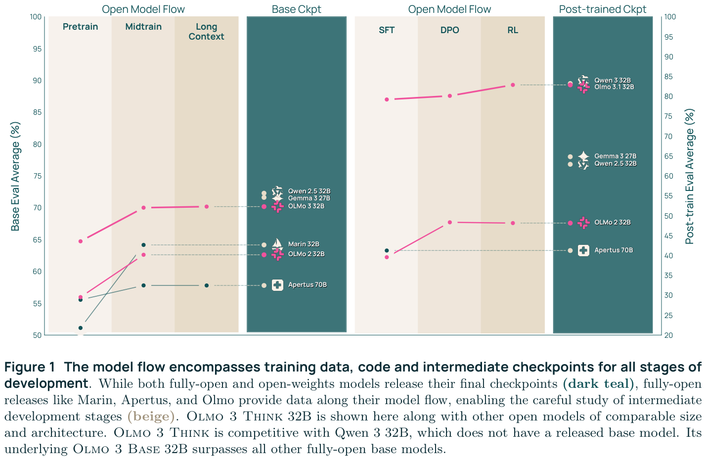
此外，我们还训练了 Olmo 3 Instruct 7B 和 32B 模型，通过调优让它们生成更短、更直接的回答。通过避免中间“思考”输出，Olmo 3 Instruct 有效降低了响应延迟，并针对通用聊天和函数调用进行了优化。Olmo 3 Instruct 7B 和 32B 超越了其他规模相近的知名开放权重模型——Qwen 2.5（Qwen 等，2024）、Gemma 3（Gemma 3 Team，2025）、IBM Granite 3.3（Soule 和 Bergmann，2025）以及 Llama 3（Grattafiori 等，2024）——并进一步缩小了与 Qwen 3（Yang 等，2025a）之间剩余的性能差距。最后，我们介绍 Olmo 3
（句子接续原文第 4 页。）
（接续原文第 3 页。）
RL-Zero 7B，这是直接从 Olmo 3 Base 出发，使用强化学习（RL）训练的 Olmo 3 变体。Olmo 3 RL-Zero 使研究人员能够研究基础模型数据如何影响 RL 性能。
Olmo 3 家族是最强的完全开放基础模型集合，超越了 Stanford Marin（Hall 等，2025）、Apertus（Apertus Team，2025）和 LLM360 K2-V2（Team 等，2025）。为了取得这些结果，我们为模型全流程的每个阶段构建了新的数据集。其中包括 Dolma 3：我们的预训练数据混合，包含从爬取来源中精心采样的自然数据；旨在启动推理能力的高质量中期训练数据混合；以及一个以科学为重点的大规模 PDF 文档集合，使 Olmo 3 获得长上下文支持。我们还介绍 Dolci，这是一个后训练数据套件，在 SFT 期间促进逐步推理，为偏好调优提供高质量对比数据，并为强化学习提供具有挑战性的通用和推理提示词。
最后，我们在数据处理、评测、预训练和强化学习各方面开发了一系列新的算法和基础设施改进。其中包括 OlmoBaseEval，一个为计算高效的基础模型开发量身定制的基准套件；以及 OlmoRL，一个纳入针对思考模型的效率优化的强化学习框架。综合来看，这些训练配方由一个将分布式实验与集中式评测相结合的开发框架塑造，使整个模型流水线能够实现协调一致、以能力为导向的改进。
本节简要概述 Olmo 3 模型全流程的所有组成部分，重点介绍我们以超越 OLMo 2（OLMo 等，2024）和其他开放权重模型的方式，针对推理和工具使用能力所采用的方法。后续章节将深入讨论模型全流程的各个组成部分。Olmo 3 的训练分为基础模型训练和后训练两个主要阶段，每个阶段又进一步划分为子阶段，如图 2 所示。
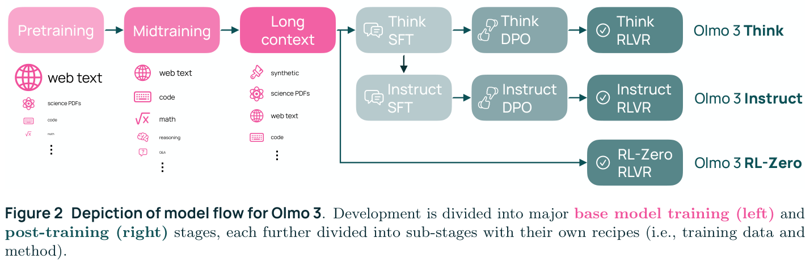
我们分三个阶段开发 Olmo 3 Base：最多 5.9T token 的预训练（§3.4 节）、1000 亿 token 的中期训练（§3.5 节），以及新增加的长上下文扩展阶段，其 token 数为 50B（Olmo 3 Base 7B）或 100B（Olmo 3 Base 32B）（§3.6 节）。
评测。我们开发了 OlmoBaseEval，这是一组基准测试套件，用于支持基础模型开发（预训练和中期训练）过程中的决策。我们的目标是通过基于小规模训练模型作出开发决策，实现计算高效。挑战在于，这类模型在某些任务上的表现可能与随机猜测相当，而分数上的微小差异很难与基准噪声区分。为解决这一问题，我们（1）对评估类似能力的任务簇进行分数汇总（§3.3.1 节）；（2）开发用于评估小规模模型的代理指标（§3.3.2 节）；以及
（接续原文第 5 页。）
（接续原文第 4 页。）
（3）通过在噪声较大的任务中评测更多样例，甚至完全移除这些任务，改善整体信噪比（§3.3.3 节）。
数据课程。我们为每个训练阶段整理专门的数据集，后期阶段侧重于强化对后训练阶段至关重要的能力，例如数学、代码、推理、指令遵循和长上下文理解：
开放产物。我们发布全部中间 checkpoint，以及每个训练阶段结束时的最终模型。对于数据，我们既发布数据混合，即实际用于基础模型训练的 token，1也发布每个阶段的完整源数据池：预训练包含 9T 个清洗后的源 token，中期训练和长上下文扩展分别包含 2T 和 640B 个专门数据 token。除了 Olmo 3 Base 的实际训练混合，我们还发布较小的采样混合，以便在更少算力下开展实验（预训练为 150B，中期训练为 10B）。
我们将 Olmo 3 Base 后训练为三个模型变体：
1 数据混合可能包含对数据池中数据的上采样或重复使用。
（Olmo 3 Think 的介绍接续原文第 6 页。）
（接续原文第 5 页的 Olmo 3 Think 介绍。）
表 1 展示了 Olmo 3 Think 相对于其他开放权重和完全开放模型的评测概况。据我们所知，Olmo 3 Think 是迄今最强的完全开放思考模型。它优于 Qwen2.5-Instruct、Gemma 2 和 3 27B、DeepSeek R1 以及 Distilled Qwen 32B；它也接近 Qwen 3 和 Qwen 3 VL 32B 模型，在训练 token 数约为它们六分之一的情况下，缩小了与类似规模最佳开放权重模型的差距。
关于 Olmo 3 模型全流程中其他模型的更多细节与结果，请参阅以下快速索引。
训练大模型的成本通常以单个美元金额报告，往往是按市场价格将 GPU 小时换算成美元，例如 DeepSeek V3（DeepSeek-AI 等，2025）消耗的 H800 小时对应 557.6 万美元（$5.576M）。为了更具代表性地反映训练 Olmo 3 32B 所需的资源，我们改为报告训练期间实际经过的墙钟时间。
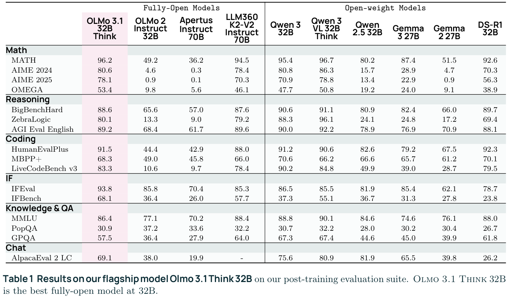
总体而言，在一组专门用于 Olmo 3、配备 1024 块 H100 GPU 的集群上，从开始训练到评测 Olmo 3 Think 32B checkpoint，约经过了 56 天。32B 的 3.1 Think 和 Instruct checkpoint 是在这段时间之后训练的。这段训练时间主要反映了将我们最佳配方应用到模型上的过程，2并不包含可能显著延长时间的大幅修改或研究想法。按每 H100 小时 2 美元计算，成本为 275 万美元（$2.75M）。运行时间分解如下：
虽然预训练占总 GPU 小时数的大部分，但仍有不可忽视的一部分用于后训练，
（句子接续原文第 8 页。）
2 该配方在 7B 或更小规模上开发，然后迅速应用于 32B。
（接续原文第 7 页。）
以及主要训练阶段切换时所需的重复 checkpoint 评测。仅报告预训练小时数并不能涵盖这些额外成本，而它们在模型的完整开发周期中仍然占有重要份额。支出主体所对应的更多预训练细节见附录 A.2。
Olmo 3 Base 的目标是建立一个强大的基础，支持多种通用能力，同时使思考、工具使用和指令遵循等下游能力能够在后训练期间轻松被激发。本节介绍 Olmo 3 Base 的配方，组织如下：
表 2 和表 3 将 Olmo 3 Base 32B 和 7B 与领先的完全开放和开放权重基础模型进行比较，展示了评测设计的有效性，以及 Olmo 3 Base 在广泛能力上的强大表现。
Olmo 3 Base 是 32B 参数规模上最佳的完全开放模型，超越 Stanford Marin 32B 和 Apertus 70B。在数学和代码的综合评测上，相比其他完全开放的 32B 模型，它取得两位数的提升，与强大的开放权重基线仅相差几个百分点。在 MCQA 基准上，其 STEM 和非 STEM 分数与 Marin 32B 和 OLMo 2 32B 接近，比最强开放权重模型低几个百分点；在 GenQA 上，Olmo 3 Base 与 Marin 32B 和 OLMo 2 32B 构成完全开放模型的领先组，在开放权重基线中仅略逊于 Llama 3.1 70B。在 7B 规模上，Olmo 3 Base 在完全开放模型中取得最强的数学和代码性能，显著领先 Marin 8B、Apertus 8B 和 OLMo 2 7B。相比开放权重模型，它在数学和代码上仅落后于 Qwen 和 Nemotron Nano 等最强模型。在 MCQA 中，Olmo 3 Base 7B 在 STEM 和非 STEM 领域均与最强完全开放模型相当。最后，在 GenQA 任务上，在列出的完全开放模型中，Olmo 3 Base 仅落后于 Marin；在列出的开放权重模型中，仅落后于规模更大的 Gemma 2 9B 和 Llama3.1 8B。
Olmo 3 的建模与训练大体遵循 OLMo 2。本节重点介绍关键差异，更多细节参见附录。
架构。我们采用基于 Vaswani 等（2017）的仅解码器 Transformer 架构。架构细节见附录 A.2 的表 33。与 OLMo 2 相比：
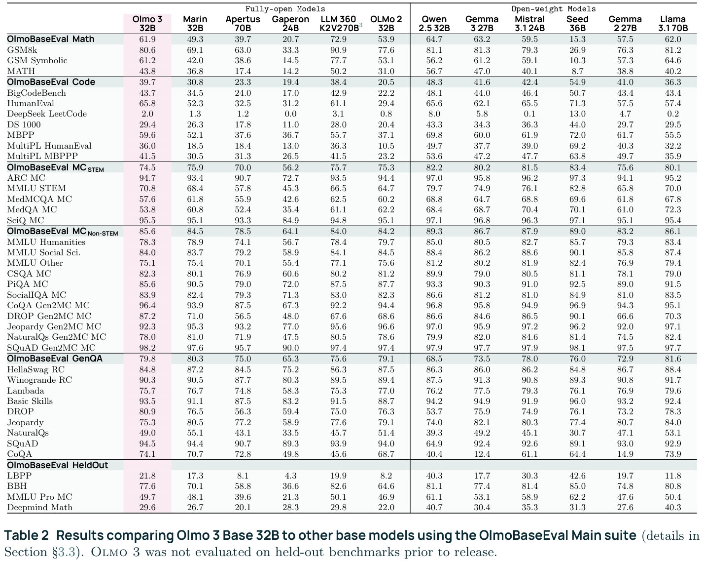
（接续原文第 8 页的架构差异。）
训练。Olmo 3 Base 使用 OLMo-core4 代码库进行训练。在这一技术栈下，序列长度为 8192、全程采用 bfloat16 精度时，7B 模型的训练速度为每块 GPU 每秒 7700 token，32B 模型为每块 GPU 每秒 1960 token，分别对应约 43% 和 41% 的 MFU。我们将 PyTorch 内置的 torch.compile()、attention（Dao，2024）和语言建模头（Hsu 等，2025）等操作的自定义内核、异步批量指标收集以及异步 checkpoint 写入等优化结合，达到这一性能。
OLMo-core 支持预训练、中期训练、长上下文扩展和 SFT，同时提供辅助工具，用于 checkpoint 与 Hugging Face Transformers 格式之间的双向转换，以及模型 checkpoint 合并。DPO 和 RL 支持已经列入计划，但尚未完成。
训练 Olmo 3 Base 7B 和 32B 的超参数见附录 A.2 的表 35。与 OLMo 2 一样，我们按数据课程和学习率调度定义的阶段进行训练（细节见附录表 35）。每个阶段的基础设施和分布式训练配置汇总于附录表 34。
3 此处 K2 V2 的结果使用 2026 年 1 月 22 日上传的更新版预训练 checkpoint，它在 Olmo 3 之后发布。
4 更多细节与代码：github.com/allenai/OLMo-core。
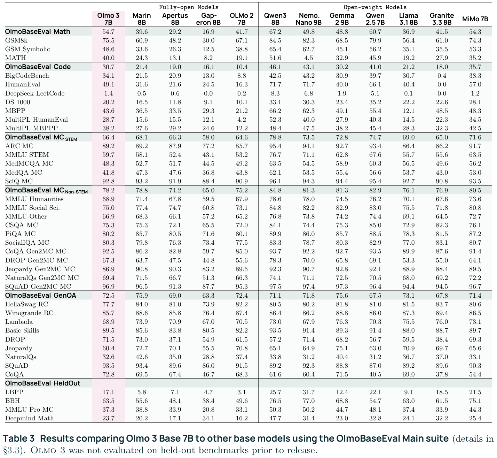
tokenizer。我们在每个阶段使用与 OLMo 2 相同的 tokenizer 处理数据，该 tokenizer 衍生自 OpenAI 的 cl100k（OpenAI，2023a,b）。
模型开发需要反复作出大量数据和训练决策。然而，基准并不是完美的决策工具：不同评测只有在特定规模和能力范围内，才对开发决策敏感（Magnusson 等，2025）。已知在较小计算规模下训练的模型，在数学、代码和多项选择问答（MCQA）任务上可能表现得与随机猜测相当（Wei 等，2022；Gu 等，2024b），而基准噪声会降低对微小分数差异的信任程度（Heineman 等，2025）。为解决这些问题，我们开发了 OlmoBaseEval，这是一组基准套件，用于支持基础模型开发过程中的决策。OlmoBaseEval 包含以下改进：
（列表接续原文第 11 页。）
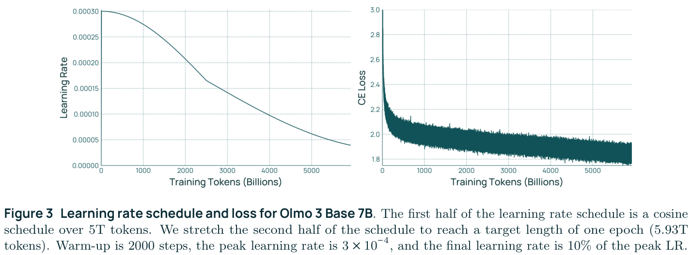
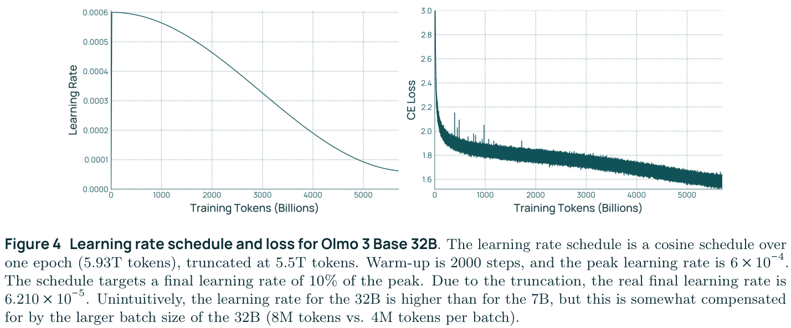
（接续原文第 10 页的改进列表。）
我们首先追求能力的高覆盖率；选择基准时优先考虑科学知识、医学／实验室知识、数学和代码任务。由于我们的数据干预针对的是某项核心能力，而非特定基准（例如“代码”而非“DS-1000”），我们将任务分为若干簇，并预期同一簇内的基准对特定数据变化会表现出相似行为。为了评测采用较小计算预算训练的模型（例如我们最大的实验规模：1B 参数、100B token），我们进行扩展分析，以确定哪些基准在小规模下显示信号，并寻找用于决策的代理指标。最后，我们分析每个基准的信噪比：选择能够提高 SNR 的基准指标，移除噪声过大而无法用于决策的基准，并在某个特定基准的噪声主导汇总分数时，将该基准移出平均值。
为了处理大量任务，我们将相似任务聚成簇，计算宏平均值。我们的目标是使任务簇与数据干预的粒度一致，并让每个簇内的任务表现相似。聚类过程需要确定两个评测之间相似性的方法：为此，我们从 70 个外部开放权重模型中收集了 23K 个基准分数。
利用评测结果数据集，我们假设，如果两个基准对模型的排序相似，它们评估的构念也相似。我们使用 Ward 的方差最小化方法（Ward Jr，
（引文及句子接续原文第 12 页。）
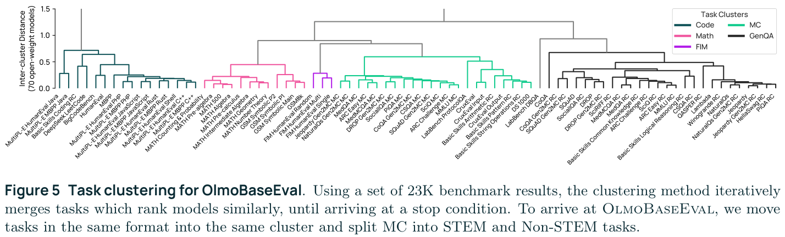
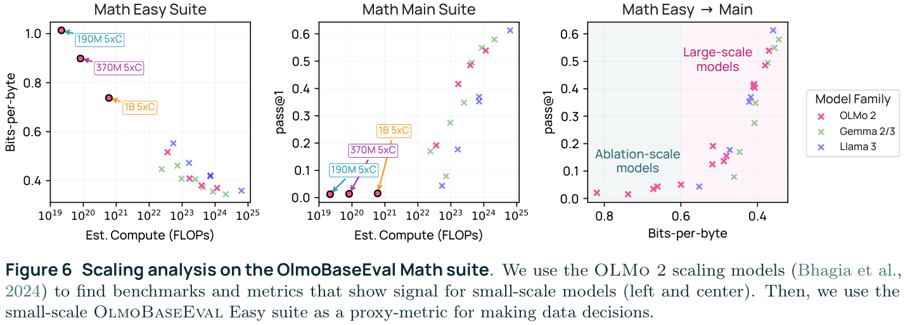
（接续原文第 11 页。）
1963）进行层次聚类，迭代合并评测分数，以最小化簇内不同基准分数之间的方差。图 5 展示了聚类过程的结果；我们手动选择阈值，以平衡簇的数量与粒度。需要强调的是，我们并未直接使用聚类过程的原样结果：我们手动移动了少数任务，确保每个簇内的任务格式一致（例如，需要执行代码的任务全部位于同一个簇中）。最终任务簇为：\(\mathrm{MC}_{\mathrm{STEM}}\)、\(\mathrm{MC}_{\mathrm{Non-STEM}}\)、GenQA、Math、Code 和 Code FIM。
我们评测训练计算量从 \(10^{18}\) 到 \(10^{25}\) FLOPs 的开放权重模型，以确定特定指标和任务在哪种计算规模下适合用于开发决策。在某些评测基准上，小规模训练模型时很难观察到信号（Wei 等，2022）；其他基准则会在接近基准标注误差的位置“饱和”（Vendrow 等，2025）。然而，虽然许多任务呈现出涌现现象，已有研究表明，在模型性能尚未脱离噪声底限之前，连续代理指标是更好的决策工具（Schaeffer 等，2023；Huang 等，2024b；Magnusson 等，2025）。我们提出 Base Easy 任务套件，对 Base Main 套件中具有标准标签或人工编写答案的任务测量 BPB；按照 Gao 等（2020）的描述，将答案的负对数似然除以答案字符串的 UTF-8 字节数进行计算。
我们在 Bhagia 等（2024）的 25 个 OLMo 2 scaling laws 模型套件上进行评测，以了解低计算量区域的扩展行为；并评测 70 个开放权重模型，以了解高计算量区域的扩展行为。图 6 展示了最终 Base Main 基准的扩展行为。对于每个任务家族，Base Easy 任务套件在小规模数据消融实验下显示出信号，而 Base Main 任务套件在大规模下仍未饱和，为中期训练中的数据实验留出了提升空间。
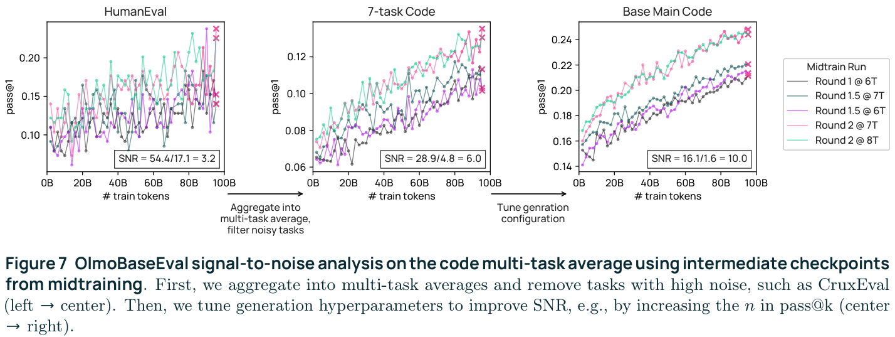
报告宏平均值时，我们希望从每个簇中排除噪声过大、无法帮助开发的任务。我们遵循 Heineman 等（2025）的方法，计算各基准的信噪比：评测 OLMo 2 13B 训练的最后 50 个 checkpoint，以及 10 个在大致相同计算规模（\(4\cdot 10^{23}\) FLOPs）上训练的外部基础模型。根据这些发现，我们从使用 1K 样例子集转为在可用时使用完整评测集。我们将某些基准完全移出评测套件，尤其是 BoolQ（Clark 等，2019）等二分类基准，因为我们发现模型通常在预测多数类别与少数类别之间来回波动。
我们对中期训练重复同样的分析，这次使用的是 5 次初步预训练运行中的中间 checkpoint。一项重要发现是，应将某些基准从宏平均值中分离，例如 CruxEval（Gu 等，2024a）：它测量一项相关且独特的能力（代码输入／输出预测），但会给宏平均值引入过多噪声。图 7 展示了中期训练中间 checkpoint 上三个单独基准的 SNR 与 Base Main 任务平均值的比较示例。
最终的 OlmoBaseEval 包括 Base Easy 套件，用于在较小计算预算下（例如参数少于 1B）作出开发决策；以及 Base Main 套件，用于最终预训练运行和中期训练的开发决策。Chat 套件的细节稍后在 §4.1 节介绍。OlmoBaseEval 包含 43 个任务，基准数量超过 OLMo 2 的 4 倍，包括在预训练期间跟踪数学和代码基准。为避免对开发套件过拟合，我们纳入由 4 个基准组成的留出集——MMLU Pro、DeepMind Math、LBPP 和 BBH——每个基准对应预训练所针对的一类广泛能力。
该套件包含四种新基准：BasicSkills，由 6 个任务组成，用于单独考察预训练期间的技能发展（例如基本算术、推理和编码）；Gen2MC，将 5 个短形式生成任务转换为多项选择版本；MT MBPP，将 MBPP 翻译为 17 种编程语言的 BPB 数据集；以及 Masked Perplexity，一种新的评测方法，应用 token 掩码，只在难以学习的 token 上计算 PPL。我们在 UltraChat 和 WildChat 上使用掩码 PPL 进行评测，为预训练中的真实用户交互评测提供广泛覆盖。OlmoBaseEval 的更多设计与实现细节见附录 A.4。
我们首先在 Dolma 3 Mix 上训练 Olmo 3 Base，这是我们的 6T token 预训练数据混合。虽然 Dolma 3 Mix 主要由其他开放预训练配方（Soldaini 等，2024；Bakouch 等，2025；OLMo 等，2024）所使用的相同类型数据来源组成，但我们展示了三项关键创新：
（列表接续原文第 14 页。）
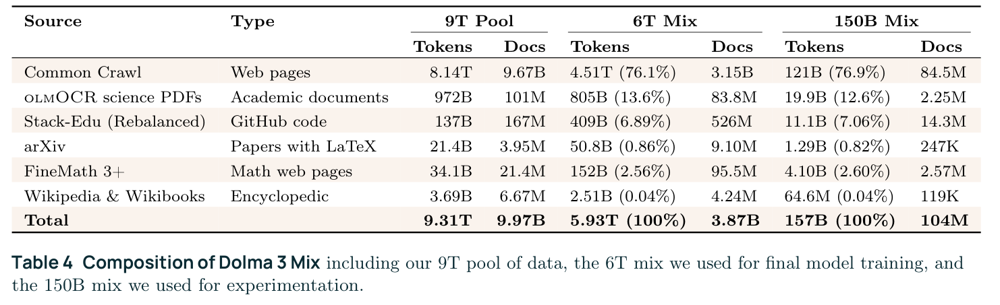
表 4 汇总了我们的数据来源、数据池大小和最终训练混合。5由于开发基础模型是我们开发过程中计算最密集的部分，需要在万亿 token 上训练，且消耗总计算量的 90% 以上，我们遵循两项主要原则来指导数据策略：
图 8 汇总了创建 Dolma 3 Mix 预训练数据的流程步骤。本节后续内容会更详细地介绍这些步骤。
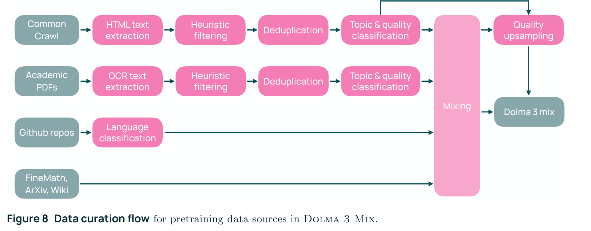
5 我们发布的训练混合是对实际训练运行中所采样数据的重建。重建版本中的 token 涵盖该训练运行实际训练过的全部 token，而其中的文档则是训练期间至少贡献过一个 token 的所有唯一文档的并集。
我们采取以下步骤，从 CommonCrawl（Common Crawl Foundation）整理预训练数据；这构成了预训练语料的大部分。
文本提取。我们从 CommonCrawl 语料的 104 个转储开始，截止日期为 2024 年 12 月 31 日。遵循 DCLM（Li et al., 2024a），我们使用 Resiliparse（Bevendorff et al., 2018）移除 HTML 残留，并从 WARC 文件提取语义文本。在适用的情况下，我们直接使用 DCLM-pool6（Li et al., 2024a）中原始的 Resiliparse 提取数据；对于 DCLM-pool 未包含的转储，则应用 Resiliparse 提取。
启发式过滤。我们应用一系列启发式过滤步骤，将最初收集的 252.6B 份文档缩减到适合预训练的规模。流程紧密遵循 DCLM（Li et al., 2024a），仅做少量修改，以提高数据质量和计算效率。首先，我们通过 URL 过滤，利用扩展的屏蔽列表移除垃圾内容和成人内容。然后移除过短或过长的文档，再过滤包含过多符号或字母字符不足的文档。接着，我们移除含有大量内部重复内容的文档，并通过过滤去除常见垃圾短语，将被这些启发式规则识别出的文档全部移除。随后使用 fastText 分类器7 识别每份文档的语言，只保留包含英语文本的文档。最后，我们应用 Madlad400（Li et al., 2024a）的句子级启发式规则。总体而言，该流程将数据池大小缩减 84.6%，得到包含 38.8B 份文档的语料。更多细节见附录 A.2。
去重。从 CommonCrawl 收集的网页数据自然包含大量重复文档。这些重复来自对同一网站的反复抓取、跨多个网页出现的近似文档副本，以及高度重复的模板文本。我们的去重策略受到先前工作中三项观察的启发：1）去重通常能使训练更高效地利用 token（Lee et al., 2022）；2）重复次数可以作为数据质量的弱信号，重复次数越高，质量越高（Fang et al., 2025a）；3）文档重复超过少数几次后，收益会迅速递减（Muennighoff et al., 2025a）。
基于这些观察，我们设计了支持后续基于质量上采样步骤（第 3.4.4 节）的去重策略。我们在多个粒度上对数据集进行严格去重，旨在移除完全相同的副本、近似重复和重复填充文本。虽然这必然舍弃重复次数所携带的质量信号，但它生成一个干净的基础数据集，我们之后可以从中有选择地为高质量文档重新引入重复。目标是得到整体重复尽可能少、任何重复都集中于高质量数据的最终数据集。我们分三个不同阶段实施去重：
6 data.commoncrawl.org/contrib/datacomp/DCLM-pool/index.html
7 fasttext.cc/docs/en/language-identification 中的 lid.176。
语料中至少保留每个重复子串的一次出现。然后，我们合并标记重复子串的区间，以一并移除夹在较长重复片段之间的短子串。该流程移除了 14% 的文本字节，得到 9.7B 份文档，共计 36.5T 字节的未压缩文本。
这三个阶段的流程将网页语料从 38.7B 份文档缩减为 9.7B 份，文档数量减少了 75%。随后，我们可以按主题和质量划分这一经过严格去重的数据集，并以可控方式上采样用于训练。
为扩展去重策略的规模，我们开发了 Duplodocus 工具8，这是一个以原生 Rust 实现的工具包，用于大规模分布式执行基于哈希的精确去重和基于 MinHash 的模糊去重。
主题和质量分类。我们使用 WebOrganizer 工具（Wettig et al., 2025）将去重后的语料划分为 24 个主题（例如“成人内容”“政治”或“科学与技术”）。为加速 Dolma 3 数据池的处理，我们将 Wettig et al. (2025) 基于 Transformer 的模型蒸馏为一个更简单的 fastText 模型。9我们仅按主题划分，不按格式划分。我们还训练并应用一个基于 fastText 的质量分类器10，为每份文档分配质量分数。遵循 DCLM（Li et al., 2024a），我们使用 OpenHermes-2.5（Teknium, 2023）和 ELI5（Fan et al., 2019）作为正例训练样本，并补充 UltraChat-200k（Ding et al., 2023）和 WildChat-1M（Zhao et al., 2024a）。负例训练样本由从 DCLM-RefinedWeb 采样的 30GB 数据构成。
我们对完整去重语料应用主题和质量两种分类器，以划分数据集。先按主题划分文档，再在每个主题分区内部计算质量分数的百分位，并将文档细分为二十分位桶（每个桶覆盖 5 个百分点）。这一两阶段划分产生 480 个互不相交的子集（24 个主题 × 20 个质量层级），从而能够精细控制预训练混合的主题与质量分布。
最终网页数据池。上述步骤得到一个包含 8T token 的已标注数据池，按主题和文本质量分桶。这一数据池是预训练混合的基础，不过构建最终训练数据还需要额外处理。具体而言，我们应用基于质量的过滤和主题重新加权，以生成均衡的高质量混合，见第 3.4.4 节。
我们整理了一个新的学术 PDF 数据集，替代此前使用的 peS2o（Soldaini and Lo, 2023）。这些文档以“礼貌”的方式抓取：我们将爬虫标识为 AI2Bot11，遵守 robots.txt，并且不绕过付费墙。爬虫种子重点覆盖学术网站和论文仓库。我们使用首个版本的 olmOCR（Poznanski et al., 2025a）处理所有 PDF。最终，这次抓取得到 238 million 份唯一 PDF 文档，截止日期为 2024 年 12 月。
olmOCR 文本提取。为将 PDF 转换为训练器可使用的格式，我们进行预过滤和文本提取。对于包含原生数字文本的文档，我们使用 Lingua 语言检测器仅保留英语文档，并移除垃圾信息或 SEO 优化关键词占总词数超过 0.4% 的文档。随后使用 olmOCR（Poznanski et al., 2025a）（版本 0.1.49–0.1.53）提取文本。如果 olmOCR 失败，则用 Poppler 的 pdftotext 回退处理；需要这种回退处理的页面比例超过 1/250 的文档，会被排除出语料。这得到包含 160 million 份 PDF 文档的数据集。
去重。然后，我们使用 MinHash 算法识别并移除模糊重复。这与第 3.4.1 节针对网页文本语料应用的 MinHash 步骤略有不同：我们采用 FineWeb（Penedo et al., 2024）的 MinHash 参数，目标是相似度至少达到 75% 的文档对；并省略穷尽的两两 Jaccard 相似度检查。在这一去重步骤之后，剩下 156M 份文档，移除比例为 2.3%。
8 github.com/allenai/duplodocus
9 huggingface.co/allenai/dolma3-fasttext-weborganizer-topic-classifier
10 huggingface.co/allenai/dolma3-fasttext-quality-classifier
11 抓取声明：allenai.org/crawler
PII 过滤。接下来，我们从 PDF 数据池中移除包含个人身份信息（PII）的文档。目标是移除包含敏感独立 PII（例如政府签发的身份标识和登录信息）的文档，以及将个人经历、医疗、位置、就业或教育信息关联到特定个人的文档。经过迭代，我们确定，有效的 PII 检测必须考虑文档类型。例如，会议论文可能包含作者姓名和工作单位，但研究论文原本就准备公开发表，因此移除它们并不合理。与此同时，银行账单可能包含相同的姓名和雇主信息，却显然不应作为语言模型训练数据。我们遵循的规则是：这种文档类型是否旨在公开传播？我们通过人工标注员迭代确定哪些文档类型不适合公开传播，以及应考虑哪些 PII 属性。最终形成的分类体系被用于多阶段、基于模型的 PII 过滤流程。
首先，我们将每份文档的第一页通过提示交给 Gemma 3 12B（Gemma 3 Team, 2025）分类，判断其是否包含敏感独立 PII，或将敏感信息关联到个人。接着，我们使用 Gemma 3 4B 处理每份文档的前 5,000 个字符，得到一组描述文档类型的标志。依据这些分类结果，我们制定了一套规则，识别哪些包含 PII 的文档类型应该公开可用，哪些应当被过滤。最终，这移除了剩余数据池的 4.9%，得到包含 148 million 份文档的数据池。关于 PII 移除流程的更完整概述，见 Poznanski et al. (2025a)。
启发式过滤。移除 PII 后，我们进行一轮启发式过滤，进一步移除低质量文档。这一步的过滤检查包括：最初没有被 Lingua 过滤器识别出的非英语文档；表格比例超过 30% 的文档；以及数字比例超过 20% 的文档。随后，我们将 Markdown 表格转换为 HTML，并移除 URL 引用。这些过滤步骤组合后，得到包含 108 million 份文档的语料。然后，根据 WebOrganizer 主题分类器（Wettig et al., 2025）将语料划分到 24 个主题桶，并交给混合步骤（第 3.4.4 节）。
代码。对于代码数据，我们使用 Stack-Edu（Allal et al., 2025），这是对 the-stack-v2 数据集（Lozhkov et al., 2024）中 GitHub 仓库的改进整理，额外过滤以保留具有教育价值的编程内容。我们保留按编程语言划分的数据分区，以供后续混合。
数学。与 OLMo 2 一样，我们纳入 Proof-Pile-2 数据集（Azerbayev et al., 2023）中的 arXiv 文档；它们来自 RedPajama 数据集（Together AI, 2023），截止日期为 2023 年 4 月。我们主要使用这一来源，因为它保留了原始 LaTeX 记法，使模型既能学习数学内容，也能学习如何正确格式化这些内容。
此外，我们用 FineMath（Allal et al., 2025）替代此前使用的 OpenWebMath（Paster et al., 2023）。FineMath 是 Common Crawl 文档的一个子集，包含数学教育内容，并经过重新处理以保留正确的数学记法。我们纳入 FineMath 分类器评定质量分数至少为 3（满分 4）的所有文档。该数据的截止日期为 2024 年 9 月。
其他。最后，我们纳入 Dolma（Soldaini et al., 2024）的 Wikipedia 和 Wikibooks 来源，作为百科知识的基础来源。这些包括 Wikipedia 和 Wikibooks 的“English”与“Simple”版本，截止日期为 2023 年 3 月。我们使用 WikiExtractor（Attardi, 2015）处理这些来源以移除标记格式，并过滤掉词数不超过 25 的所有文档，以排除模板页面或遇到 XML 解析错误的页面。
上述数据来源总共提供了超过 9 trillion token 的多样化文本数据。要将这一集合转换为训练数据集，需要一个混合与采样流程，精确指定每个来源应纳入最终训练混合的数量，以及应对各来源进行多少上采样（如有）。我们采用一种基于模型群的方法，训练并评估许多较小的代理
模型，并利用结果指导最优混合。此外，我们应用一种新的条件混合流程，以考虑开发周期中数据来源不断完善和更新的事实。本节介绍如何推导各个来源最终的混合比例；对于网页文本，我们只在主题类别层面优化比例，并应用质量感知上采样来获得最终混合。
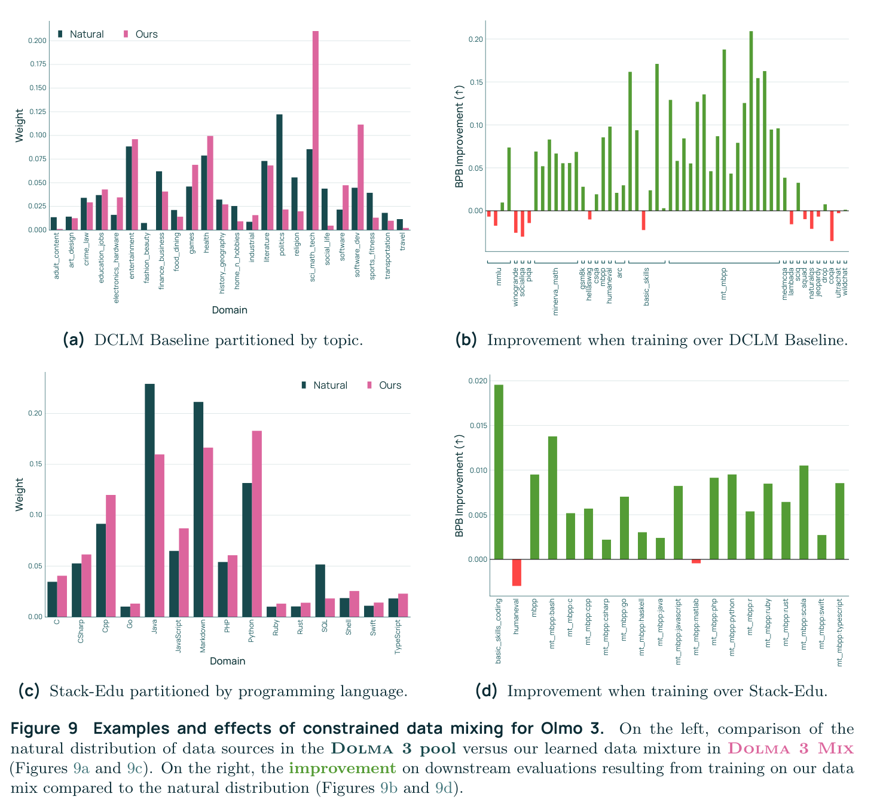
受约束的数据混合。我们在所有预训练来源之间、网页和 PDF 来源内部的 WebOrganizer 主题之间，以及 Stack-Edu 编程语言之间应用数据混合。混合流程（Chen et al., 2026）由两个部分构成：一个在固定数据领域集合上构建高质量混合的基础流程，以及一个称为条件混合的元流程，在领域变化时高效更新已有混合。两者结合，使我们能迭代构建最优混合，并在数据完善或新增时进行调整，无须从头开始。
基础流程采用受 RegMix（Liu et al., 2024a）、Data Mixing Laws（Ye et al., 2025）和 CLIMB（Diao et al., 2025）启发的模型群方法，包含三个阶段：
架构，训练 30M 参数模型，使用 3B token（5 倍 Chinchilla）；每种混合从以自然分布（无混合）为中心的 Dirichlet 分布中采样。经验上，我们启动的模型群规模为领域数量的 5 倍。然后在 Base Easy 套件上评估每个代理模型。
基础流程假设领域固定，但真实的预处理工作流会随着过滤器完善、领域新增，以及质量问题的发现和缓解而不断变化。我们引入一种称为条件混合的新流程，使基础方法能够高效适应不断变化的数据环境，无须每次领域变化都重新计算完整模型群。关键思想是，将已有优化混合视为一个混合比例冻结的虚拟领域，然后在这个虚拟领域加上任何新增或修改领域的集合上，重新运行基础流程。这实际上将基础混合流程限制在混合权重空间的较低维子空间，减少模型群规模和计算成本。关于这一流程的更多细节和论证，见 Chen et al. (2026)。
为构建 Dolma 3 Mix 的权重，我们执行三轮条件混合，每一阶段都在前面阶段冻结的混合基础上逐步构建。首先，我们获得 DCLM Baseline 混合12 内部 24 个 WebOrganizer 类别的优化混合权重，以及来源级混合权重。网页文本是起点，因为它构成最大的数据池，而且我们使用它开发基础混合方法。第 3.4.1 节所述的定制网页数据池定稿与最初几轮混合同步进行，因此第一轮混合使用 DCLM-Baseline，预期学习到的偏好可以迁移到最终网页数据。
在冻结网页文本各 WebOrganizer 类别之间的混合后，我们转向 Stack-Edu 的编程语言混合。与条件混合流程稍有不同，我们固定网页文本比例为数据池的 75%，强制其余 25% 为 Stack-Edu 数据，并只优化这 25% 内部编程语言的组成。最后，我们再进行一轮条件混合，在 DCLM、Stack-Edu 和来源级混合的条件下，整合 PDF 数据的 24 个 WebOrganizer 类别。这种渐进式混合方法十分重要：例如，PDF 整理完成得明显晚于其他来源，条件混合使我们能纳入较晚到来的数据，同时复用已有优化结果，无须重启昂贵的模型群基础流程。
图 9 展示了相较于自然数据分布的混合结果及其性能。对于网页文本（上排图），优化混合大幅提高 STEM 领域的权重（例如“科学、数学与技术”和“软件开发”）。在按 5 倍 Chinchilla 训练的 1B 参数模型上，这种混合得到平均 0.056、最高 0.209 的改善（以 BPB 衡量）；54 项任务中仅 13 项出现退化，且均不超过 0.035。对于 Stack-Edu 中编程语言的再平衡（下排图），优化混合相较于 Java 和 Markdown 更偏向 Python，除两项代码基准外，在所有代码基准上都取得了小幅改善。表 38 进一步展示了方法的适应性：切换开发套件，使其侧重问答、数学或代码，会产生优先优化相应能力的混合。
质量感知上采样。前述数据混合流程确定了不同数据来源和主题之间的最优比例，但没有考虑每个主题内部的质量差异。对于 CommonCrawl 等网页文本来源，我们最初从 DCLM 推导这些比例；DCLM 仅按质量分类器分数进行统一过滤。然而，在另一组实验中，我们发现质量感知上采样可以改善数据受限场景下的性能（见附录）。例如，从 1T token 的数据池构建 250B token 混合时，统一质量过滤（如 DCLM）只会
12 data.commoncrawl.org/contrib/datacomp/DCLM-baseline/index.html
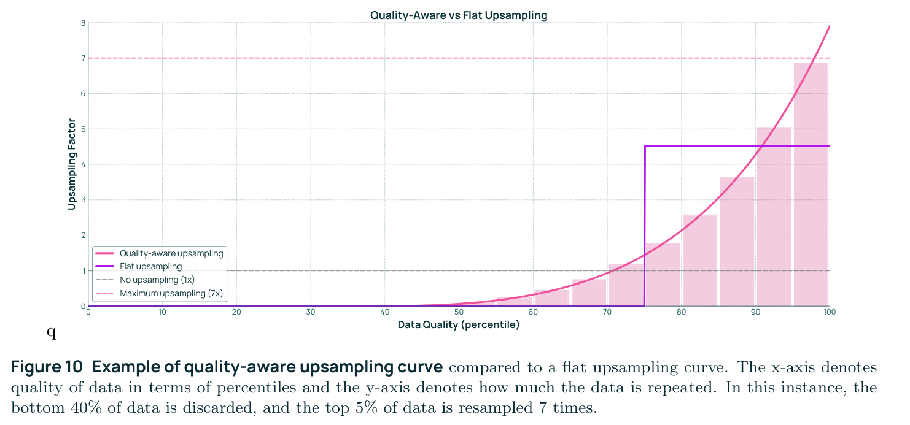
选择质量最高的四分之一。通过上采样质量最高的数据，我们获得了更好的结果：纳入最优 5% 数据的多个副本，以及剩余数据的单个副本，直到达到目标 token 数。
我们用图 10 所示的上采样曲线形式化这种方法。横轴表示数据质量的百分位，纵轴表示上采样倍数。统一过滤在该图上对应阶跃函数，而基于质量的上采样对应单调递增曲线。为了生成训练语料，我们为网页文本池中由 WebOrganizer 定义的 24 个主题各生成一条上采样曲线。每条曲线的积分决定从该主题提取的总 token 数：例如，积分为 2.0 表示平均上采样倍数为 2 倍，得到的数据桶 token 数也是原来的两倍。
为定义每个网页文本主题桶的上采样曲线，我们使用三个约束：1）由混合实验确定的最优主题比例；2）以 token 数衡量的期望总训练时长；3）最大上采样倍数为 7（通过实证确定）。前两个约束控制每个主题桶的目标积分（平均上采样倍数）。第三个约束规定上采样曲线的上界。给定这些约束，我们可以在曲线空间中搜索，找到满足约束的参数化曲线，作为该主题桶的上采样曲线。实际操作中，数据被组织成离散质量桶，划分质量百分位范围。对于每个质量桶，我们对相应百分位区间上的上采样曲线积分，再除以区间宽度，计算其上采样倍数。更多流程细节见附录 A.2。
预训练期间的评估。在预训练运行中途可靠估计模型性能可能很困难，因为运行质量受学习率影响很大（见 OLMo et al. (2024) 第 4.1 节）。对于 7B 模型，我们可以在训练中定期将学习率退火到零，以评估进展，但对 32B 模型来说，这种做法成本过高。为在训练运行中监测 32B 模型的性能，我们采用 Li et al. (2025) 的技术：定期选择四个间隔 1,000 步的 checkpoint，对其权重求平均。
预训练之后，我们进一步训练 Olmo 3 Base，以改善关键基础能力。在中期训练阶段，我们使用 100B 高质量 token，它们采样自本工作引入的全新数据池 Dolma 3 Dolmino Mix。该中期训练数据显著扩展并改进了 OLMo 2 Dolmino Mix，后者是我们为此前模型 OLMo 2 整理的。改善来自两个关键
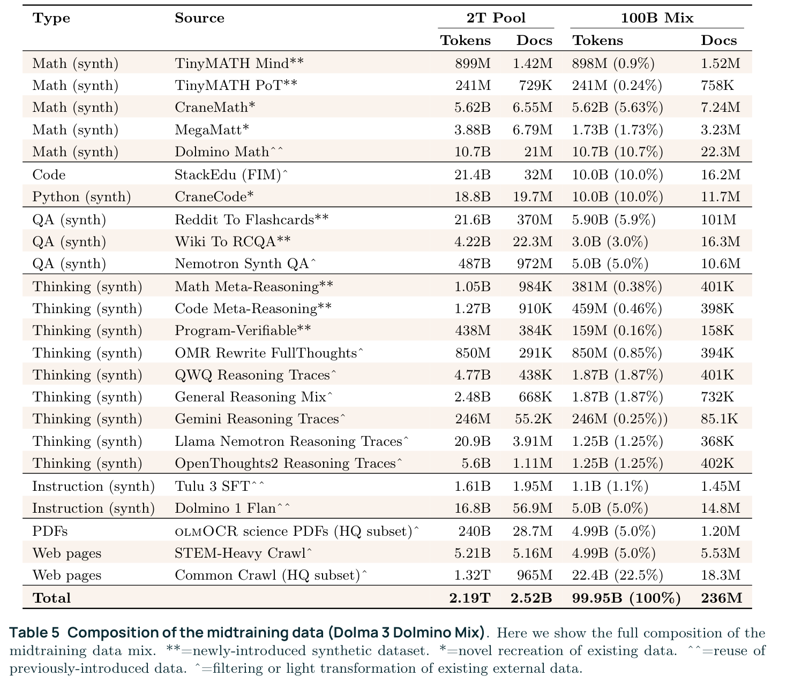
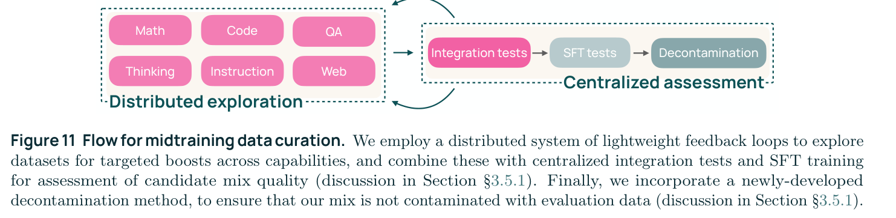
要素：
由此得到的中期训练数据是一个多样化混合，结合了新的合成来源和预训练阶段的数据，但通过质量过滤和改写，使其更符合这一阶段的目标能力。通过中期训练，我们在全部目标能力领域都取得了改善，后续 SFT 训练带来的性能也有所提高。
定向能力提升。在中期训练阶段，我们希望针对广泛领域的能力进行改善：优先获得代码和数学方面的显著提升，同时也争取在问答和通用知识获取能力上取得有针对性的改善，并为后训练中的指令与思考能力奠定基础。这需要一个轻量、分布式的数据集测试框架，使我们能够高效并行研究许多领域的数据集（图 11）。
对于轻量测试，我们使用随 OLMo 2 引入的微退火方法，并进一步修改它，以更系统地建立基线。标准微退火设置如下：1）选择目标数据集；2）采样 5B token；3）匹配 5B 网页 token；4）在产生的 10B 混合上退火。然后，我们将所得 checkpoint 的性能与只使用 10B 网页数据的基线微退火比较，以低成本、高效率评估数据集对基础模型性能的影响，区分出超越仅在网页数据上继续训练所带来影响的部分。13
这一方法使我们能够快速、有针对性地评估中期训练混合候选数据集的质量，并同时在多个数据领域迭代。工作流如下：对于希望改善的每种能力（分为数学、代码、问答、指令和思考类别），我们生成或收集新数据集，作为提升该能力性能的候选；然后通过微退火逐一评估。如果结果有希望，就将新数据集纳入下面所述的更大型集成测试。
集成测试。在进行微退火的同时，我们还开展集成测试，对 100B token 中期训练混合的候选混合执行完整退火运行。这些测试评估候选数据来源组合后的表现；此外，我们可以评估更长的 100B 中期训练运行的效果，与微退火中使用的较短 5–10B token 相比较。
最后，集成运行的 checkpoint 可以快速进行指令调优，并在后训练评估套件上评估；我们使用这一额外步骤，验证中期训练观察到的收益是否能够带来超越基础模型能力的改善。
当新候选数据来源的微退火结果达到一定积累量时，我们定期运行这些集成测试。每次测试都会将微退火中表现有希望的新来源加入更新后的 100B 混合，同时保留先前迭代中的强大来源。
我们总共进行了五轮主要集成测试，本稿报告其中三轮：第 1 轮、第 3 轮和第 5 轮。第 5 轮纳入了新开发的去污染流程（第 3.5.3 节）。对于每种混合，我们在 OlmoBaseEval Main 评估套件上评估所得中期训练模型，并额外通过 SFT 对其进行后训练评估。
使用 Dolma 3 Dolmino Mix 时，我们在中期训练中针对五项核心能力：改善数学与代码、通过问答更好地诱发知识，以及在后训练阶段之前引导指令遵循和推理能力。为与预训练保持连续性，我们保留 Olmo 3 第一阶段的网页和 PDF 数据，但先过滤以获得质量更高的文档；这种方法防止
13 微退火框架允许灵活测试小型数据集，因此微退火的具体设置会根据数据集需求变化。上述设置的变体包括：对只能提供 2.5B token 的数据集进行某些 5B 微退火；某些微退火将目标数据集作为更多样化的 10B 混合中的较小比例进行测试；以及某些用于大量比较不同规模数据集的微退火，采用原始微退火方法，省略计算量匹配的基线比较，直接根据各自的退火收益评估。
训练数据分布过度偏移。表 5 列出最终混合的组成，其中结合了新引入的合成数据和对现有数据的改进。下面按能力类别概述整理工作和最终选中的数据。更多细节见附录 A.3，Dolma 3 仓库14 提供了新数据集的描述和复现资源。
数学能力。对于数学能力，我们扩展了 OLMo 2 Dolmino Mix 的工作。我们总共考虑了 25 个数据来源，并通过 80 次微退火运行进行评估。最终选定了 5 个表现最佳的数学专用来源的组合，其中 4 个是新合成的。对于表现优异但没有宽松许可的现有数据集，我们仿照它们合成新数据。
下面列出并简要概述最终混合中包含的数学定向数据来源。关于数据生成流程和微退火结果的更多细节，见附录。
代码能力。改善代码能力的工作包括两条主线：1）整理质量更高的通用代码数据；2）引入中间填充（FIM）代码能力。最终混合中表现最佳的数据集如下：
14 github.com/allenai/dolma3
15 数学微退火中的性能收益，是相对于退火前基线的改善。
16 教育价值分数使用为 Hugging Face SmolLM 模型系列开发的语言专用分类器，例如 huggingface.co/HuggingFaceTB/stack-edu-classifier-php。
从每个语言子集中排名前 20% 的桶进行加权随机采样。微退火验证，这种质量过滤与采样流程相结合，相较于 Stack-Edu 的自然分布，以及更简单的采样流程（例如根据分类器分数为每种语言采样排名最高的文档），能够改善代码基准性能。
问答与知识获取能力。我们通过合成两个聚焦特定问答能力的新数据集，以及纳入现有高质量问答数据，来改善问答和通用知识获取能力。最终纳入这些能力的数据集如下：
跨能力指令数据。为了给后训练奠定基础，我们纳入跨领域指令数据集，使模型为指令调优做好准备。
跨能力思考轨迹。我们还整理了涵盖多种领域的多样化思考轨迹，为 Olmo 3 Think 和 Olmo 3 RL-Zero 奠定基础。这包括两个新的合成数据集，以及现有思考轨迹数据集的改写和过滤版本。
17 huggingface.co/datasets/bigcode/the-stack-v2-train-smol-ids，由 Lozhkov et al. (2024) 发布。
表 10 提供了进一步结果，展示在完整集成测试层面，中期训练混合中纳入指令和思考数据的影响。
高质量网页和 PDF 数据。最后，我们纳入三类网页/预训练数据，以避免与预训练分布偏离过远。
18 任务列表见附录表 43 和表 44，提示见 github.com/allenai/dolma3/tree/main/datasets/dolma3_dolmino_mix/meta-reasoning。
19 huggingface.co/datasets/pandalla/pandalla-math-dataset-v1.0
20 此方法的文档，包括全部提示，位于 github.com/allenai/dolma3/datasets/dolma3_dolmino_mix/open_math_reasoning_rewrites。
早期 Olmo 模型支持了基础模型训练中基准污染的研究，例如 PPL 评估的去污染（Magnusson et al., 2024），或衡量质量过滤器对评估泄漏的影响（Godey et al., 2025）。在 Olmo 3 中期训练中，我们使用去污染工具，确保与评估数据集之间的污染尽可能少。鉴于研究表明记忆在训练临近结束时最强（Magar and Schwartz, 2022; Bordt et al., 2024），我们将去污染工作集中于中期训练阶段（以及使用相同数据池的长上下文扩展）。
方法和工具。对于去污染，我们查找并移除与评估框架所含任何基准数据集的任何划分匹配的内容，因为对某些基准，我们通过在训练划分上评估来增加样本数量。我们开发新的 decon 包21，检测并移除中期训练数据与基准文档之间的污染。简而言之，decon 分两个阶段运行：
两阶段方法是高效率的关键：检测阶段在不重叠区间进行检查，以加速处理；簇扩展阶段则彻底检查匹配，以计算准确的污染分数。
我们依据大量定性审查调节污染分数，以平衡精确率和召回率。
我们不断迭代完善去污染协议。例如，首个版本因预处理问题未能针对 SQuAD v2 去污染；DROP 的“针对篇章的简短问题”格式也导致处理不正确。我们通过分别评估问题、答案和篇章部分解决这些问题——主要匹配问题，但对于较短或经过编辑的问题，将答案/篇章匹配作为支持信息。对于多项选择评估，我们匹配完整答案，而不只是 A/B/C/D 标签，从而提高精确率。decon 仓库包含能复现早期和最终方法的配置文件。附录 A.5 详细概述 decon。
用于评估中期训练的两部分方法框架，使我们能够紧密跟踪候选混合的质量，以及各个数据来源在与其他来源相互作用时的行为。下面详述这一过程中一些关键发现。
21 github.com/allenai/decon
22 我们针对 OLMES 包中的全部基准去污染：github.com/allenai/olmes。
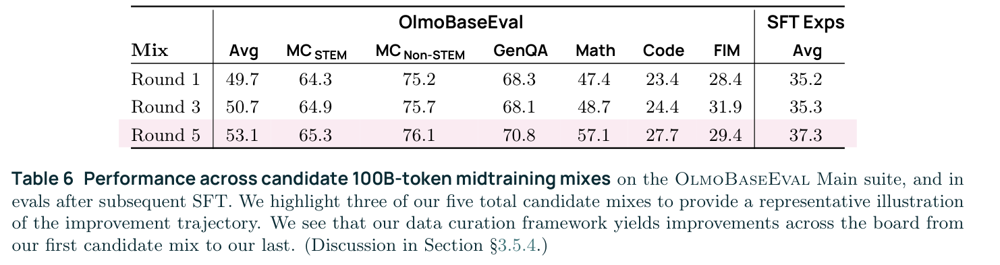
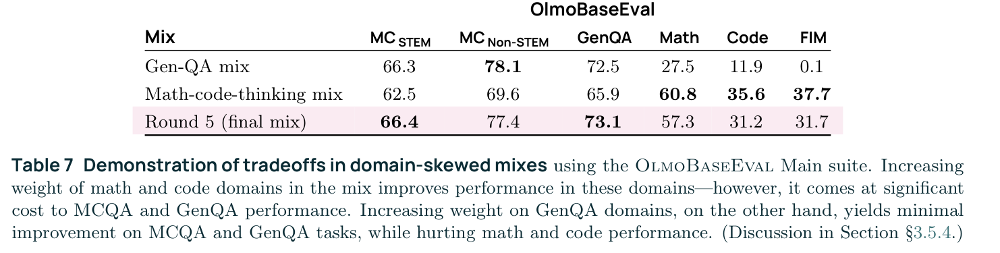
候选混合质量随时间改善。集成测试使我们能够验证候选中期训练混合随时间逐步改善：表 6 展示了三个候选混合样本中的改善，体现开发轨迹。（由于中期训练开发与预训练同时开展，我们在较早的预训练 checkpoint 上开发混合，因此这里的比较用于说明数据整理的进展，不应与最终中期训练数值混淆。）
表 6 显示，在所有基础模型指标以及后续 SFT 训练的评估上，较新的候选混合都持续改善性能。值得注意的是，我们还在第 3 轮与第 5 轮之间引入去污染流程，因此，由于只有第 5 轮体现去污染数据，表中第 5 轮相较于第 1 轮和第 3 轮的收益很可能被低估。
性能体现显著的领域权衡。除核心集成测试外，我们还进行了明显偏向特定领域的探索性 100B 退火，以更好地理解领域权衡。我们将代码/数学/思考能力视为一个领域组，将生成/问答能力视为另一个领域组，并创建修改后的混合，分别优先考虑其中一组、同时省略另一组。Gen-QA 混合提高网页、问答和指令数据的比例，省略数学、代码和思考数据；math-code-thinking 混合提高数学、代码和思考数据的比例，省略问答和指令数据（但保留网页，以避免过度偏离预训练分布）。
表 7 展示了这些运行与最终第 5 轮中期训练混合的比较结果。我们看到，在 Gen-QA 混合上训练导致数学和代码性能显著下降，而 MCSTEM、MCNon-STEM 和 GenQA 性能与最终混合大致相当。相比之下，math-code-thinking 混合的数学和代码性能显著超过最终混合，但 MCSTEM、MCNon-STEM 和 GenQA 性能明显受损。
这些结果表明，在中期训练中相较于其他领域偏向某些领域时，确实存在权衡。尤其可以看到，通过提高数学和代码领域在混合中的权重，进一步改善这些领域的性能具有明显潜力，但这会给 MCQA 和 GenQA 性能带来显著代价。另一方面，提高 Gen-QA 领域权重只会小幅改善问答任务，同时如预期那样损害数学和代码性能。总体而言，这些结果表明，最终中期训练混合在这些领域之间取得了良好平衡，避免过重的领域偏向，并使各项指标都能取得强大的最终性能。
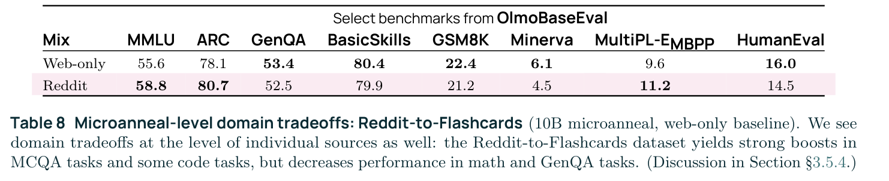
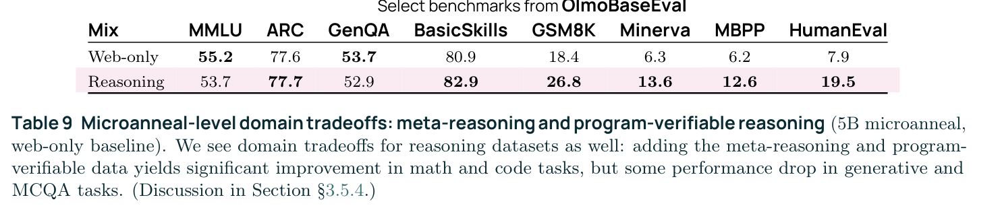
我们也在单个来源层面观察到了这些领域权衡，微退火结果可以体现这一点。表 8 展示 Reddit-to-Flashcards 数据集的微退火比较：相较于仅使用网页的基线，它改善了多项选择任务，并提高某些代码任务，但导致数学和 GenQA 任务性能有所下降。反之，表 9 表明，新的合成推理数据——元推理和可由程序验证的推理——显著改善数学与代码任务，却导致某些 GenQA 和 MCQA 任务性能下降。
思考/指令数据有益于基础性能。我们还通过 100B 集成测试，研究纳入面向后训练的数据（指令数据和思考轨迹数据）的整体影响：对一个中间中期训练混合，分别纳入和不纳入这些数据子集，同时保持混合总 token 数不变。表 10 展示各次训练后的基础评估性能；我们发现，包含这些后训练要素的混合，在每项基础评估指标上都更好。这表明，虽然单个来源和领域存在性能权衡，但总体纳入这些跨领域后训练数据类型始终有益，而且这种收益在后训练之前就已出现。
将特殊 token 留到 SFT 阶段。为指导指令数据集的格式，我们还研究在中期训练数据中纳入或省略 <|im_start|> 和 <|im_end|> 等特殊聊天 token 的影响。我们在 Tulu3-SFT 数据上通过微退火比较包含与不包含这些 token 的版本。实验表明，在包含聊天模板和特殊 token 的数据上训练时，模型在推理时始终会输出这些特殊 token，导致评估分数大幅降低（例如 GSM8K 从 49.43 降至 0，CruxEval 从 32.89 降至 18.91）。进一步分析表明，仅纳入聊天模板、用普通文本替代特殊 token，不会造成同样的性能下降（GSM8K 为 46.02，CruxEval 为 29.65）。这意味着模型行为的扰乱不是由纳入聊天模板这一更一般的操作导致，而是由向 embedding 词表引入预训练中未曾出现的特殊 token 所特有地导致。
虽然模型评估分数的下降主要可以归因于答案解析被扰乱，但这些结果指出了更广泛的问题：在中期训练时纳入这些 token，会使基础模型在推理时输出它们。由于这不是理想行为，我们最终从指令数据中同时移除聊天模板和特殊 token，恢复为简单的基于换行符的格式。
去污染的范围和影响并不相同。图 12 展示了基准污染出现次数最多的十个中期训练数据来源。我们发现，大量污染出现在
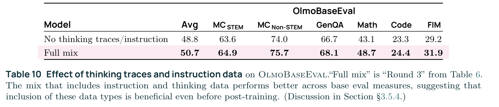
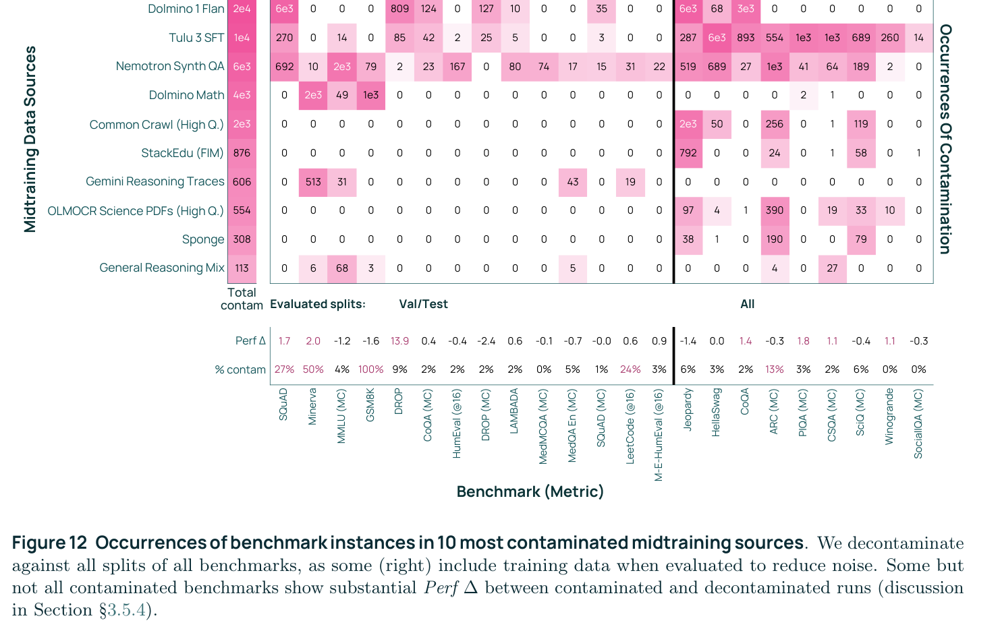
Flan 和 Nemotron 等现有数据集中。并非所有污染都很隐蔽——我们发现许多模板化污染实例，其中的基准字段完全匹配，只是在字段之间插入了模板内容。此外，其中许多不是孤立实例，而是完整的验证或测试划分。例如，Flan 由基准数据上的模板构成，可能包含用于模型开发决策的验证数据，因为测试集是隐藏的（例如 DROP）。
污染有时会夸大性能，但并不总是如此。我们将最终去污染的 100B 退火与使用未去污染数据版本、条件匹配的 100B 退火比较，以研究这一点。图 12 还展示中期训练后，移除污染时基准性能下降的程度（Perf ∆）。一些差异十分显著，例如 DROP、Minerva 和 SQuAD 的验证或测试性能变化。请注意，我们移除了所有基准所有划分的污染，例如，对于 DROP，从 Flan 等来源移除超过 60,000 个训练样本。因此，性能差异可能说明去污染阻止了记忆，也可能说明它移除了分布内训练样本。我们移除全部划分，因为一些开发基准通过在训练和留出划分上评估来扩大样本数量（图 12 右侧）；其中若干也表明，只要任何被评估的基准划分受到污染，就会导致性能高估。然而，其他基准尽管受到污染，却没有显示性能虚高：无论有无污染，DeepSeek LeetCode 性能都接近 0，而使用较容易的 MC 指标时，SQuAD 在两种情况下都已饱和。最后，与相关报告类似，
（接上页）从 Marin 32B（Hall et al., 2025）的结果中，我们发现，尽管去污染流程检测出我们的数据中完整泄漏了 GSM8K，但受污染数据并未带来更好的表现。相反，去污染数据的表现实际上更好；Marin 的作者解释，这一现象源于受污染数据的格式与评测格式不匹配。23
模型融合可以改善中期训练表现。对于 Olmo 3 Base 32B，我们观察到，将两次使用不同随机种子的独立中期训练运行合并，可以显著提升表现。相较于各次独立中期训练，合并后的模型在 MCSTEM 任务簇上提高了接近 1 个点，在 GenQA 任务簇上提高了 0.4 个点；在 Math 任务簇上，相对于第一次和第二次中期训练分别提高了 2.9 和 1.6 个点。其他显著提升包括 MMLU 上约 1 个点，以及 GSM Symbolic 上相对于第一次和第二次运行分别约 5 和 2 个点。因此，我们选择合并模型作为最终的 32B 中期训练 checkpoint。24
现代语言模型的一项关键能力，是处理长序列的能力。这是处理许多现实任务所需长输入的必要条件。此外，生成长序列的中间 token，是实现 test-time scaling 的一种常见技术（Muennighoff et al., 2025b）。本节概述我们将 Olmo 3 的上下文窗口从 8,192 扩展至 65,536 个 token 所采用的方法。我们还介绍 Dolma 3 Longmino Mix：一个包含自然产生以及经合成增强的长文本的高质量数据集。Dolma 3 Longmino Mix 包含超过 6,000 亿个 token；统计见表 11。
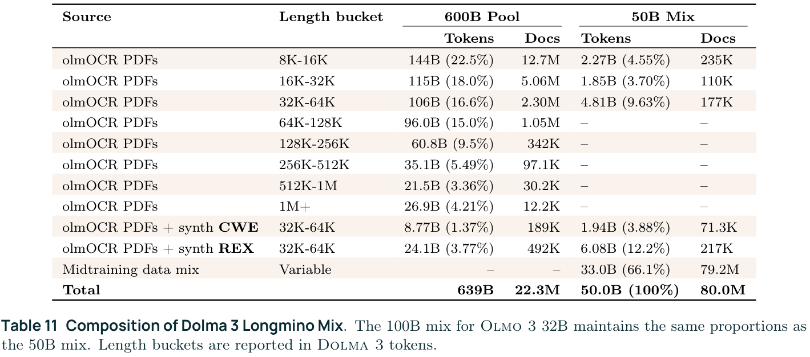
长上下文扩展策略。由于使用长序列训练的计算成本高昂，大多数语言模型先使用较短序列进行预训练，之后仅在模型开发的后期阶段进行扩展。在扩展阶段，模型在较长文档上训练，并且通常会调整位置 embedding 的超参数，以促进位置泛化。
开放模型训练方案差异很大。不同模型执行这种长上下文扩展的方案差异显著。许多语言模型的上下文扩展阶段使用的 token 数量，从数千亿（SmolLM3：100B，Bakouch et al. 2025；GLM 4.5：100B，GLM-4.5 Team et al. 2025；DeepSeek V3：（下页续）
23 这段讨论发布于社交媒体。
24 7B 模型的初步实验没有显示出类似的模型合并收益，因此 7B 中期训练 checkpoint 来自单次运行。
（接上页）123B，DeepSeek-AI et al. 2025；Apertus：225B，Apertus Team 2025），到接近一万亿个 token（Kimi K2：400B，Kimi Team et al. 2025；Llama 3.1：800B，Grattafiori et al. 2024；DeepSeek V3.1：840B，DeepSeek-AI 2025）。不过也有例外：AFM（Goddard, 2025）和 Nemotron Nano 2（NVIDIA et al., 2025）分别仅使用不到 200 亿个 token，便将上下文扩展至 64K 和 128K。也有研究提出独立的扩展方案，其中许多强调 token 效率。例如，ProLong（Gao et al., 2025）使用从书籍和代码中取得的 20B 个 token；LongAttn（Wu et al., 2025b）则利用现有语言模型的自 attention 分数，选取具有长程依赖的文档，构建一个包含 5B 个 token 的语料库。不同模型系列之间另一个重要差异，是在开发流程中的哪个阶段进行扩展：Llama 3.1 模型在中期训练之前进行长上下文扩展，Qwen 2.5 和 3 在之后进行，而 GLM 4.5 仅在 SFT 之后进行扩展。
Olmo 3 的长上下文方案。为扩展 Olmo 3 的上下文，我们使用来自 olmOCR 科学 PDF 池（§3.6.1 节）的长文档，并进一步进行过滤和合成数据增强（§3.6.2 节）。我们将该集合称为 Dolma 3 Longmino Pool。我们将 34% 的长上下文数据与从 Dolma 3 Dolmino Mix 中抽取的 66% 高质量短上下文数据混合，使用这一混合数据，为 Olmo 3 7B 额外训练 50B 个 token，为 Olmo 3 32B 额外训练 100B 个 token，详见 §3.6.3 节。在长上下文扩展期间，我们将 YaRN（Peng et al., 2023）应用于全 attention 层，不调整 SWA 层的位置 embedding；我们采用文档打包和文档间掩码（§3.6.3 节）。图 13 总结了方案的关键组成。在开发该方案时，我们仔细分析并分离出对长上下文表现有深刻影响的架构设计决策；相关研究见 Bertsch et al.（2026）。
总体结果。我们在两个常用长上下文基准上评测经过上下文扩展的模型。RULER（Hsieh et al., 2024）包含合成的长上下文任务，包括具有挑战性的 Needle-in-a-Haystack 任务变体（Nelson et al., 2024），以及需要对输入进行计数的简单聚合任务；我们以 RULER 作为指导长上下文方案开发的主要指标。HELMET（Yen et al., 2025）是一套涵盖多种任务类型的长上下文基准，包括检索、上下文学习和摘要任务；我们在其上评测，以反映更一般的长上下文能力。我们将 HELMET 保留为开发过程中未使用的评测集，并在其上测试最终 checkpoint。25 结果见表 12。
olmOCR 科学 PDF。长上下文数据池的主体，是从网络抓取并由 olmOCR 处理的科学 PDF。26 图 14 描述了表 11 所列各个长度分桶中的主题分布。
数据过滤。我们使用 gzip 可压缩性作为指标过滤数据。gzip 曾用于文本分类（Jiang et al., 2022），以及细粒度 scaling laws 的特征（Pandey, 2024）。我们通过排除极端值来使用 gzip 过滤数据：删除可压缩性最高的 20% 文本，以及可压缩性最低的 20% 文本。
我们也考虑了基于 LongPpl（Fang et al., 2025b）的过滤。该方法对每个 token，衡量在现有长上下文模型中提供更多前置上下文时 PPL 的变化，从而找出最依赖长程信息的 token。我们以 Gemma 3 4B（Gemma 3 Team, 2025）作为参考模型，在 Dolma 3 Longmino Mix 的 10B 个 token 上计算 LongPpl，并比较使用 4K 或 128K 上下文窗口的上下文化效果。我们使用与 Fang et al.（2025b）相同的阈值，判断一个 token 是否属于需要长上下文依赖的“关键”token。
我们为每篇文档计算两项统计量：被标记为关键 token 的比例，以及关键 token 在文档中的分布跨度（计算方式为关键 token 位置的标准差，位置相对于文档长度衡量）。在一系列实验中，我们考虑排除（下页续）
25 RULER 与 HELMET 有一定重叠，因此这并非完全严格的留出评测集；但重叠子集一般是较简单的部分，模型很容易取得接近完美的表现。详见附录 A.8。
26 关于该数据预处理的更多细节，见 3.4.2 节。
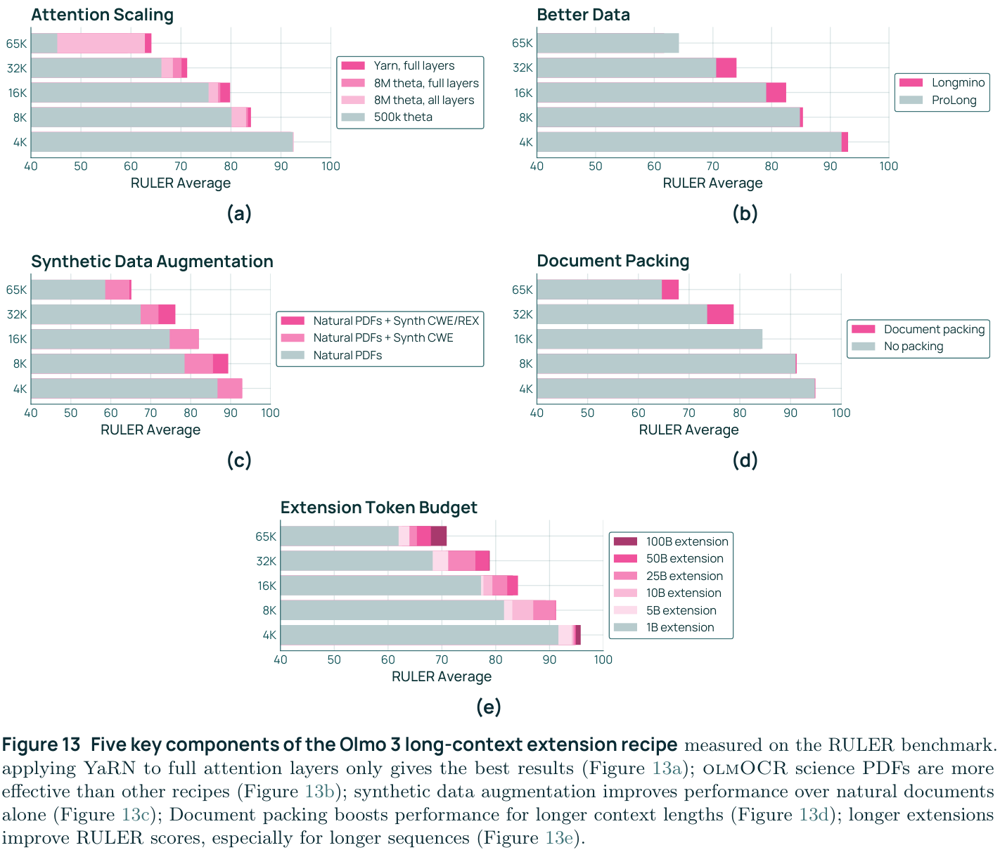
（接上页）关键 token 最少或分布跨度最低的底部 20% 文档，以及将顶部和底部各 20% 视为 outlier 一并排除；这些方案都未能优于 gzip 过滤，因此我们没有在最终运行中使用它们。
扩展上下文语言模型的一种常见用途，是对长输入进行信息抽取和综合（Bai et al., 2024, 2025）。然而，多数长文档并不提供这类任务的监督信号。直接受到 CLIPPER（Pham et al., 2025）的启发，我们在随机抽样的间隔位置插入合成生成的聚合任务，修改部分科学 PDF 数据池。我们的方法也与 Qwen 2.5 1M（Yang et al., 2025b）有相似之处。
生成流程。生成用于长上下文理解的合成数据时，主要挑战是自举问题：在无法使用能处理长上下文的模型时，如何创建有效数据？我们的流程利用文档统计信息识别最重要的术语，再提取包含这些术语的片段。随后，将这些片段提供给语言模型，以创建聚合任务。具体而言：
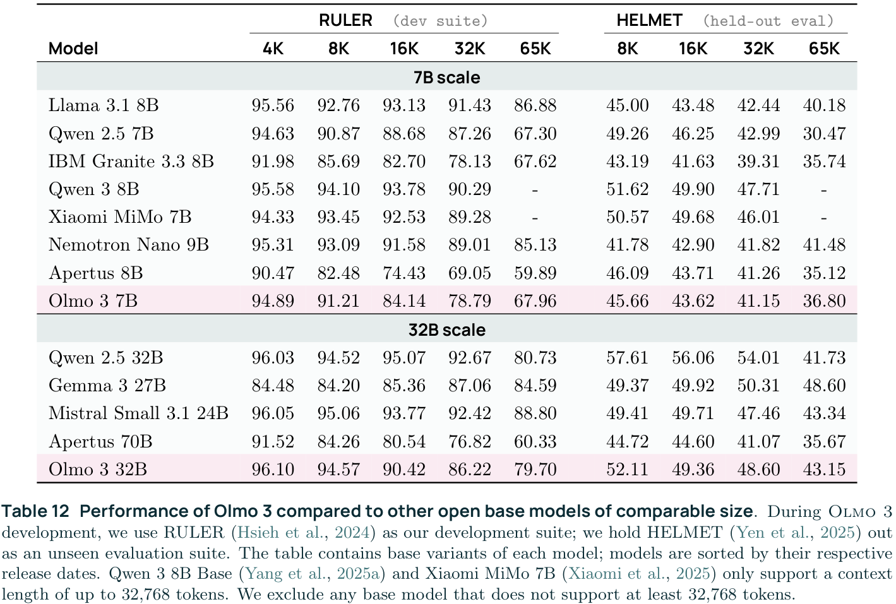
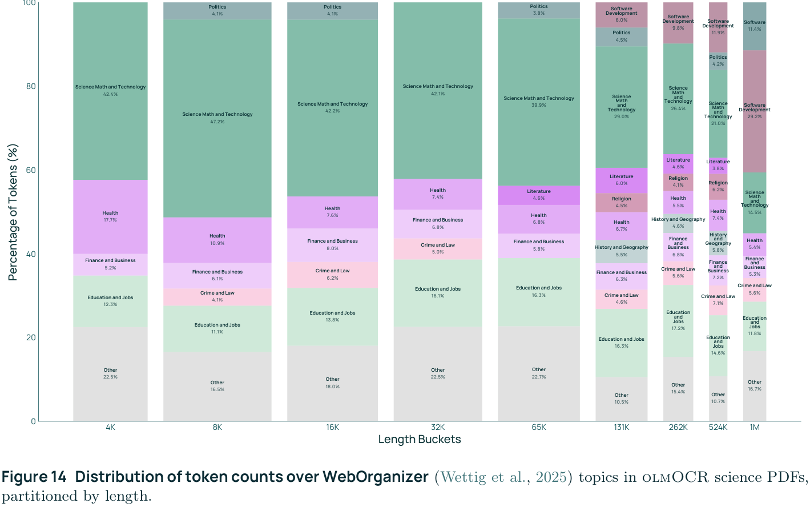
对于 Olmo 3，我们使用长度满足 \(32{,}768 \le n < 65{,}536\) 个 token 的文档，因此每篇文档分为 2 到 8 个分区。尽管我们试验了多个封闭和开放语言模型，最终所有生成均使用 OLMo 2 Instruct 32B。
合成聚合任务。我们考虑两种聚合任务；所用提示的确切内容见代码实现。27
交错使用长、短上下文数据。我们没有仅在长上下文数据上训练，而是混入来自中期训练（第二阶段）的高质量短上下文数据，以确保短上下文任务的表现不会明显下降。对 10B 个 token 扩展的早期实验显示，长上下文与短上下文数据按 66% / 34% 混合，会使 OlmoBaseEval 的一个子集上的表现下降 2.5 个点；相比之下，34% 长上下文与 66% 短上下文的混合仅使表现下降 0.8 个点。
更长的扩展有益。图 13e 显示，为长上下文扩展阶段分配更多 token，可以提高长上下文任务的表现，尤其是在较长序列上。我们通过包含 50B 个 token 的第三阶段训练扩展 Olmo 3 7B 的上下文；对于 Olmo 3 32B，我们使用 100B 个 token 进行扩展，以获得更好的长上下文能力。
RoPE 扩展。Olmo 3 使用 RoPE（Su et al., 2024）在 Transformer 架构中编码位置信息。我们试验了多种将 RoPE 扩展至原始预训练上下文长度之外的方法，包括调整基频的缩放（Xiong et al., 2023；Rozière et al., 2024）、位置插值（Chen et al., 2023）及 YaRN（Peng et al., 2023）。每种方法要么应用于所有 RoPE 实例，要么仅用于全 attention 层的 RoPE。我们发现，仅将 YaRN 用于全 attention 层，能够获得最佳总体表现。
文档打包。在预训练和中期训练期间，我们采用标准方法，将文档拼接后切分为固定长度的训练序列。然而，在扩展上下文长度时，该策略产生的训练样本平均比底层文档长度分布更短。为解决这一问题，我们采用最佳适配文档打包（Ding et al., 2024），在仅增加可以忽略的填充量的同时，减少被切分文档的数量。与朴素的先拼接再切分方法相比，最佳适配打包显著改善了长上下文基准上的表现。
文档内掩码。在长上下文扩展期间，我们使用文档内掩码，确保每个训练序列仅关注来自同一底层文档的 token（Zhao et al., 2024b；Grattafiori et al., 2024）。这可以避免跨文档信号干扰模型，否则此类信号可能引入虚假的 attention 模式，并降低长程表现。
长上下文训练基础设施。为将模型扩展至 65K-token 上下文窗口，我们使用 8 路 CP，使每台设备处理每个训练样本中的 8K 个 token。我们采用 Chu et al.（2025）提出的基于 all-gather 的 CP attention 策略，便于支持不规则的 attention 掩码，包括滑动窗口掩码和文档内掩码。并行配置、基础设施细节及吞吐量测量见附录表 34。
模型融合。鉴于合并中期训练运行改善了 Olmo 3 Base 32B 的表现，我们试验了长上下文 checkpoint 的平均。在此情况下，我们没有以不同种子多次运行长上下文扩展，而是合并扩展运行结束时的最后三个 checkpoint（第 10,000、11,000 和 11,921 步），得到最终的长上下文 Olmo 3 Base 32B。
表 13 概述了 Olmo 3 Base 在预训练、中期训练和长上下文扩展阶段之后的结果，并与其他开放基础模型比较。与 OLMo 2 相比，Olmo 3 模型在科学、数学和代码类评测指标上有明显提升，我们认为这主要来自预训练和中期训练阶段对 STEM 相关数据的重视和上采样。另一方面，由于这种对 STEM 的侧重，我们观察到通用知识基准上的表现略有下降。
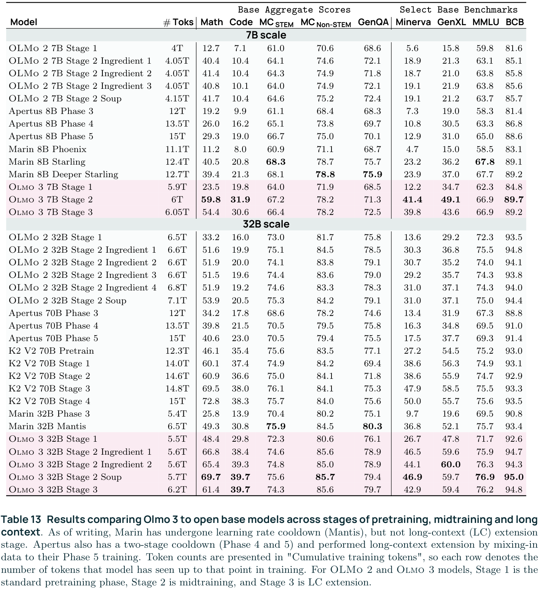
我们训练 Olmo 3 Think 进行推理，使其先生成延长的思考序列，再产生最终答案（图 2）。为实现这一点，我们整理高质量推理数据（Dolci Think），采用三阶段训练方案（SFT、DPO 和 RLVR），并引入 OlmoRL 方法，将我们在算法和工程方面的新进展与强大的 RLVR 社区研究平台相结合。
通过这些数据、训练和算法创新，Olmo 3 Think 在数学、编程、推理以及一般对话上取得了强劲表现。在 32B 规模上，它是最好的完全开放思考（下页续）
（接上页）模型，超过 Qwen 2.5 32B、Gemma 2 和 3 27B，并在训练 FLOPs 更少的情况下，缩小了与 Qwen 3 32B 等顶尖开放权重系统的差距（表 14）。
我们建立一套基准，评测 Olmo 3 后训练模型在数学、推理、编程、精确指令遵循、问答、知识回忆以及一般聊天方面的能力。在 OLMo 2（OLMo et al., 2024）的评测套件基础上，我们加入新的、更具挑战性的基准，并移除已经饱和或噪声较大的基准。表 16 展示评测基准，并描述 Olmo 3 后训练评测套件的任务配置和指标。为简化比较，我们为所有基线模型，包括思考模型和指令模型，设定统一的标准评测配置。具体而言，我们遵循 Guo et al.（2025）、Adler et al.（2024）和 Yang et al.（2025a），使用 32K 最大上下文长度、0.6 的采样温度和 0.95 的 top-p。注意，一些模型可能在更高的推理预算下表现更好，例如 K2 V2（Team et al., 2025）使用 128K 序列长度。评测设置的更多细节见附录 A.8。
推理模型的评测既计算昂贵，又常有较高方差。在利用不同版本的 7B 模型开发方案时——即在最终模型的超参数扫描之前——我们发现评测占用计算预算的 10% 到 20%。汇总结果时，我们对 14 个模型（包括基线和最终模型）各运行 3 次，取标准差的平均值，以衡量套件中每项评测的方差。先求每个模型的方差，再求每项评测的平均方差，我们即可按方差对评测分组。具体分组如下：
28 更具体地说，OpenThought3 和 S1 仅使用 SFT；SmolLM 使用 SFT 和 DPO，但没有应用 RL。
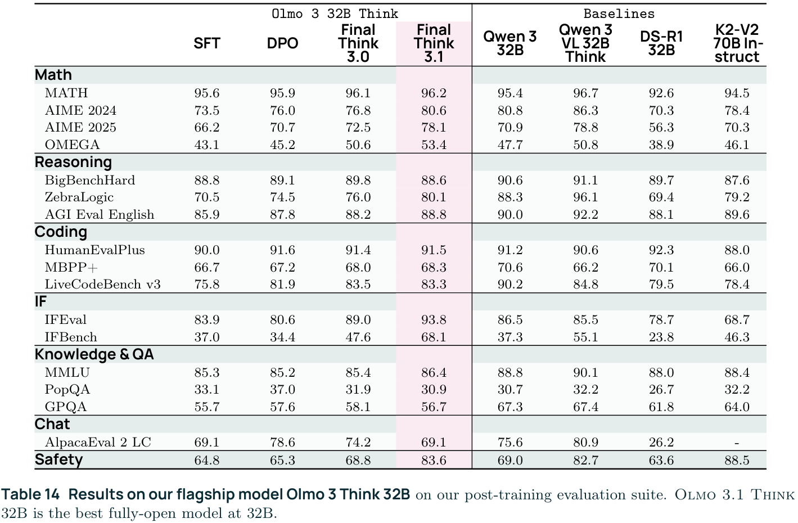
表 14 和表 15 展示 Olmo 3 Think 在不同训练阶段的表现，并在我们的基准上将其与其他相似规模的基线比较。29 如前所述，Olmo 3 Think 32B 是 32B 规模中最好的完全开放模型，超过了 Gemma 2 27B、Gemma 3 27B 和 Qwen 2.5 32B-Instruct 等模型。它使用少 6 倍的训练 token，缩小了与该规模最佳开放权重模型 Qwen 3 和 Qwen 3VL 的差距。类似地，Olmo 3 Think-7B 超过了 OpenReasoning Nemotron 7B、DeepSeek-R1-Distill-Qwen-7B 和 OpenThinker-7B 等优秀开放权重思考模型。此外，尽管规模更小，它与 Nemotron-Nano-9B-v2 的表现相近。在 7B 规模的知识任务上，它落后于 Qwen 3 系列。我们认为，这主要是因为 Qwen 3 模型通过从 Qwen 最大模型蒸馏进行训练。
值得关注的是，我们推出 Olmo 3.1 Think 32B，以说明通过在 Dolci Think RL 数据集上增加训练轮数来延长 OlmoRL 训练，30 可以提升表现。我们在数学、推理和指令遵循基准上观察到明显改善，包括 AIME 提高 4 个点以上、ZebraLogic 提高 4 个点、IFEval 提高 4 个点，以及 IFBench 提高 20 个点，表明额外 RL 训练改善了模型的推理能力。大多数其他基准基本不变，唯独 AlpacaEval 下降了 5 个点。
在这一阶段，我们构建 Dolci Think SFT，使基础模型能够通过微调产生支持准确回答的显式思考轨迹。这一 SFT 步骤对（下页续）
29 在 K2-V2-Instruct 上运行 AlpacaEval 时，LLM 评判器输出出现 token 解析错误，导致偏好分数为空。如果我们能够找到解决办法，会相应更新报告。
30 Olmo 3 Think 32B 训练了 750 步；首次发布后，我们继续运行，训练至 2300 步，得到 Olmo 3.1 Think 32B。由于计算资源限制，我们在此停止，但表现尚未完全饱和，意味着更长运行可能进一步提升表现。
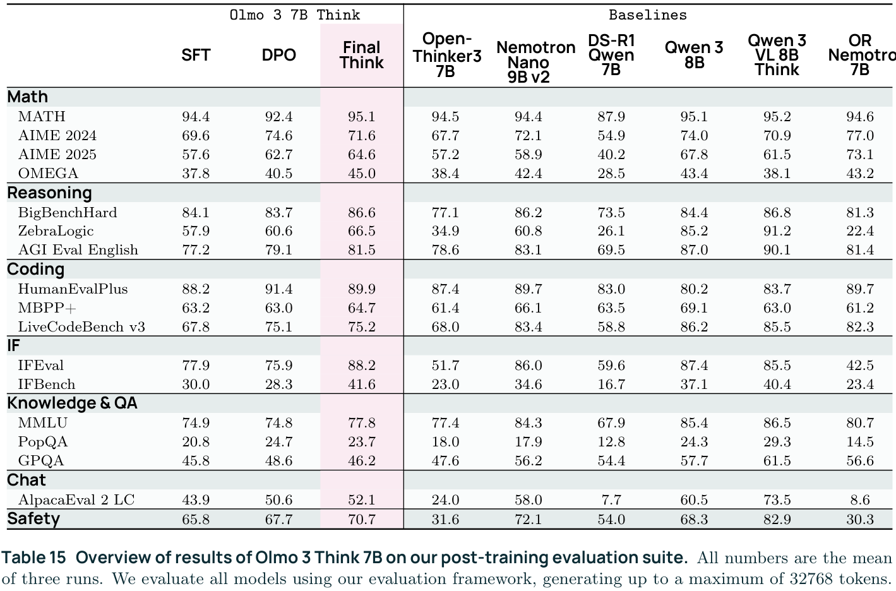
（接上页）较小模型尤其有影响，提供了高效获取强推理能力的机制。下面详细介绍 Dolci Think SFT 数据整理流程（图 15）。
为整理 Dolci Think SFT，我们从其他开放工作（例如 Guha et al., 2025a；PrimeIntellect, 2025）中收集覆盖多种技能的大量提示，对其进行充分过滤，并为其补全合成生成推理轨迹。表 17 概述 Dolci Think SFT 数据混合，具体说明如下：
步骤 1：获取提示并生成推理轨迹
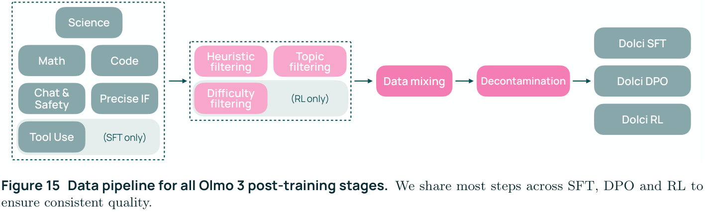
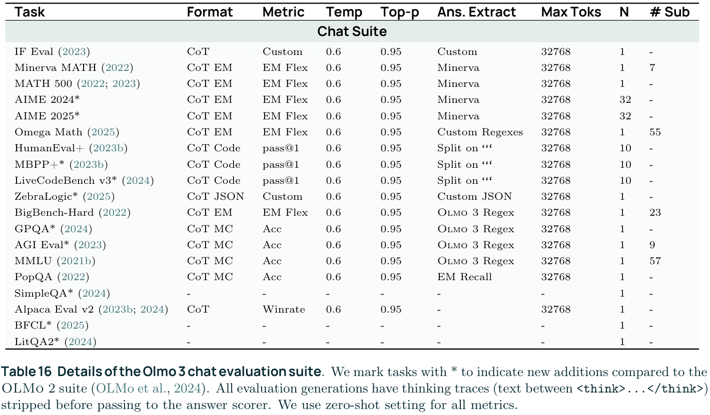
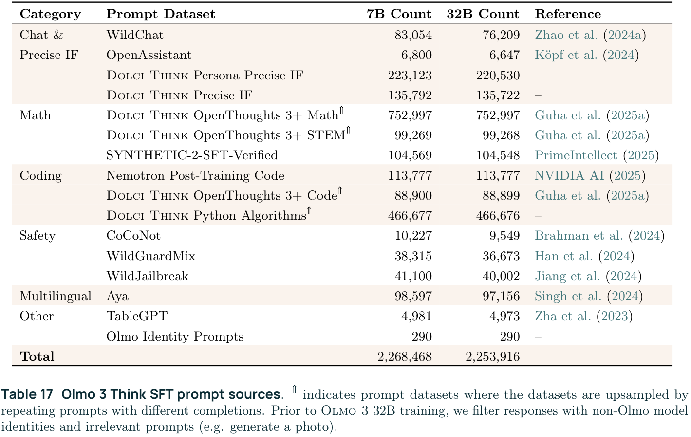
（接第 39 页）原始数据中的 16 倍重复），并使用所有具有完整解答的可用推理轨迹。对于不完整轨迹，我们使用原先用于生成补全的 QwQ-32B，以及与 OpenThoughts3 相同的生成设置，生成完整推理链和解答，但最大长度改为 32K 个 token，而非原始的 16K。我们丢弃重新生成后仍不完整的样本。对于（下页续）
（接上页）SYNTHETIC-2，我们直接使用其经过验证的子集中的补全。
步骤 2：过滤。我们对收集和生成的数据进行广泛过滤。
步骤 3：数据混合。对于数据混合，我们采用与中期训练章节（§3.5 节）所述并行数据收集相似的方法，遵循共同的数据混合标准，开展多轮集成测试。具体来说，我们使用一个小型“基础”混合进行仔细实验，该混合包含从扩展后的 OpenThought 3 数据集中取得的 100K 个样本。我们发现，该基础混合在关键推理基准上的表现足以作为强基线，同时比在完整混合上训练节省大量计算。随后，我们分别训练模型，每个模型使用基础混合加上各类别最多 100K 个训练样本（不进行上采样），观察其对评测套件的影响。如表 18 所示，我们通常发现每个数据集至少有助于一项评测，因此最终混合至少纳入了每个测试数据集的一部分。
步骤 4：去污染。我们遵循 Tülu 3 去污染流程及工具包（Lambert et al., 2024）的推荐设置，过滤所有后训练数据（全部三个阶段）中与评测集匹配的部分。我们使用 8-gram 的 n-gram 匹配及 0.5 的重叠阈值（即测试样本至少 50% 的 n-gram 与某个训练样本匹配）进行过滤。我们开发额外启发式规则来减少误报：（1）忽略与任务无关的文本块的匹配，例如常见的（下页续）
31 为评测过滤流程的影响，我们手动创建了内部基准，对模型进行主观体验测试。
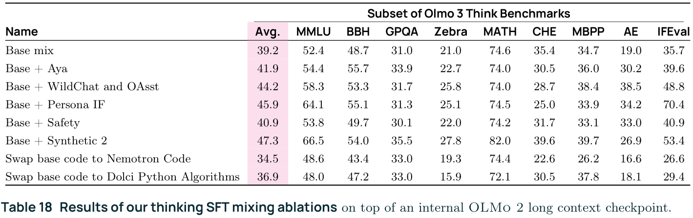
（接上页）通用短语；是否无关按任务通过人工检查确定；（2）尤其对于数学数据集，我们忽略大多数 token 长度为 1 的 n-gram 匹配（通常是数学符号）。
对于 SFT，我们从 Open Instruct 切换至 OLMo-core，使训练吞吐量提高了 8 倍。训练设置和超参数的更多信息见附录 A.6.1。所有模型训练两个轮次，以避免过拟合，并进行学习率扫描，根据评测套件选出最佳候选 checkpoint。随后，我们用一系列定性“主观体验测试”问题测试每个候选 checkpoint，为最终选择提供依据。最后，我们探索模型融合（Wortsman et al., 2022；Morrison et al., 2024）；最终思考 SFT checkpoint 是使用 mergekit（Goddard et al., 2024），对两个采用不同学习率训练的 checkpoint 进行线性加权合并的结果。
一般后训练领域的既有工作，主要将偏好调优视为改善与人类价值观和偏好对齐的方法（Lambert et al., 2024；Lambert, 2025）。因此，近期多数构建以能力为导向的思考模型的工作（Guha et al., 2025a；Ahmad et al., 2025）没有纳入偏好调优（SmolLM3 是一个例外；Bakouch et al., 2025）。我们重新将偏好调优看作对比学习阶段，使能力提升超越单纯 SFT 所能达到的水平。我们推出 Dolci Think DPO：一个包含具有明确能力差异的补全对的偏好数据集。我们利用这些相对对比，通过偏好优化增强模型推理能力，拓展 Delta Learning（Geng et al., 2025）的思路。
具体而言，我们发现，在 Qwen3 32B（少数开放思考过程模型之一）生成的思考轨迹上进一步进行 SFT，反而直接损害 Olmo 3 Think SFT 的表现，表明通过模仿学习已接近饱和。为从这些已失效的补全中提取有用训练信号，我们应用 Delta Learning 原则，将其与更差的回答配对（Geng et al., 2025）；尽量降低被拒选补全的质量（从而增加质量差异），会为偏好调优产生有效的对比信号。
基于这些认识，我们构建 Dolci Think DPO，用于改善模型在广泛基准上的表现。我们使用 DPO（Rafailov et al., 2024）进行成对数据训练。DPO 训练细节见附录 A.6.2。
Delta Learning。Delta Learning 背后的直觉是：偏好数据的质量主要取决于优选与拒选回答之间差异的质量，而非任何一个回答自身的质量。通过构建体现能力相关对比、且满足 \(y_{c} \succ y_{r}\) 的偏好对（\(x, y_{c}, y_{r}\)），调优模型以偏好 \(y_{c}\) 而非 \(y_{r}\)，即使在 \(y_{c}\) 上进行 SFT 无益甚至有害，也能改善模型（Geng et al., 2025；D’Oosterlinck et al., 2025；Kim et al., 2025）。
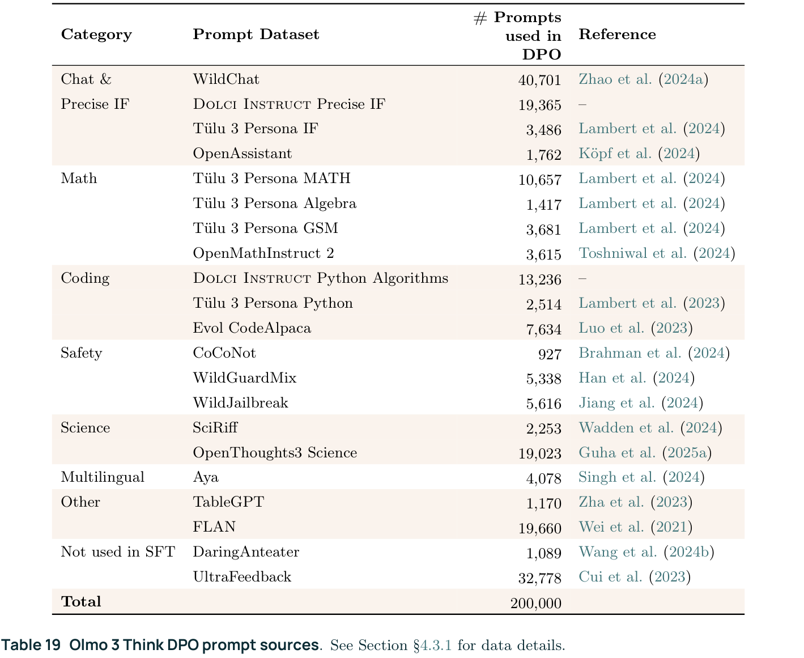
为构建 Dolci Think DPO，我们收集覆盖广泛数据集和技能的大型提示池（见表 19），并合成优选和拒选回答，使其体现能力差异。遵循 Delta Learning 的启发式规则（Geng et al., 2025），对于每个提示 \(x\)，我们直接从一个模型（Qwen 3 32B，思考模式）decoding 优选补全 \(y_{c}\)，从总体更弱的模型（Qwen 3 0.6B，思考模式）decoding 拒选补全 \(y_{r}\)，构建一致的对比。32
步骤 1：获取提示和对比补全。Olmo 3 Think 侧重推理能力；因此，我们将推理能力不同的模型生成的补全配对，构建体现推理质量差异的样本对（Geng et al., 2025；Bakouch et al., 2025；Kim et al., 2023）。提示池来自 Dolci Instruct SFT 数据集，并补充 OLMo 2 7B 偏好数据集中的 DaringAnteater（Wang et al., 2024b）和 UltraFeedback（Cui et al., 2023）子集。
步骤 2：过滤。我们对所有优选回答应用 SFT 阶段（§4.2.1 节）所述主题过滤及模型身份启发式过滤。我们不对拒选回答进行过滤，其直觉是（下页续）
32 OLMo 2 和 Tülu 3 采用的 UltraFeedback 风格 LLM 评判偏好流程，假设可以使用多样的模型池，构建具有有效对比的偏好对；但可用于构建这类样本对的开放思考过程模型很少，因此 OLMo 2 流程不太适合这一场景。Dolci Instruct DPO 数据集确实受益于模型池的多样性；我们能够在 Dolci Instruct DPO 中，以 LLM 评判数据进一步补充 Delta Learning 启发式数据，获得相互补充的收益（§5.3.1 节）。
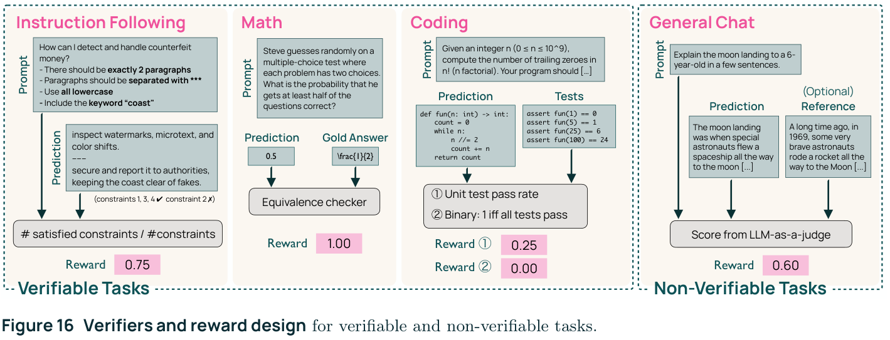
（接上页）错误的拒选回答可能产生有效对比。我们还针对评测套件对所有提示进行去污染。
步骤 3：混合。长推理轨迹实验比非思考补全实验昂贵得多。为得到 Dolci Think DPO 最终提示混合，我们利用对带有非思考补全的提示开展的混合实验（详情见 §5 节）。具体而言，我们从 Olmo 3 Instruct 实验中选出表现最佳的三种提示分布，再使用 Qwen 模型的思考版本为这些提示生成优选和拒选回答，以产生推理质量差异。我们选择实验中实际表现最好的混合作为最终 DPO 数据池。33
遵循既有工作（Lambert et al., 2024），我们将所有模型训练一个轮次，扫描学习率和数据集大小，根据评测套件确定最佳候选 checkpoint。数据集大小是一项重要超参数，因为我们观察到提前停止对于高性能偏好调优至关重要；相关动机结果见指令模型的数据混合实验（§5.3.2 节）。除了评测套件，我们还通过与 SFT 训练相同的“主观体验测试”检查每个 checkpoint，定性评估模型行为。完整训练设置见附录 A.6.2。
后训练第三阶段是在多种领域上进行强化学习，混合使用可验证奖励与 LM 评判奖励。我们介绍 OlmoRL，它包含我们的算法及与其紧密交织的工程基础设施，以应对长推理轨迹强化学习的挑战，并将 RLVR 扩展至更丰富的可验证任务。我们还发布 Dolci-Think-RL：一个包含约 100K 个提示的大规模多样化数据集，覆盖数学、编程、指令遵循及一般聊天四个领域，在保持通用实用性的同时，支持对不同推理任务开展稳健强化学习。下面依次介绍 RL 算法细节（§4.4.1）、Dolci Think RL 数据集（§4.4.2），以及 Open Instruct 中的 OlmoRL 基础设施（§4.4.3）。
我们的强化学习阶段由 OlmoRL 驱动，该方法基于群 GRPO（Shao et al., 2024），融合多项近期算法进展。具体而言，我们采纳 DAPO（Yu et al., 2025）和 Dr GRPO（Liu et al., 2025b）等（下页续）
33 Dolci Instruct DPO 数据集还包含通过仔细实验分析获得的额外对比样本对。更多细节见 §5.3.1 节。
（接上页）工作中的改进（Yao et al., 2025；Piché et al., 2025）。RLVR 的核心目标，是最大化给定提示 \(x\) 时模型生成回答 \(y\) 的期望奖励；验证器检查回答 \(y\) 是否与 \(x\) 对应的真实答案一致。
相较于原始 GRPO，我们作出以下改进：34
OlmoRL 形式化表达。最终目标函数包括 token 级损失、截断重要性采样、较高的裁剪上界，以及计算优势时不使用标准差：
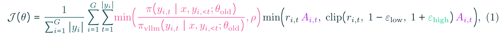
其中，\(r_{i,t} = \pi (y_{i,t} | x, y_{i,<t}; \theta ) / \pi (y_{i,t} | x, y_{i,<t}; \theta _{\mathrm{old}})\)，\(\varepsilon _{\mathrm{low}}\) 和 \(\varepsilon _{\mathrm{high}}\) 为裁剪超参数。这里，\(y_{i} \sim \pi _{\mathrm{vllm}}(\cdot | x; \theta _{\mathrm{old}})\)，\(\pi _{\mathrm{vllm}}(\cdot | x; \theta _{\mathrm{old}})\) 是 vLLM 返回的 token 概率，\(\rho\) 为截断重要性采样的上限（Yao et al., 2025）；回答 \(y_{i}\) 中第 \(t\) 个 token 的优势 \(A_{i,t}\)，根据每个组内输出的相对奖励，在组 \(G\) 内计算：
\(r(x, y_{i})\) 是对应验证器返回的奖励分数。不同运行的超参数见附录表 49。
验证器。我们将 OLMo 2 的可验证奖励从数学领域扩展至一般领域。每个领域使用不同的定制验证器（见图 16）：
34 我们试验了其他改动（例如超长过滤），但没有发现稳定的改善。
35 代码执行。在代码环境中进行 RL 时，需要实际执行生成的代码并对照测试用例，以计算奖励。我们使用 AWS Lambda。采用分布式云函数方法可以确保（下页续）
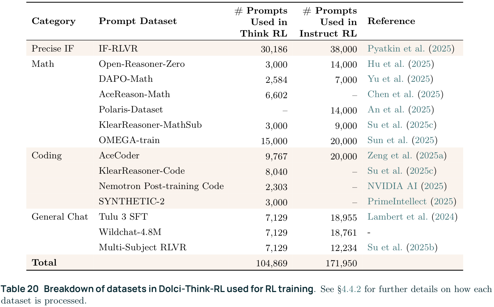
我们整理一个约含 100K 个样本的大规模多样化数据集，覆盖数学、编程、指令遵循和一般聊天四个领域，以在保持通用实用性的同时，支持对不同推理任务进行稳健 RL。每个领域都对应可验证或不可验证奖励信号（连续或二元），确保每个样本均可自动检查正确性或总体质量（见图 16）。对于所有领域，我们特别关注数据来源及许可。表 20 列出各数据子集在获取、过滤和混合之后的大小。
步骤 1：获取提示。以下描述数据构建过程。
（接上页脚注 35）验证不会阻塞训练器进程，同时支持无缝扩展。许多测试用例套件，例如 SYNTHETIC-2（PrimeIntellect, 2025）中的套件，包含用于惩罚时间复杂度较差程序的测试用例，运行这些测试时单个程序可能占用数百 MB 以上内存，超出本地机器资源。
36 除非另有说明，我们使用 vLLM（Kwon et al., 2023）部署关闭思考模式的 Qwen3 32B（Yang et al., 2025a）作为 LM 评判器，允许最大输入提示长度 32768 个 token，但回答长度仅为 2048 个 token。评判提示见附录图 40。我们还试验了谜题问题验证器（相对于参考答案检查谜题解答是否正确）以及长度控制验证器（Aggarwal and Welleck, 2025），但没有发现其对下游表现有益。
（接上页）KlearReasoner-MathSub（Su et al., 2025c）及 OMEGA（Sun et al., 2025），涵盖代数、组合数学、数论和几何等广泛数学领域。
步骤 2：离线难度过滤。如前所述，为提高推理模型 RL 的样本效率，我们从所训练模型的初始 checkpoint 为每个提示生成八次 rollout（例如，从经过 DPO 训练的模型开始时，就从 DPO checkpoint 生成）。随后移除模型容易解决的所有样本（即通过率大于 62.5% 的样本）。我们以 1.0 的温度和 1.0 的 top-p 采样，与 RL 训练期间一致。对于 7B Olmo 3 Think，我们使用离线过滤排除对模型训练过于简单的 RL 问题。对于 32B，我们依赖主动采样，仅使用 GRPO 组 gradient 非零的样本填充 RL batch，并由于计算和时间限制，复用经 7B DPO 过滤的数据作为模型的起点。
步骤 3：数据混合。开发数据混合及总体方案时，我们发现 RL 实验耗时且计算昂贵，无法对数据集与算法选择的完整空间进行消融。因此，我们建立流程：（a）在中间 SFT checkpoint 上进行各数据集的独立运行，观察前 500–1000 个 RL 步骤中的下游评测趋势；（b）测试新算法改动时侧重数学领域训练；（c）定期运行总体混合实验，确保混合稳定。设置最终运行时，我们选取最有潜力的数据集，进行离线过滤，并仔细混合，确保更高质量数据集获得更高权重，各领域的数据量大致相等（稍微侧重数学和指令遵循，因为在单数据集运行中，这些领域的训练似乎最有效）。此外，我们根据离线过滤（下页续）
37 huggingface.co/datasets/allenai/WildChat-4.8M
38 在包含 57,819 个样本的中间一般数据集中，出现最多的人物是：1. Natsuki：1284 次；2. Monika：1243 次；3. Sayori：1076 次；4. Yuri：957 次；5. Sakura：453 次；6. MC：424 次。过滤前，其他人物均不超过 60 次。
（接上页）结果，下采样 OMEGA 中模型尤其难以应对的某些子任务。39 我们使用该流程开发 7B 模型的 RL 混合，然后由于计算和时间限制，将同一数据混合用于 32B 模型。
在 Olmo 3 Think 7B 训练运行中，我们使用没有 pipelineRL 或截断重要性采样的初始基础设施版本，耗时约 15 天。随后使用新版基础设施复现同一运行，仅用 6 天训练就取得相近表现。
我们显著改进强化学习基础设施，以处理更长序列并提高总体吞吐量。在 LLM 的 RL 中，对生成长序列的模型进行微调时，关键技术挑战是管理推理——也称 rollout。对于最终模型，我们生成最大长度 32K 个 token、平均超过 10K 个 token（对于推理模型）的 rollout。推理占据计算成本的主要部分：对于 32B OlmoRL 推理模型，我们使用 8 个 H100 节点进行训练、20 个节点进行推理。由于自回归推理昂贵，学习器 75% 的时间在等待数据，因此就 GPU 利用而言，推理使用的资源约为训练的 5 倍。实际上，我们使用能够将学习器装入内存的最小分片配置，完全不优先考虑速度，与监督学习场景不同。对于 7B 推理模型，学习器内存压力较小，情况更加明显：推理使用 7 个节点，学习器仅使用 2 个。由于学习器利用率同样很低，推理计算量约为训练的 14 倍。我们怀疑 32B 学习器的分片配置并非最优，并预期未来工作能够改善。
完全异步训练。如图 17a 所示，我们采用 off-policy 异步 RL 设置（Noukhovitch et al., 2024），其中集中式学习器通过 DeepSpeed（Rasley et al., 2020）分布于多个节点，大量执行器各自运行独立的 vLLM（Kwon et al., 2023）实例。学习器产生提示，入队后分发给执行器；执行器执行提示，与环境交互，通过结果队列返回结果，学习器据此更新模型参数。40 由于补全长度存在差异，单个 RLVR batch 中不同补全的完成时间可能相差很大。缓解该问题的指导原则是高效使用资源（避免空闲），并使流程异步化。41
连续批处理。我们使用连续批处理，每当一个生成完成，就不断将新生成任务入队，从而消除长生成带来的计算浪费（见图 17）。这与静态批处理相对：静态批处理中，一个提示 batch 分发给 \(N\) 个执行器，每个执行器生成整个 batch，42 将生成的回答返回学习器，然后接收新的数据 batch。静态批处理效率低下，因为某个生成完成后，该 batch“槽位”会一直空着，直到取得新 batch。浪费计算的准确比例可以计算为（最大序列长度减去平均序列长度）除以最大序列长度。对于 Olmo 3，在 32K 生成长度下，我们观察到平均生成长度为 14628，最大为 32K，这意味着静态批处理会浪费高达 54% 的计算。示例说明见图 17。
主动采样。为补偿被过滤的样本，完全异步框架支持不断从执行器取得补全，并重新采样提示进入队列。我们主动采样并过滤（下页续）
39 具体而言，过滤后我们将以下任务下采样 50%：trans_integrations、logic_gridworld_rookmove、logic_puzzles_grid_chip、comp_grid_chips、comp_n_gon、arithmetic_matrix_svd、comp_parametric_intersection、comp_vertex_color。
40 7B 训练运行中，每个执行器使用单个 GPU，通过 DP 扩展生成。熟悉 Horgan et al.（2018）或 Silver et al.（2017）的读者会熟悉这一 RL 设置。对于 32B，每个执行器使用一个节点，再类似地通过 DP 进一步扩展。
41 我们的一次主要 RL 运行大体反映了全部运行的经历：每个训练步骤平均 1000 秒，其中 125 秒用于训练。每次批量补全生成耗时 1000 秒。由于生成和训练重叠（Noukhovitch et al., 2024），瓶颈完全是生成。因此，大量工程资源用于改进生成处理方式；训练则可继续使用 OLMo 2 的代码，因为只有将生成加速超过 8 倍，训练才会成为瓶颈。
42 调用 vLLM 中的 llm.generate。
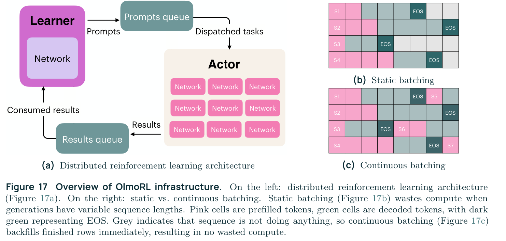
直到达到我们希望的、gradient 非零的补全 batch 大小。此前，Yu et al. (2025) 的动态采样会进行过采样，生成的提示数量是每个训练 batch 实际使用数量的三倍。这是为了以较高概率确保 batch 中有足够多标准差非零的补全。相比之下，我们的主动采样更高效地利用了基础设施。如第 6 节所示，我们发现这显著稳定了训练，并防止 batch 大小在训练过程中缩小（这是原始 GRPO 中的一个常见问题）。
生成过程中的权重更新。LLM 的 RL 训练通常希望尽量减小 actor 策略与 learner 策略之间的差异，即尽量降低 off-policy 程度（Van Hasselt et al., 2018）。可以通过每个训练步骤后同步权重来实现这一点，具体如下：每个 actor 完成其所有正在进行的生成，丢弃 KV cache，并更新自己的权重副本。然而，这会使 GPU 闲置，并损害训练效率。因此，我们遵循 Piché et al. (2025)，不暂停引擎，而是立即更新权重；我们依赖生成框架的线程安全性，继续生成，同时不使 KV cache 失效。这使吞吐量显著提高：在资源相同的情况下，速度最高提升至 4 倍，而且不损害准确率。
改进线程与工程实现。这些变化主要围绕每个训练步骤后的权重同步处理，以提高 actor 的效率。我们的新设置将 actor 解耦，使每个 actor 都能独立启动和停止，无须等待其他所有 actor 也完成同步。类似地，我们进行了大量并非机器学习专属、而是围绕高效利用 CPU 的优化。例如，在为 actor 加入一个持续补充推理队列的预取线程之前，我们最初的连续批处理实现甚至比静态批处理更慢；加入该线程后，我们才观察到吞吐量提高。
最终的 RL 运行将各个领域经过仔细过滤的数据以大致相等的比例混合，并在 DPO checkpoint 基础上进行训练。
当使用相同数据的 SFT 无法提高性能时，DPO 仍能带来收益。直接使用 Dolci Think DPO 的优选回答继续进行 SFT，会明显损害初始 SFT 模型（表 21），使所有评估任务的表现下降。我们推测，这是因为这些优选回答（由 Qwen3 32B Thinking 生成）相较于模型已经在 Dolci Think SFT 中见过的数据更弱，因此它们不再是
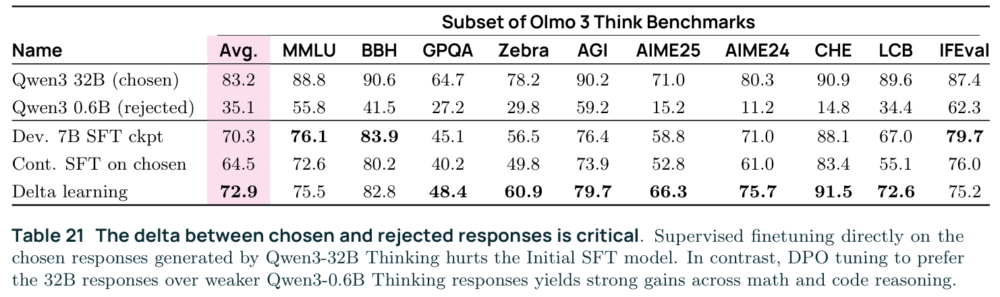
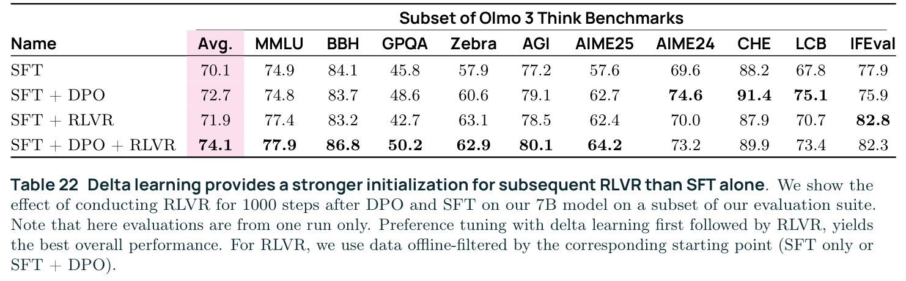
有用的模仿目标。然而，将这些优选回答与较弱模型生成的拒选回答配对，可以构造有用的对比，使偏好调优推动模型取得超越初始 SFT 模型的显著提升（表 21）。令人鼓舞的是，这些提升并非仅将 pass@k 转化为 pass@1，而是扩展了模型的推理能力边界（例如，在 AIME 评估中提高 pass@k；图 20）。这些发现表明，即使模仿学习已经饱和，采用偏好调优的对比学习仍然是提升能力的一个有用阶段。
DPO 和 SFT 都能从 RL 中受益，但 DPO 仍是更好的起点。表 22 表明，在 DPO 模型上使用最终的 RL 混合数据训练，性能始终优于在 SFT 模型上训练。我们发现三种主要差异，图 19 对其进行了突出展示：对于 RL 无法改善的评估，DPO 模型往往表现更好，并在 RL 训练期间保持优势（例如 AlpacaEval）。对于 RL 明确针对的评估（例如 Omega），DPO 和 SFT 模型最终达到相近的性能。对于 RL 针对、但在 DPO 基础上难以进一步改善的评估（例如 AIME 2025），SFT 模型会提高到接近 DPO 的性能。在任何情况下，SFT 模型在 RL 后都没有超越 DPO 模型，因此我们选择专注于在 DPO 模型基础上应用 RL。有趣的是，无论使用 SFT 模型还是 DPO 模型离线过滤的数据进行训练，SFT 模型的表现都相近；这意味着 DPO 模型额外过滤掉的样本（即已经解决的样本）没有为改进 SFT 模型提供额外信号。进一步研究发现，虽然 DPO 模型的熵更低，但它在 AIME 评估中的 pass@K 性能实际上更高，如图 20 所示。这表明，相较于 SFT 模型，DPO 模型仍是 RL 的强大起点，因为先前工作（Yue et al., 2025; Shao et al., 2024）表明，在特定条件下，RLVR 有助于将 pass@K 的改善转化为 pass@1 的提升。
RL 期间各个领域的奖励持续提高。图 18 绘制了各个验证器的奖励曲线以及平均输出长度。我们发现，所有领域的奖励都稳步提高，尽管提高速度不同（指令遵循数据提高得最稳定，而代码奖励提高得最慢）。我们在附录中绘制了更多 RL 曲线（图 41）。有趣的是，我们发现序列长度先略微下降，
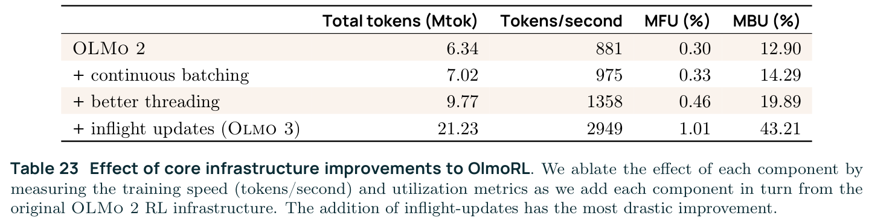
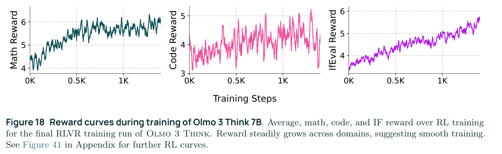
随后随着时间缓慢增加。这可能是因为推理 SFT 和 DPO 已经训练模型产生很长的思考轨迹，最长达到最大回答长度 32K token。
混合不同领域的 RL 数据可以防止过度优化。图 20（左）表明，在特定领域上训练可能导致过度优化，即该领域之外的评估表现下降，而使用混合数据训练则能在不同领域中获得稳定提升。例如，仅在 IFEval 上进行 OlmoRL 时，我们观察到一种权衡：较高的 IFEval 分数与较低的 AlpacaEval 分数相关。然而，在最终的混合训练中，我们可以保持较高的 AlpacaEval 分数，同时不损害 IFEval 性能，因为 LM 裁判奖励确保模型继续生成形式良好的聊天回答。
混合数据使训练奖励更低，但不会降低下游性能。虽然图 20 表明，最终混合数据运行达到的下游性能与单领域 RL 训练运行相当或更高，但如图 21 所示，相较于单领域数据训练，混合数据训练在每个领域的训练奖励都更低。这表明，混合数据实际上可能减少模型在训练期间过度优化的倾向，防止一定程度的 reward hacking，从而更好地泛化到下游评估。这也许能解释为什么使用更广泛的数据混合进行 RL 训练能够优于针对特定领域的数据混合（Cheng et al., 2025）。
连续批处理和生成过程中的权重更新对训练速度至关重要。以推理模型的 SFT 或 DPO 为起点，会把 RL 训练推向极限，因为模型一开始的平均生成长度就极长。表 23 表明，采用连续批处理和生成过程中的权重更新对训练速度至关重要，使我们能够以一半的 GPU 实现两倍的训练速度，让实验和长时间 RL 运行更加可行。43为仔细进行基准测试，我们对 OLMo 2 到 Olmo 3 之间 RL 基础设施的改动进行了消融，见表 23。对于每项消融，我们使用两个配备 8 张 A100 的节点运行了 2 小时基准实验，一个节点用于训练，另一个用于推理。由于推理是瓶颈，我们报告的 MFU 和 MBU 仅基于
43 最初的 checkpoint 使用 9 个节点连续训练 14 天才能完成 1 个 epoch；采用连续批处理和生成过程中的权重更新后，我们能使用 5 个节点在 7 天内完成 1 个 epoch。
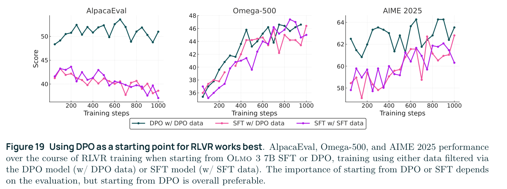
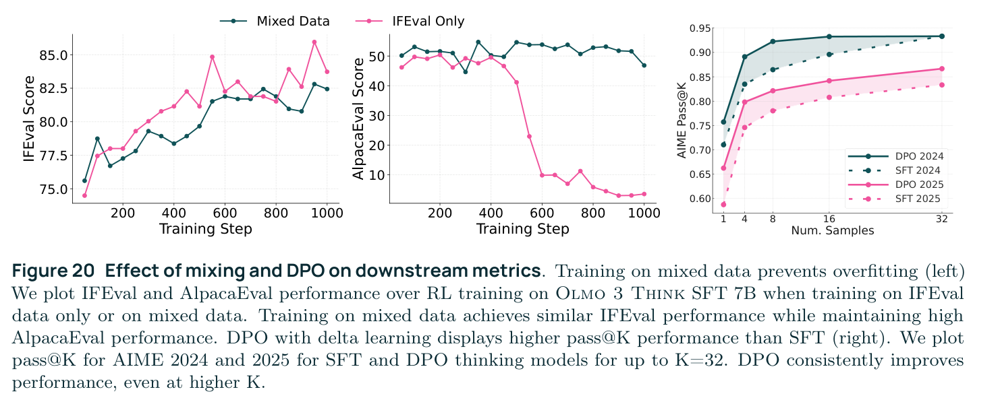
用于推理的单个节点。典型的完整规模实验会使用更多推理节点，推理节点与训练节点的比例通常为 8:1 或更高。基准实验在每个训练步骤生成一批 128 个补全，使用 64 个提示，每个提示采样两次，最大输出长度为 32000，最大输入长度为 2048，得到的上下文长度为 2048。44
OlmoRL 显著提高精确指令遵循能力。精确指令遵循性能在后训练的各阶段不断提高；如表 24 所示，最后的 RL 训练阶段对 Olmo 3 的精确指令遵循能力带来了最大的提升，开发评估（IFEval）和未见过的评估（IFBench）都是如此。
44 脚本可在 github.com/allenai/open-instruct 中找到，路径为 scripts/benchmarking/olmo3_infra.sh。
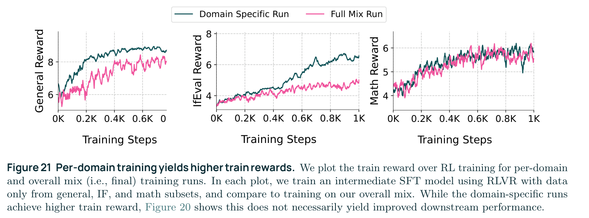
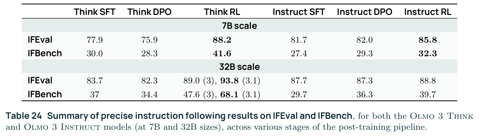
近期研究表明，现实中的语言模型使用主要围绕寻求建议和信息回忆等通用任务（Chatterji et al., 2025），这些任务可能不需要大量推理。日常聊天场景往往不需要 Olmo 3 Think 的推理时扩展。因此，我们开发了 Olmo 3 Instruct，这是一个针对这些真实使用场景设计的非推理模型。Olmo 3 Instruct 能够快速且有帮助地回应常见用户查询。
这种不同的模型类型需要不同的数据来支持。我们通过引入多轮 DPO 数据，并在Delta Learning偏好调优流程中促进简洁回答，重点提高模型的交互性。此外，Olmo 3 Instruct 经过函数调用训练，为此我们发布了新的 SFT 数据集。综合这些方法，我们的配方得到的 Olmo 3 Instruct 模型能够有效使用工具，并高效回应用户查询。
表 26 和表 25 分别展示 Olmo 3 Instruct 7B 和 32B 在我们评估套件上的结果。45除了 Olmo 3 Think 使用的评估（第 4.1 节），我们还增加了函数调用基准。46Olmo 3 Instruct 7B 优于 Qwen 2.5-7B Instruct、OLMo 2 Instruct 7B，
45 我们没有报告 Essential AI 的 Rnj-1 Instruct（Vaswani, 2025），因为我们观察到的数值与其报告数值存在差异。从定性角度看，Rnj-1 的行为像专门面向代码的模型（即使是 IFEval 和 Safety 聊天任务也会生成代码）。我们的评估框架面向通用指令模型，聊天任务不执行代码。即使使用他们建议的、用于关闭代码生成行为的通用系统提示，这也使 Rnj-1 的分数低于其报告值（例如 AIME 25 为 16.1 而非 43.3，MBPP+ 为 64.8 而非 75.7，HumanEval+ 为 79.3 而非 83.5）。因此，与其他专用模型（例如 Qwen Coder）一样，我们将其排除在比较之外。
46 关于缺失的函数调用评估：OLMo 2 Instruct、Gemma 2 和 Gemma 3 不支持此功能。BFCL 不支持 Apertus 和 Granite，而且我们在运行其他任务时遇到了一些困难。我们会在
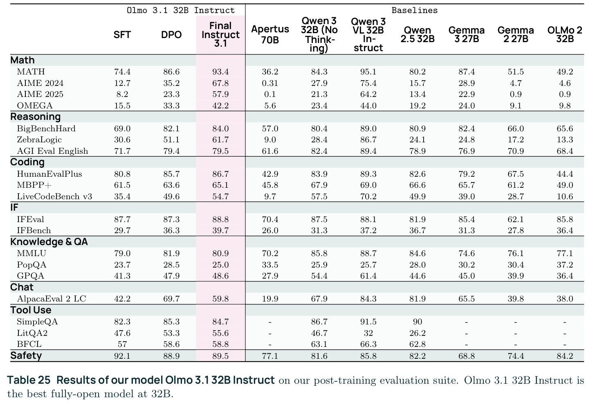
以及 Apertus 8B Instruct。类似地，Olmo 3.1 Instruct 32B 优于大多数规模相近的开放模型，包括 Qwen 2.5 32B、Qwen 3 32B（No Thinking）、Gemma 3 27B 和 Apertus 70B。值得注意的是，Olmo 3.1 Instruct 32B 在 IFBench 上达到 39.7，超过 32B 规模的 Qwen 3 和 Qwen 3 VL。此外，Olmo 3.1 Instruct 32B 在 AIME 2025 上达到 57.9，比 Qwen 3 32B（No Thinking）高 36.6 分，并缩小了与 Qwen 3 VL 32B-Instruct 的差距。
我们在 OLMo 2 Instruct 混合数据基础上构建 Dolci Instruct SFT，通过显著改进提升通用聊天、推理和函数调用能力。
为 Olmo 3 Instruct 整理工具使用训练数据的目标，是为模型的基础函数调用能力打下坚实基础，并让模型接触展示如何有效利用真实环境（即 MCP 服务器）完成任务的轨迹。因此，我们收集了下面所述的两类由 LLM 合成的轨迹。
具有真实交互的轨迹。我们收集展示 agent 如何利用 MCP 服务器回答查询的轨迹。所有轨迹均包含单个用户轮次和多次 agent 与环境交互。我们关注以下领域：
（接第 53 页脚注 46）开放的 Git 请求得到解决后，用分数更新论文。
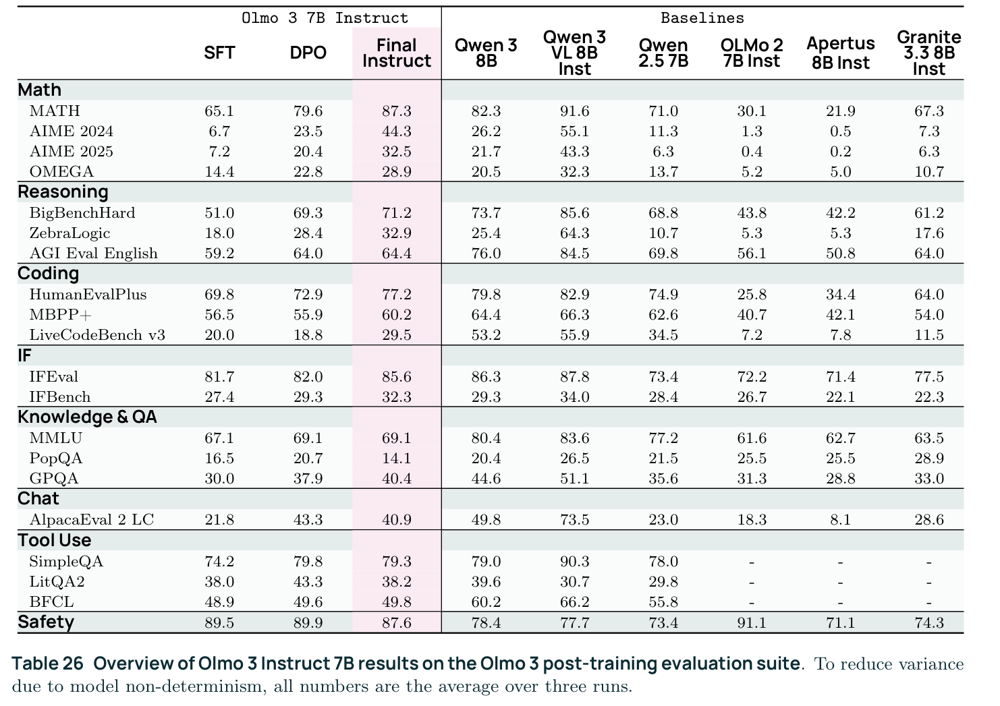
这些查询对应的轨迹由基于 GPT-4.1-mini 的 agent 获得；该 agent 配备 ASTA Scientific Corpus（ASC）MCP 服务器47，能够结构化访问 Semantic Scholar48 上的元数据和论文内容。这些数据集的更多细节见附录 A.7.2。
具有模拟交互的轨迹。尽管预期在具有可执行环境的轨迹上训练能够教会模型有效处理真实环境输出并应对意外错误，但很难大规模整理这类轨迹，因此可能限制模型在推理时对未见过工具的泛化能力。为弥补这一缺口，我们还创建了一个包含 LLM 模拟环境的合成轨迹数据集，这类数据更容易扩展规模。我们将其称为 SimFC。我们从现有数据集（例如 xLAM（Liu et al., 2024c）、ToolACE（Liu et al., 2024b））以及公开 MCP 服务器中收集大量工具集或 API，并提示 LLM（GPT-4o、GPT-4.1 和 GPT-5）生成完整轨迹，包括模拟的用户查询、环境回答和助手消息。我们设计
47 allenai.org/asta/resources/mcp
48 www.semanticscholar.org
49 serper.dev
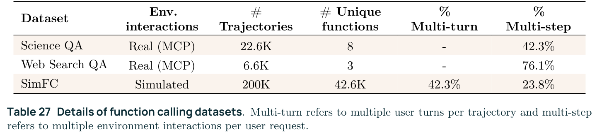
提示，以确保数据集包含各种交互模式，包括多轮、多步，以及因信息或工具不足而拒绝请求。该数据集的更多细节和生成时使用的示例提示，见附录 A.7.2、图 42 和图 43。
平衡函数多样性与交互复杂度。如表 27 的统计所示，这两类轨迹存在关键差异。SimFC 包含大量轨迹，函数集合也很丰富。我们发现，相较于每个用户请求包含多次助手与环境交互的轨迹（多步轨迹），包含多个用户轮次的轨迹（多轮轨迹）相对更容易合成。然而，前者通常对应更复杂的任务。另一方面，真实交互数据集虽然规模较小，但从多步交互角度看，它们自然具有更高的复杂度。
统一的数据格式。对于所有工具使用数据，我们采用一致的工具定义和工具调用格式。我们发现，统一格式对于稳定且高质量的工具使用行为至关重要。具体而言，我们使用 OpenAPI 规范50 定义所有工具，并将所有函数调用表示为 Python 风格代码块。我们在系统提示中提供工具规范，在助手角色内部使用 XML 标签封装工具调用，并在特殊的 environment 角色中向模型呈现环境输出。我们还扩展了 tokenizer 词表，加入与这些标签对应的专用特殊 token。与 Olmo 3 Think 不同，初步结果表明，对于工具使用训练，这种方法比将 <functions>、</functions>、<function_calls> 和 <function_calls> 编码为普通文本更有效。
评估函数调用。我们使用不同基准，从内在函数调用准确率和外在任务完成准确率两个角度评估 Olmo 3 Instruct 的函数调用能力。我们使用 Berkeley Function Calling Leaderboard（BFCLv3）（Patil et al., 2025）评估内在函数调用准确率。该基准关注模型在需要与模拟用户和环境进行一次或多次交互的场景中，选择相关函数及其正确参数值来完成给定任务的能力。我们还比较 Olmo 3 Instruct 和类似模型在作为 agent 部署、可访问 Model Context Protocol（MCP）服务器提供的工具时的任务完成准确率。具体而言，我们使用 Asta Scientific Corpus（ASC）工具（Bragg et al., 2025），该工具提供八个访问科学文献的函数；同时使用 Serper API，它提供 Google 搜索工具和网页浏览功能。为评估模型对 ASC 工具的使用，我们遵循 Bragg et al. (2025)，使用 LitQA2（Skarlinski et al., 2024）中一个包含 75 个问题的子集，这些问题对应的论文可以在 ASC 索引中找到。我们使用 SimpleQA51（Wei et al., 2024）的一个子集评估模型对搜索和浏览工具的使用。
我们使用官方 Gorilla 仓库52 进行 BFCLv3 评估。对于 LitQA2 和 SimpleQA，我们使用 OpenAI 的 Agent SDK 实现一个基础函数调用 agent。该 agent 使用相关 MCP 服务器53 提供的工具，通过反复调用函数并处理其执行输出，与环境交互以解决给定任务。对于 LitQA2 和 SimpleQA，我们还衡量模型在 No-Tools 场景下部署时的性能；在该场景中，不向 agent 提供任何工具，模型需要完全依靠参数知识解决任务。我们采用零样本评估
50 swagger.io/specification/
51 huggingface.co/datasets/akariasai/sampled_simpleqa
52 github.com/ShishirPatil/gorilla
53 我们使用 Shao et al. (2025a) 为 DR Tulu 引入的相同设置。
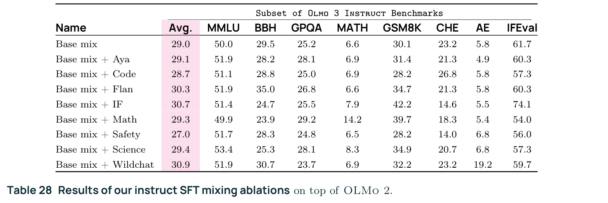
评估所有这些基准。我们以温度 0 从模型中采样，对于 LitQA2 和 SimpleQA，允许 agent 最多使用 10 个轮次完成每项任务。我们将每项评估运行三次，并报告平均准确率。我们公开了用于运行基于 MCP 的工具使用评估的代码。54
步骤 1：收集提示和补全。我们的提示集合包括所有新函数调用数据（第 5.2.1 节）、新的指令遵循提示（见第 4.2.1 节）和科学提示，以及更多来自 WildChat（Zhao et al., 2024a）的聊天提示。对于最初包含思考轨迹的样本（例如第 4.2.1 节所述的 OpenThoughts3 科学子集），我们移除思考轨迹和特殊 token。我们还将 GPT-3.5 和 GPT-4 等旧模型的补全替换为 GPT-4.1 的补全。表 30 汇总了我们的指令 SFT 混合数据。
步骤 2：过滤与混合。我们遵循第 4.2.1 节详述的相同过滤和混合流程。对于 Olmo 3 Instruct，我们的基础混合数据是从基于 OLMo 2 SFT 混合数据更新的中间混合数据中选出的 100K 个样本。表 28 展示了在 OLMo 2 上进行数据混合实验的结果。
从 Olmo 3 Think SFT 开始。如图 2 所示，我们从 Olmo 3 Think SFT 模型开始训练 Olmo 3 Instruct 的 SFT 阶段，为其提供“热启动”。我们发现这能显著改善 Instruct 模型的性能，表 29 的结果展示了这一点。
我们在Delta Learning启发式偏好这一强大基础（第 4.3 节）上，加入进一步整理的偏好信号，创建 Dolci Instruct DPO，以改善模型在通用使用场景中的行为。我们使用来自改进的 GPT 裁判流程的对比样本对来丰富启发式数据，实现通用对齐。此外，用户与 LM 的交互通常要求多轮对话能力，因此我们在偏好数据中引入合成多轮对话。我们还观察到，偏好数据流程往往鼓励过于冗长的回答；为此我们采取抵消措施，通过减轻偏好数据中的长度偏差，促使模型给出简洁回答。
54 github.com/allenai/mcp-tool-eval
Dolci Instruct DPO 由多种偏好信号组合构建，以促进模型能力和通用可用性：
Delta Learning启发式样本对。与 Dolci Think DPO 类似，我们遵循 Geng et al. (2025)，用大模型（Qwen3 32B）生成优选回答，用小模型（Qwen3 0.6B）生成拒选回答，以构建启发式对比样本对。请注意，我们关闭了思考模式，因为不需要内部思考轨迹。
具有差分感知的 GPT 裁判样本对。我们还生成由 GPT 裁判评定的偏好样本对，以增加另一种偏好信号来源。最初，我们尝试提高 LLM 裁判的质量（GPT-4o → GPT-4.1），并更新数据生成模型
池，以现代化 OLMo 2 和 Tülu 3 的 UltraFeedback 流程，但相较于 OLMo 2 偏好数据集基线，这些尝试没有带来提升，甚至损害了模型性能。我们推测，这是因为大多数数据生成模型都是高质量、能力很强的模型，因此产生的优选与拒选样本对之间平均而言几乎不存在有意义的对比。为缓解这一问题，我们明确引入差分感知干预，旨在降低拒选回答的质量。我们 1）确保每个提示接受评判的回答集合中总是包含较弱模型的回答；2）选择最差回答作为拒选补全，以最大化产生的差分。我们发现，这些“差分最大化”干预对于偏好样本对数据的质量至关重要；详情见第 5.5 节的发现。
多轮偏好。为确保 Olmo 3 在真实多轮对话中的可用性，我们进一步加入一个多轮偏好数据集，其提示由 Tülu 3-DPO 数据集合成扩展而来。偏好样本对仅在对话的最后一个轮次不同，以避免同一对话不同轮次之间质量排序的歧义。我们用两种方法生成合成对话：1）自我对话，使用 LLM 生成的后续请求将原始提示扩展为多轮对话；2）合成上下文，通过生成与初始提示相关的独立问题或改写，将其与相应补全一起作为此前的用户轮次。这两种生成方法相结合，确保了生成对话的多样性。最后一轮采用Delta Learning启发式方法（Geng et al., 2025）生成；优选与拒选补全分别由 GPT-4o 和 GPT-3.5，或者 Qwen 3 32B 和 Qwen 3 0.6B（均关闭思考）生成。
控制长度偏差。偏好数据经常存在长度偏差：优选回答明显长于拒选回答。这是因为在收集合成回答对时，LLM 裁判和偏好启发式方法历史上都将更多信息视为更有帮助。也就是说，像我们流程中的 GPT 裁判这样的 LLM 裁判往往偏好更长的回答。类似地，我们通过实证观察到，Delta Learning启发式方法生成的偏好样本对也存在长度偏差：更大的模型会生成更长的回答（图 23）。因此，在偏好调优期间，模型通常除了学习预期的有用质量信号，还会学习这种长度偏差，之后每个提示的生成长度会显著增加。虽然实证上这种长度增加对推理任务有帮助，但对常见的真实使用场景而言，过度冗长可能并不理想（示例见图 22）。我们尝试取得平衡，过滤偏好数据中的聊天和多轮子集，将优选与拒选回答之间的长度差限制为 100 token。
GPT 裁判样本对和Delta Learning启发式样本对的提示池（见表 30）来自 Dolci Instruct SFT 数据集，并补充了 OLMo 2 7B 偏好数据集中的 DaringAnteater 和 UltraFeedback 子集。由于 DPO 性能不会随数据增加而单调提高（见图 23），我们在固定数据预算内以比例的形式优化提示分布，并在训练时将数据集大小视为超参数。
为确定最终偏好调优的提示分布，我们首先近似均匀随机采样55 100K 个样本，将其作为实证表现很强的基础提示混合。然后，我们对不同提示领域子集进行消融，以确定每个领域子集的偏好样本对产生的影响。此外，我们还将基础混合中的 50K 个样本与某个给定领域中的 50K 个样本配对进行实验，以理解对各个提示领域进行上采样的效果。
值得注意的是，提示领域的分布并不总是与回答对体现的对比程度一致，因此也不总是与对应下游评估领域的改善一致。例如，对代码提示进行上采样，反而产生了代码基准性能下降这一违反直觉的结果（见附录表 51）。为确定最终混合，我们依据从消融实验中获得的专家直觉创建了九个候选混合，并将这些人工设计的混合与均匀采样基线比较。最终混合通过实证确定；我们发现人工设计的混合优于随机采样。
55 我们很早就决定将 Wildchat 提示的数量截断，使其最多占提示混合的 35%。如果你读了一个月 Wildchat 提示，你也会这么做。
我们遵循与 Olmo 3 Think 相同的训练设置，并搜索相同的超参数，即学习率和数据集大小。我们还通过创建采用不同 token 长度过滤阈值的数据集，搜索不同的长度控制干预。对于每种长度预算，我们选择性能最好的 checkpoint，然后依据定性的主观体验测试和性能与长度分析，选择最终的 Olmo 3 Instruct-DPO checkpoint。
在 RL 训练阶段，我们修改 Dolci Think RL（第 4.4.2 节）的提示池：1）在数学和代码领域使用挑战性更低的数据集；2）跳过离线难度过滤，因为我们的指令模型更侧重通用指令遵循，而非复杂推理。
遵循 Olmo 3 Think 的配方，我们使用通用聊天、数学和代码的混合数据训练 Olmo 3 Instruct。56同样，我们使用 OlmoRL 进行训练，7B 的最大回答长度为 8K token，32B 为 16K。57由于 Olmo 3 Instruct 的目标是避免生成过长输出并保持通用可用性，我们在两个 DPO 候选模型之上应用 RL：一个取得了最佳平均性能，另一个性能略低，但定性的“主观体验测试”更好。然后，我们依据最终平均性能、长度分析和主观体验测试选择最终 RL checkpoint。具体而言，我们首先按平均分数对 checkpoint 排序；若分数相同，则更重视那些
56 初步实验表明，其他 RL 设置——例如，首先使用纯数学数据热身，然后切换到不含数学的混合数据集——性能不佳。
57 我们在 7B 和 32B 上都实验了 8K 和 16K 长度训练；尽管不同长度对评估分数影响很小，但在内部演示中对 7B-16K 和 32B-8K 配置进行定性测试时，我们注意到了不理想的行为。
不会随测试时计算量扩展的数据集（例如，MATH 和 AIME 的性能会随回答长度提高），以避免选择偏向回答过长的模型。最后，我们采用主观体验测试，识别可能不在评估套件范围内的性能回退或不理想行为。
下面总结 Olmo 3 Instruct 全部三个训练阶段的关键发现：
从 Olmo 3 Think SFT 开始有帮助。我们发现，在 Olmo 3 Think SFT 基础上训练 Olmo 3 Instruct 能够提高模型在基准上的性能，见表 29。重要的是，这一策略对模型平均回答长度影响很小：Olmo 3 Instruct SFT checkpoint 生成简洁回答，没有残留的思考轨迹。
偏好样本对中的高对比度推动 DPO 改善。我们观察到，补全之间的高对比度对于在 DPO 训练中取得提升至关重要（表 32）。使用 LLM 裁判流程时，必须仔细考虑如何最大化优选与拒选回答之间的差分。我们最初尝试通过改进用于生成回答的模型，现代化 OLMo 2 偏好数据流程，但未能带来超越 OLMo 2 数据基线的任何提升（表 32）。这可能是因为用于合成补全的模型普遍过强，优选与拒选回答之间不再存在有意义的对比。在先前关于高对比度样本对对性能至关重要的发现（Geng et al., 2025; D’Oosterlinck et al., 2025）基础上，我们引入干预，明确降低拒选回答质量，从而扩大偏好样本对中的质量差分。由此得到的差分感知 GPT 样本对显著优于 OLMo 2 偏好数据。
组合不同偏好信号能够提高整体性能。我们将Delta Learning启发式数据与 GPT 裁判偏好样本对相结合，以获得“两者的优势”。实证上，分别使用Delta Learning或 GPT 裁判样本对调优，会产生不同分布的收益；我们发现这些收益是互补的。组合两种偏好信号来源优于单独使用任一种（表 32）。
理想的偏好数据量取决于下游任务。对于不同的下游任务领域，偏好调优模型的性能在不同训练量下达到峰值。图 23 展示了示例任务在不同数量Delta Learning启发式样本对58 下的偏好调优性能。超过这些最优点继续优化，会损害下游性能，这与表明早停对偏好调优十分重要的理论结果一致（Azar et al., 2023; Geng et al., 2025）。实际操作中，这指导了我们的训练方法：搜索学习率和数据集大小以控制总优化量，并通过开发评估集选择表现最好的设置。
偏好调优产生的简洁、可用模型输出可以提高 RL 性能。在 DPO 期间应用长度控制，大幅降低了模型的平均生成长度，使我们能够牺牲一些性能以改善简洁程度和整体可用性。虽然长度缩短降低了对长度敏感的评估分数——尤其是 AIME 和 MATH 等数学基准——但我们的内部定性评估（“主观体验测试”）几乎一致偏好更短、更直接的模型。我们有意选择优先考虑可用性。
关键在于，尽管 DPO 阶段的基准性能更低，长度控制最终却产生了 RL 后性能更强的模型。在 7B 规模上，我们推测这源于 RL 训练的上下文窗口：在固定的上下文窗口（8K）内，更简洁的模型可能具有“每个 token 更高的智能”，从而在优化时更有效地利用可用预算。因此，起初看似可用性与性能之间的权衡，最终却改善了两者。此外，我们发现，从经过长度控制的 DPO 策略初始化时，RL 训练进展更可靠。相较于从分数更高但未经纠正的 DPO checkpoint 开始的 RL 运行，大多数基准的性能改善更稳定；后者往往更早出现不稳定或退化迹象。这进一步支持简洁的偏好调优模型作为 RL 起点的优势。
58 使用 GPT 裁判数据的初步实验表现出类似趋势。
工具的必要性。为了评估 Olmo 3 Instruct 在 LitQA2 和 SimpleQA 上的表现有多少归因于工具使用，我们衡量仅从参数记忆回答问题（“No tools” 设置）与使用工具回答问题时，模型在这些基准上的性能差值。表 31 将这些差值与三个 Qwen 模型的差值进行比较。所有模型在 SimpleQA 上都显著受益于工具使用。然而，与 Olmo 3 Instruct 7B 不同，Qwen 模型在 LitQA2 上大多似乎依赖参数知识，其中两个模型在获得工具后性能甚至下降。
RL 已成为近期 LLM 流程的重要组成部分，部分原因是 Deepseek R1-Zero（Guo et al., 2025）等知名开放模型利用基础模型之上的 RL 训练来引导产生复杂推理行为（Marjanović et al., 2025），以及 OpenAI 的 o1 系列和启用 Thinking 的 Gemini 等封闭推理模型被迅速采用。这使从基础模型进行 RLVR 微调成为 RL 算法的标准大规模基准（Liu et al., 2025a; Yu et al., 2025; Luo et al., 2025b）。迄今，领先的开放 RLVR 基准和算法都是在未公开预训练或中期训练数据的开放权重模型之上训练（Chu et al., 2025; Yang et al., 2025a）。这限制了社区研究预训练数据对 RLVR 性能的作用。它可能引发许多基准评估受到污染的问题，例如中期训练数据包含评估集数据，导致伪奖励与真实奖励同样有效（Shao et al., 2025b; Wu et al., 2025c），或者修正提示模板带来的改善超过 RL 本身带来的改善（Liu et al., 2025b）。
因此，我们发布完全开放的数据集 Dolci RL-Zero、用于 Olmo 3 的算法性 RL-Zero 设置，以及开源 OlmoRL 代码，为生态系统提供清晰的基准测试。我们从 Olmo 3 Base 开始，在五个基准领域进行 RLVR，创建 Olmo 3 RL-Zero 家族：数学、代码、精确指令遵循（IF）、通用聊天，以及所有列出子领域的混合。对于所有情况，我们还针对预训练和中期训练数据，对 Dolci RL-Zero 进一步去污染，确保我们的设置能够仔细研究 RLVR 的影响，而不会让数据泄漏混淆结论。
数据。我们创建了有效的 RL-Zero 训练数据集 Dolci RL-Zero。对于数学，我们严格过滤 DAPO Math（Yu et al., 2025）、Klear-Reasoner Math（Su et al., 2025c）、Open-Reasoner-Zero（Orz）（Hu et al., 2025）和 Omega（Sun et al., 2025）。我们对 DAPO 去重，并移除所有非英语样本。由于 Klear-Reasoner、Orz 和 Omega 的数据集规模更大，我们还跨这三个数据集通过语义聚类对问题分组，并在纳入 DAPO 的同时，从每个簇选择一个代表性问题。我们进一步遵循第 4.2.1 小节，针对预训练和评估数据去污染，并进行离线过滤，移除最终基础模型在 8 个采样补全中全部正确解决的提示。最终得到包含 13.3K 个数学提示的数据集。代码、指令遵循和通用聊天数据从 Dolci Think RL（第 4.4.2 节）进行子采样。
提示和评估模板。我们验证了 Liu et al. (2025b) 的发现：在仅经过中期训练的模型上训练时，“简单”的提示模板显著优于标准后训练模板（例如 <think></think>），因为 Dolma 3 Dolmino Mix 排除了大多数特殊格式。我们为每个领域开发简单的自定义提示，使用零样本 pass@k 性能作为指标。最终得到的
提示类似于 Yu et al. (2025)，见图 37。此外，我们“清理”所有评估提示，移除特殊格式（即 \boxed{}），使评估提示更接近训练提示。
RL 算法。除以下两点外，我们遵循第 4.4.1 节的所有 RL 细节：（i）训练时使用 16K token 的回答长度，以更好地适应数学和代码领域中的长 CoT 推理；（ii）评估时使用 32K token 的回答长度和 1.0 的温度，以鼓励多样性，因为我们报告 pass@k。超参数细节见表 49。
Olmo 3 RL-Zero 能显著改善推理。如图 24 所示，使用我们的数据集进行 RL，可以使基础模型在不同领域的训练奖励大幅提升。为展示领域之外的改善，我们在去污染后的 AIME 2024 和 2025 评估上评估数学训练运行。我们发现，Olmo 3 Base 在训练前几百步内大幅改善，之后则稳定但缓慢地提高。pass@32 结果也有明显改善，说明该运行保持了多样性，RLVR 将模型推动到超越初始能力的水平。值得注意的是，我们 7B 模型的初始分数和最终分数接近 DAPO（Yu et al., 2025）；后者采用更大的 Qwen 2.5 32B，并训练了多一个数量级的步骤，见附录 A.6.4 中的图 38。这说明 Olmo 3 RL-Zero 可以成为现有 RLVR 实验更高效的替代方案。
Olmo 3 RL-Zero 混合数据能够为多目标 RL 的挑战提供基准。大多数研究仅关注 RLHF（Stiennon et al., 2020）或单领域 RLVR（Yu et al., 2025; Luo et al., 2025a）。我们的数学、代码、指令遵循和通用聊天混合数据，对模型构成更具挑战性的 RLVR 基准。图 24 表明，通用运行在不同领域中提高了性能，但相较于单领域设置，每个领域的优化程度都不足。未来工作可以使用这一设置研究多目标 RLVR 中领域之间的相互作用。
Olmo 3 RL-Zero 可以评测中期训练的推理数据混合。与 Olmo 3 Think 背后的大规模工作不同，中期训练和 Olmo 3 RL-Zero 提供了对特定数据来源进行消融的机会。我们利用
RL-Zero 评估中期训练数据混合通过 RL 发展下游推理能力的效果。例如，图 25 比较了两个早期模型。从停滞的回答长度可以看出，推理数据不足的模型不会利用回溯、答案验证以及其他认知技能（Gandhi et al., 2025）。因此，Olmo 3 RL-Zero 可以作为测试平台，评估其他中期训练方法的下游性能，以及对 Dolma 3 Dolmino Mix 的改进。
主动采样稳定训练。Olmo 3 RL-Zero 还为 RL 算法和基础设施决策的消融提供了更简单的测试平台。我们对主动采样进行了消融，这是我们提出的、在按非零优势过滤后持续重新采样提示的新方法（详情见第 4.4.3 节）。在数学领域运行时，图 26 表明，主动采样确实能始终保持一个完整的、优势非零的补全 batch。这些一致的 batch 大小对训练具有稳定作用，我们观察到损失方差大幅降低。
通过伪奖励验证评估去污染。近期 RLVR 基准表明，使用与模型效用不相关的伪奖励训练，也能获得显著改善。这可能说明 RLVR 任务已受到污染，即模型在预训练或中期训练期间接触过评估数据。使用伪奖励的 RLVR 可以诱发这种记忆知识，从而将其与真正学习推理能力区别开来（Shao et al., 2025b）。为验证 Olmo 3 RL-Zero 评估没有受到污染，我们进行负对照实验，使用伪奖励训练 Olmo 3 Base。具体而言，我们在 Dolci RL-Zero 上训练，但不奖励正确答案，而是遵循 Shao et al. (2025b) 的流程，对模型生成随机分配与回答质量无关的二元奖励。如果预训练或中期训练数据与评估集存在显著重叠，我们预期伪奖励训练会诱发这些记忆中的解答，并提高基准性能。
如图 27 所示，使用随机奖励训练没有提高任何基准
评估的性能。性能或者保持平稳、伴随随机波动，或者下降，这与模型学习与任务无关的任意模式一致。这一负结果证明，我们的数据去污染成功移除了基础模型流程与 RLVR 评估数据之间的重叠。
参考文献
M. Abdin, J. Aneja, H. S. Behl, S. Bubeck, R. Eldan, S. Gunasekar, M. Harrison, R. J. Hewett, M. Javaheripi, P. Kauffmann, J. R. Lee, Y. T. Lee, Y. Li, W. Liu, C. C. T. Mendes, A. Nguyen, E. Price, G. de Rosa, O. Saarikivi, A. Salim, S. Shah, X. Wang, R. Ward, Y. Wu, D. Yu, C. Zhang, and Y. Zhang. Phi-4 技术报告. arXiv 预印本 arXiv:2412.08905, 2024.
R. Ackerman and V. A. Thompson. 元推理：对思考与推理的监控和控制. Trends in Cognitive Sciences, 21(8):607–617, 2017. ISSN 1364-6613. doi: https://doi.org/10.1016/j.tics.2017.05.004.URL https://www.sciencedirect.com/science/article/pii/S1364661317301055.
B. Adler, N. Agarwal, A. Aithal, D. H. Anh, P. Bhattacharya, A. Brundyn, J. Casper, B. Catanzaro, S. Clay, J. Cohen, et al. Nemotron-4 340b 技术报告. arXiv 预印本 arXiv:2406.11704, 2024.
S. Agarwal, L. Ahmad, J. Ai, S. Altman, A. Applebaum, E. Arbus, R. K. Arora, Y. Bai, B. Baker, H. Bao, et al. gpt-oss-120b 与 gpt-oss-20b 模型卡. arXiv 预印本 arXiv:2508.10925, 2025.
P. Aggarwal and S. Welleck. L1：通过强化学习控制推理模型的思考时长, 2025. URL https://arxiv.org/abs/2503.04697.
W. U. Ahmad, S. Narenthiran, S. Majumdar, A. Ficek, S. Jain, J. Huang, V. Noroozi, and B. Ginsburg. Open-codereasoning：推进面向竞赛编程的数据蒸馏. arXiv 预印本 arXiv:2504.01943, 2025. URL https://arxiv.org/abs/2504.01943.
J. Ainslie, J. Lee-Thorp, M. de Jong, Y. Zemlyanskiy, F. Lebrón, and S. Sanghai. Gqa：从多头 checkpoint 训练广义多查询 Transformer 模型, 2023. URL https://arxiv.org/abs/2305.13245.
S. N. Akter, S. Prabhumoye, J. Kamalu, S. Satheesh, E. Nyberg, M. Patwary, M. Shoeybi, and B. Catanzaro. Mind：用于预训练 LLM 的数学引导合成对话, 2024. URL https://arxiv.org/abs/2410.12881.
L. B. Allal, A. Lozhkov, E. Bakouch, G. M. Blázquez, G. Penedo, L. Tunstall, A. Marafioti, H. Kydlíček, A. P. Lajarín, V. Srivastav, J. Lochner, C. Fahlgren, X.-S. Nguyen, C. Fourrier, B. Burtenshaw, H. Larcher, H. Zhao, C. Zakka, M. Morlon, C. Raffel, L. von Werra, and T. Wolf. Smollm2：当小模型变大——以数据为中心的小语言模型训练, 2025. URL https://arxiv.org/abs/2502.02737.
C. An, Z. Xie, X. Li, L. Li, J. Zhang, S. Gong, M. Zhong, J. Xu, X. Qiu, M. Wang, and L. Kong. Polaris：在高级推理模型上扩展强化学习的后训练方案, 2025. URL https://hkunlp.github.io/blog/2025/Polaris.
Anthropic. 系统卡：Claude opus 4 与 Claude sonnet 4. 技术报告, Anthropic, 2025. 访问日期： 2025-10-07.
Apertus Team. Apertus：让开放且合规的 LLM 在全球语言环境中普及. https://huggingface.co/swiss-ai/Apertus-70B-2509, 2025.
A. Asai, J. He, R. Shao, W. Shi, A. Singh, J. C. Chang, K. Lo, L. Soldaini, S. Feldman, M. D’Arcy, D. Wadden, M. Latzke, M. Tian, P. Ji, S. Liu, H. Tong, B. Wu, Y. Xiong, L. S. Zettlemoyer, G. Neubig, D. Weld, D. Downey, W. tau Yih, P. W. Koh, and H. Hajishirzi. Openscholar：借助检索增强语言模型综合科学文献. ArXiv, abs/2411.14199, 2024. URL https://api.semanticscholar.org/CorpusID:274166189.
G. Attardi. Wikiextractor. https://github.com/attardi/wikiextractor, 2015.
J. Austin, A. Odena, M. Nye, M. Bosma, H. Michalewski, D. Dohan, E. Jiang, C. Cai, M. Terry, Q. Le, et al. 利用 LLM 进行程序合成. arXiv 预印本 arXiv:2108.07732, 2021.
M. G. Azar, M. Rowland, B. Piot, D. Guo, D. Calandriello, M. Valko, and R. Munos. 理解从人类偏好中学习的一般理论范式, 2023. URL https://arxiv.org/abs/2310.12036.
Z. Azerbayev, H. Schoelkopf, K. Paster, M. D. Santos, S. McAleer, A. Q. Jiang, J. Deng, S. Biderman, and S. Welleck. Llemma：面向数学的开放语言模型, 2023.
Y. Bai, X. Lv, J. Zhang, H. Lyu, J. Tang, Z. Huang, Z. Du, X. Liu, A. Zeng, L. Hou, Y. Dong, J. Tang, and J. Li. LongBench：用于长上下文理解的双语多任务基准. In L.-W. Ku, A. Martins, and V. Srikumar, editors, Proceedings of the 62nd Annual Meeting of the Association for Computational Linguistics (Volume 1: Long Papers), pages 3119–3137, Bangkok, Thailand, Aug. 2024. Association for Computational Linguistics. doi: 10.18653/v1/2024.acl-long.172. URL https://aclanthology.org/2024.acl-long.172/.
Y. Bai, S. Tu, J. Zhang, H. Peng, X. Wang, X. Lv, S. Cao, J. Xu, L. Hou, Y. Dong, J. Tang, and J. Li. LongBench v2：迈向真实长上下文多任务上的更深层理解与推理. In W. Che, J. Nabende, E. Shutova, and M. T. Pilehvar, editors, Proceedings of the 63rd Annual Meeting of the Association for Computational Linguistics (Volume 1: Long Papers), pages 3639–3664, Vienna, Austria, July 2025. Association for Computational Linguistics. ISBN 979-8-89176-251-0. doi: 10.18653/v1/2025.acl-long.183. URL https://aclanthology.org/2025.acl-long.183/.
E. Bakouch, L. Ben Allal, A. Lozhkov, N. Tazi, L. Tunstall, C. M. Patiño, E. Beeching, A. Roucher, A. J. Reedi, Q. Gallouédec, K. Rasul, N. Habib, C. Fourrier, H. Kydlicek, G. Penedo, H. Larcher, M. Morlon, V. Srivastav, J. Lochner, X.-S. Nguyen, C. Raffel, L. von Werra, and T. Wolf. SmolLM3：小型、多语言、长上下文推理模型. https://huggingface.co/blog/smollm3, 2025.
M. Bavarian, H. Jun, N. Tezak, J. Schulman, C. McLeavey, J. Tworek, and M. Chen. 高效训练语言模型以填充中间内容. arXiv 预印本 arXiv:2207.14255, 2022.
I. Beltagy, M. E. Peters, and A. Cohan. Longformer：长文档 Transformer. arXiv 预印本 arXiv:2004.05150, 2020.
A. Bercovich, I. Levy, I. Golan, M. Dabbah, R. El-Yaniv, O. Puny, I. Galil, Z. Moshe, T. Ronen, N. Nabwani, I. Shahaf, O. Tropp, E. Karpas, R. Zilberstein, J. Zeng, S. Singhal, A. Bukharin, Y. Zhang, T. Konuk, G. Shen, A. S. Mahabaleshwarkar, B. Kartal, Y. Suhara, O. Delalleau, Z. Chen, Z. Wang, D. Mosallanezhad, A. Renduchintala, H. Qian, D. Rekesh, F. Jia, S. Majumdar, V. Noroozi, W. U. Ahmad, S. Narenthiran, A. Ficek, M. Samadi, J. Huang, S. Jain, I. Gitman, I. Moshkov, W. Du, S. Toshniwal, G. Armstrong, B. Kisacanin, M. Novikov, D. Gitman, E. Bakhturina, J. P. Scowcroft, J. Kamalu, D. Su, K. Kong, M. Kliegl, R. Karimi, Y. Lin, S. Satheesh, J. Parmar, P. Gundecha, B. Norick, J. Jennings, S. Prabhumoye, S. N. Akter, M. Patwary, A. Khattar, D. Narayanan, R. Waleffe, J. Zhang, B.-Y. Su, G. Huang, T. Kong, P. Chadha, S. Jain, C. Harvey, E. Segal, J. Huang, S. Kashirsky, R. McQueen, I. Putterman, G. Lam, A. Venkatesan, S. Wu, V. Nguyen, M. Kilaru, A. Wang, A. Warno, A. Somasamudramath, S. Bhaskar, M. Dong, N. Assaf, S. Mor, O. U. Argov, S. Junkin, O. Romanenko, P. Larroy, M. Katariya, M. Rovinelli, V. Balas, N. Edelman, A. Bhiwandiwalla, M. Subramaniam, S. Ithape, K. Ramamoorthy, Y. Wu, S. V. Velury, O. Almog, J. Daw, D. Fridman, E. Galinkin, M. Evans, K. Luna, L. Derczynski, N. Pope, E. Long, S. Schneider, G. Siman, T. Grzegorzek, P. Ribalta, M. Katariya, J. Conway, T. Saar, A. Guan, K. Pawelec, S. Prayaga, O. Kuchaiev, B. Ginsburg, O. Olabiyi, K. Briski, J. Cohen, B. Catanzaro, J. Alben, Y. Geifman, E. Chung, and C. Alexiuk. Llama-nemotron：高效推理模型, 2025. URL https://arxiv.org/abs/2505.00949.
A. Bertsch, L. Soldaini, M. Gormley, G. Neubig, H. Hajishirzi, K. Lo, and D. Groeneveld. 基础中的裂缝：架构选择影响长上下文扩展, 2026.
J. Bevendorff, B. Stein, M. Hagen, and M. Potthast. Elastic ChatNoir：面向 ClueWeb 和 Common Crawl 的搜索引擎. In L. Azzopardi, A. Hanbury, G. Pasi, and B. Piwowarski, editors, Advances in Information Retrieval. 40th European Conference on IR Research (ECIR 2018), Lecture Notes in Computer Science, Berlin Heidelberg New York, Mar. 2018. Springer.
A. Bhagia, J. Liu, A. Wettig, D. Heineman, O. Tafjord, A. H. Jha, L. Soldaini, N. A. Smith, D. Groeneveld, P. W. Koh, J. Dodge, and H. Hajishirzi. 通过计算高效的模型阶梯建立任务 scaling laws, 2024. URL https://arxiv.org/abs/2412.04403.
Y. Bisk, R. Zellers, R. Le bras, J. Gao, and Y. Choi. PIQA：用自然语言对物理常识进行推理. Proceedings of the AAAI Conference on Artificial Intelligence, 34(05):7432–7439, Apr. 2020. doi: 10.1609/aaai.v34i05.6239. URL https://ojs.aaai.org/index.php/AAAI/article/view/6239.
S. Bordt, S. Srinivas, V. Boreiko, and U. von Luxburg. 关于数据污染，我们能忽略多少？ ArXiv, abs/2410.03249, 2024. URL https://api.semanticscholar.org/CorpusID:273163321.
J. Bragg, M. D’Arcy, N. Balepur, D. Bareket, B. Dalvi, S. Feldman, D. Haddad, J. D. Hwang, P. Jansen, V. Kishore, et al. Astabench：利用科学研究套件对 AI agent 进行严格基准评估. arXiv 预印本 arXiv:2510.21652, 2025.
F. Brahman, S. Kumar, V. Balachandran, P. Dasigi, V. Pyatkin, A. Ravichander, S. Wiegreffe, N. Dziri, K. Chandu, J. Hessel, et al. 说不的艺术：语言模型中依赖上下文的不遵从行为. arXiv 预印本 arXiv:2407.12043, 2024.
Z. Cai, S. Shabihi, B. An, Z. Che, B. R. Bartoldson, B. Kailkhura, T. Goldstein, and F. Huang. Aegisllm：扩展 agent 系统以实现 LLM 安全中的自我反思防御. arXiv 预印本 arXiv:2504.20965, 2025. 预印本。
F. Callaway, B. {van Opheusden}, S. Gul, P. Das, P. Krueger, T. Griffiths, and F. Lieder. 人类规划中对认知资源的理性使用. Nature Human Behaviour, 6(8):1112–1125, Aug. 2022. ISSN 2397-3374. doi: 10.1038/s41562-022-01332-8. Publisher Copyright: © 2022, The Author(s), under exclusive licence to Springer Nature Limited.
F. Cassano, J. Gouwar, D. Nguyen, S. Nguyen, L. Phipps-Costin, D. Pinckney, M.-H. Yee, Y. Zi, C. J. Anderson, M. Q. Feldman, et al. Multipl-e：对神经代码生成进行基准评估的可扩展、可拓展方法. arXiv 预印本 arXiv:2208.08227, 2022.
A. Chatterji, T. Cunningham, D. Deming, Z. Hitzig, C. Ong, C. Y. Shan, and K. Wadman. 人们如何使用 ChatGPT. 技术报告 w34255, National Bureau of Economic Research, Cambridge, MA, Sept. 2025.
M. Chen, J. Tworek, H. Jun, Q. Yuan, H. P. de Oliveira Pinto, J. Kaplan, H. Edwards, Y. Burda, N. Joseph, G. Brockman, A. Ray, R. Puri, G. Krueger, M. Petrov, H. Khlaaf, G. Sastry, P. Mishkin, B. Chan, S. Gray, N. Ryder, M. Pavlov, A. Power, L. Kaiser, M. Bavarian, C. Winter, P. Tillet, F. P. Such, D. Cummings, M. Plappert, F. Chantzis, E. Barnes, A. Herbert-Voss, W. H. Guss, A. Nichol, A. Paino, N. Tezak, J. Tang, I. Babuschkin, S. Balaji, S. Jain, W. Saunders, C. Hesse, A. N. Carr, J. Leike, J. Achiam, V. Misra, E. Morikawa, A. Radford, M. Knight, M. Brundage, M. Murati, K. Mayer, P. Welinder, B. McGrew, D. Amodei, S. McCandlish, I. Sutskever, and W. Zaremba. 评估基于代码训练的 LLM. 2021.
M. F. Chen, T. Murray, D. Heineman, M. Jordan, H. Hajishirzi, C. Ré, L. Soldaini, and K. Lo. Olmix：针对不断演进的语言模型数据集高效重新计算混合配比, 2026.
S. Chen, S. Wong, L. Chen, and Y. Tian. 通过位置插值扩展 LLM 的上下文窗口, 2023. URL https://arxiv.org/abs/2306.15595.
Y. Chen, Z. Yang, Z. Liu, C. Lee, P. Xu, M. Shoeybi, B. Catanzaro, and W. Ping. Acereason-nemotron：通过强化学习推进数学与代码推理. arXiv 预印本 arXiv:2505.16400, 2025.
Z. Cheng, S. Hao, T. Liu, F. Zhou, Y. Xie, F. Yao, Y. Bian, Y. Zhuang, N. Dey, Y. Zha, Y. Gu, K. Zhou, Y. Wang, Y. Li, R. Fan, J. She, C. Gao, A. Saparov, H. Li, T. W. Killian, M. Yurochkin, Z. Liu, E. P. Xing, and Z. Hu. 从跨领域视角重新审视用于 LLM 推理的强化学习, 2025. URL https://arxiv.org/abs/2506.14965.
W. Chu, X. Xie, J. Yu, J. Wang, A. Phanishayee, C. Tang, Y. Hao, J. Huang, M. Ozdal, J. Wang, V. Goswami, N. Goyal, A. Kadian, A. Gu, C. Cai, F. Tian, X. Wang, M. Si, P. Balaji, C.-H. Chu, and J. Park. 利用高效并行策略扩展 Llama 3 训练. In Proceedings of the 52nd Annual International Symposium on Computer Architecture, ISCA ’25, page 1703–1716, New York, NY, USA, 2025. Association for Computing Machinery. ISBN 9798400712616. doi: 10.1145/3695053.3731410. URL https://doi.org/10.1145/3695053.3731410.
C. Clark, K. Lee, M.-W. Chang, T. Kwiatkowski, M. Collins, and K. Toutanova. BoolQ：探索自然是非问题出人意料的难度. In J. Burstein, C. Doran, and T. Solorio, editors, Proceedings of the 2019 Conference of the North American Chapter of the Association for Computational Linguistics: Human Language Technologies, Volume 1 (Long and Short Papers), pages 2924–2936, Minneapolis, Minnesota, June 2019. Association for Computational Linguistics. doi: 10.18653/v1/N19-1300. URL https://aclanthology.org/N19-1300.
P. Clark, I. Cowhey, O. Etzioni, T. Khot, A. Sabharwal, C. Schoenick, and O. Tafjord. 认为你已经解决了问答问题？试试 ARC，即 AI2 推理挑战. CoRR, arXiv:1803.05457, 2018.
K. Cobbe, V. Kosaraju, M. Bavarian, M. Chen, H. Jun, L. Kaiser, M. Plappert, J. Tworek, J. Hilton, R. Nakano, C. Hesse, and J. Schulman. 训练验证器以解决数学文字题. arXiv 预印本 arXiv:2110.14168, 2021.
Common Crawl Foundation. Common Crawl 数据集. https://commoncrawl.org/. 访问日期： December 31, 2024.
G. Cui, L. Yuan, N. Ding, G. Yao, W. Zhu, Y. Ni, G. Xie, Z. Liu, and M. Sun. UltraFeedback：借助规模化 AI 反馈提升语言模型. arXiv 预印本 arXiv:2310.01377, 2023.
T. Dao. FlashAttention-2：借助更好的并行和工作划分实现更快的 attention. In International Conference on Learning Representations (ICLR), 2024.
P. Dasigi, K. Lo, I. Beltagy, A. Cohan, N. A. Smith, and M. Gardner. 基于研究论文的信息寻求型问答数据集. arXiv 预印本 arXiv:2105.03011, 2021.
DeepSeek-AI. DeepSeek-V3.1 发布. https://api-docs.deepseek.com/news/news250821, 2025. 访问日期： 2025-11- 10.
DeepSeek-AI, A. Liu, B. Feng, B. Xue, B. Wang, B. Wu, C. Lu, C. Zhao, C. Deng, C. Zhang, C. Ruan, D. Dai, D. Guo, D. Yang, D. Chen, D. Ji, E. Li, F. Lin, F. Dai, F. Luo, G. Hao, G. Chen, G. Li, H. Zhang, H. Bao, H. Xu, H. Wang, H. Zhang, H. Ding, H. Xin, H. Gao, H. Li, H. Qu, J. L. Cai, J. Liang, J. Guo, J. Ni, J. Li, J. Wang, J. Chen, J. Chen, J. Yuan, J. Qiu, J. Li, J. Song, K. Dong, K. Hu, K. Gao, K. Guan, K. Huang, K. Yu, L. Wang, L. Zhang, L. Xu, L. Xia, L. Zhao, L. Wang, L. Zhang, M. Li, M. Wang, M. Zhang, M. Zhang, M. Tang, M. Li, N. Tian, P. Huang, P. Wang, P. Zhang, Q. Wang, Q. Zhu, Q. Chen, Q. Du, R. J. Chen, R. L. Jin, R. Ge, R. Zhang, R. Pan, R. Wang, R. Xu, R. Zhang, R. Chen, S. S. Li, S. Lu, S. Zhou, S. Chen, S. Wu, S. Ye, S. Ye, S. Ma, S. Wang, S. Zhou, S. Yu, S. Zhou, S. Pan, T. Wang, T. Yun, T. Pei, T. Sun, W. L. Xiao, W. Zeng, W. Zhao, W. An, W. Liu, W. Liang, W. Gao, W. Yu, W. Zhang, X. Q. Li, X. Jin, X. Wang, X. Bi, X. Liu, X. Wang, X. Shen, X. Chen, X. Zhang, X. Chen, X. Nie, X. Sun, X. Wang, X. Cheng, X. Liu, X. Xie, X. Liu, X. Yu, X. Song, X. Shan, X. Zhou, X. Yang, X. Li, X. Su, X. Lin, Y. K. Li, Y. Q. Wang, Y. X. Wei, Y. X. Zhu, Y. Zhang, Y. Xu, Y. Xu, Y. Huang, Y. Li, Y. Zhao, Y. Sun, Y. Li, Y. Wang, Y. Yu, Y. Zheng, Y. Zhang, Y. Shi, Y. Xiong, Y. He, Y. Tang, Y. Piao, Y. Wang, Y. Tan, Y. Ma, Y. Liu, Y. Guo, Y. Wu, Y. Ou, Y. Zhu, Y. Wang, Y. Gong, Y. Zou, Y. He, Y. Zha, Y. Xiong, Y. Ma, Y. Yan, Y. Luo, Y. You, Y. Liu, Y. Zhou, Z. F. Wu, Z. Z. Ren, Z. Ren, Z. Sha, Z. Fu, Z. Xu, Z. Huang, Z. Zhang, Z. Xie, Z. Zhang, Z. Hao, Z. Gou, Z. Ma, Z. Yan, Z. Shao, Z. Xu, Z. Wu, Z. Zhang, Z. Li, Z. Gu, Z. Zhu, Z. Liu, Z. Li, Z. Xie, Z. Song, Z. Gao, and Z. Pan. Deepseek-v3 技术报告, 2025. URL https://arxiv.org/abs/2412.19437.
S. Diao, Y. Yang, Y. Fu, X. Dong, D. Su, M. Kliegl, Z. Chen, P. Belcak, Y. Suhara, H. Yin, M. Patwary, Yingyan, Lin, J. Kautz, and P. Molchanov. Climb：用于语言模型预训练的基于聚类的迭代数据混合自举, 2025. URL https://arxiv.org/abs/2504.13161.
H. Ding, Z. Wang, G. Paolini, V. Kumar, A. Deoras, D. Roth, and S. Soatto. 减少截断可改善语言建模, 2024. URL https://arxiv.org/abs/2404.10830.
N. Ding, Y. Chen, B. Xu, Y. Qin, S. Hu, Z. Liu, M. Sun, and B. Zhou. 通过扩展高质量指令对话增强聊天语言模型. In Proceedings of the 2023 Conference on Empirical Methods in Natural Language Processing, pages 3029–3051, 2023.
K. D’Oosterlinck, W. Xu, C. Develder, T. Demeester, A. Singh, C. Potts, D. Kiela, and S. Mehri. APO 与对比修订：解决对齐中的定义不足问题. Transactions of the Association for Computational Linguistics, 13:442–460, 2025.
D. Dua, Y. Wang, P. Dasigi, G. Stanovsky, S. Singh, and M. Gardner. DROP：要求对段落进行离散推理的阅读理解基准. In J. Burstein, C. Doran, and T. Solorio, editors, Proceedings of the 2019 Conference of the North American Chapter of the Association for Computational Linguistics: Human Language Technologies, Volume 1 (Long and Short Papers), pages 2368–2378, Minneapolis, Minnesota, June 2019. Association for Computational Linguistics. doi: 10.18653/v1/N19-1246. URL https://aclanthology.org/N19-1246.
Y. Dubois, B. Galambosi, P. Liang, and T. B. Hashimoto. 长度受控的 AlpacaEval：消除自动评估器偏差的简单方法. arXiv 预印本 arXiv:2404.04475, 2024.
A. Fan, Y. Jernite, E. Perez, D. Grangier, J. Weston, and M. Auli. Eli5：长篇问答. In Proceedings of the 57th Annual Meeting of the Association for Computational Linguistics, pages 3558–3567, 2019.
A. Fang, H. Pouransari, M. Jordan, A. Toshev, V. Shankar, L. Schmidt, and T. Gunter. 数据集、文档与重复：数据质量不均等的实践问题, 2025a. URL https://arxiv.org/abs/2503.07879.
L. Fang, Y. Wang, Z. Liu, C. Zhang, S. Jegelka, J. Gao, B. Ding, and Y. Wang. 用 PPL 评估长上下文语言建模有什么问题？, 2025b. URL https://arxiv.org/abs/2410.23771.
S. Fleming and N. Daw. 决策的自我评估：用于元认知计算的一般贝叶斯框架. Psychological Review, 124(1):91–114, 2017. doi: 10.1037/rev0000045.
K. Fujii, Y. Tajima, S. Mizuki, H. Shimada, T. Shiotani, K. Saito, M. Ohi, M. Kawamura, T. Nakamura, T. Okamoto, et al. 重写预训练数据可提升 LLM 在数学与代码上的性能. arXiv 预印本 arXiv:2505.02881, 2025.
K. Gandhi, A. Chakravarthy, A. Singh, N. Lile, and N. D. Goodman. 支持推理模型自我改进的认知行为，或者，高效明星的四个习惯. arXiv 预印本 arXiv:2503.01307, 2025.
L. Gao, S. Biderman, S. Black, L. Golding, T. Hoppe, C. Foster, J. Phang, H. He, A. Thite, N. Nabeshima, et al. The Pile：用于语言建模的 800 GB 多样化文本数据集. arXiv 预印本 arXiv:2101.00027, 2020.
T. Gao, A. Wettig, H. Yen, and D. Chen. 如何（有效地）训练长上下文语言模型. In ACL, 2025.
Gemma 3 Team. Gemma 3 技术报告, 2025. URL https://arxiv.org/abs/2503.19786.
Gemma Team, T. Mesnard, C. Hardin, R. Dadashi, S. Bhupatiraju, S. Pathak, L. Sifre, M. Rivière, M. S. Kale, J. Love, et al. Gemma：基于 Gemini 研究与技术的开放模型. arXiv 预印本 arXiv:2403.08295, 2024.
S. Geng, H. Ivison, C.-L. Li, M. Sap, J. Li, R. Krishna, and P. W. Koh. 增量学习假说：基于弱数据的偏好调优也能带来显著收益. arXiv 预印本 arXiv:2507.06187, 2025.
GLM-4.5 Team, A. Zeng, X. Lv, Q. Zheng, Z. Hou, B. Chen, C. Xie, C. Wang, D. Yin, H. Zeng, J. Zhang, K. Wang, L. Zhong, M. Liu, R. Lu, S. Cao, X. Zhang, X. Huang, Y. Wei, Y. Cheng, Y. An, Y. Niu, Y. Wen, Y. Bai, Z. Du, Z. Wang, Z. Zhu, B. Zhang, B. Wen, B. Wu, B. Xu, C. Huang, C. Zhao, C. Cai, C. Yu, C. Li, C. Ge, C. Huang, C. Zhang, C. Xu, C. Zhu, C. Li, C. Yin, D. Lin, D. Yang, D. Jiang, D. Ai, E. Zhu, F. Wang, G. Pan, G. Wang, H. Sun, H. Li, H. Li, H. Hu, H. Zhang, H. Peng, H. Tai, H. Zhang, H. Wang, H. Yang, H. Liu, H. Zhao, H. Liu, H. Yan, H. Liu, H. Chen, J. Li, J. Zhao, J. Ren, J. Jiao, J. Zhao, J. Yan, J. Wang, J. Gui, J. Zhao, J. Liu, J. Li, J. Li, J. Lu, J. Wang, J. Yuan, J. Li, J. Du, J. Du, J. Liu, J. Zhi, J. Gao, K. Wang, L. Yang, L. Xu, L. Fan, L. Wu, L. Ding, L. Wang, M. Zhang, M. Li, M. Xu, M. Zhao, M. Zhai, P. Du, Q. Dong, S. Lei, S. Tu, S. Yang, S. Lu, S. Li, S. Li, Shuang-Li, S. Yang, S. Yi, T. Yu, W. Tian, W. Wang, W. Yu, W. L. Tam, W. Liang, W. Liu, X. Wang, X. Jia, X. Gu, X. Ling, X. Wang, X. Fan, X. Pan, X. Zhang, X. Zhang, X. Fu, X. Zhang, Y. Xu, Y. Wu, Y. Lu, Y. Wang, Y. Zhou, Y. Pan, Y. Zhang, Y. Wang, Y. Li, Y. Su, Y. Geng, Y. Zhu, Y. Yang, Y. Li, Y. Wu, Y. Li, Y. Liu, Y. Wang, Y. Li, Y. Zhang, Z. Liu, Z. Yang, Z. Zhou, Z. Qiao, Z. Feng, Z. Liu, Z. Zhang, Z. Wang, Z. Yao, Z. Wang, Z. Liu, Z. Chai, Z. Li, Z. Zhao, W. Chen, J. Zhai, B. Xu, M. Huang, H. Wang, J. Li, Y. Dong, and J. Tang. GLM-4.5：agent、推理与编程（ARC）基础模型, 2025. URL https://arxiv.org/abs/2508.06471.
C. Goddard. 将 AFM-4.5B 扩展到 64K 上下文长度. https://www.arcee.ai/blog/extending-afm-4-5b-to-64k-context-length, June 2025. 访问日期： 2025-11-10.
C. Goddard, S. Siriwardhana, M. Ehghaghi, L. Meyers, V. Karpukhin, B. Benedict, M. McQuade, and J. Solawetz. Arcee 的 MergeKit：合并 LLM 的工具包. In F. Dernoncourt, D. Preoţiuc-Pietro, and A. Shimorina, editors, Proceedings of the 2024 Conference on Empirical Methods in Natural Language Processing: Industry Track, pages 477–485, Miami, Florida, US, Nov. 2024. Association for Computational Linguistics. doi: 10.18653/v1/2024.emnlp-industry.36. URL https://aclanthology.org/2024.emnlp-industry.36.
N. Godey, W. Antoun, R. Touchent, R. Bawden, Éric de la Clergerie, B. Sagot, and D. Seddah. Gaperon：一套混合英语与法语的生成式语言模型, 2025. URL https://arxiv.org/abs/2510.25771.
A. Grattafiori, A. Dubey, A. Jauhri, A. Pandey, A. Kadian, A. Al-Dahle, A. Letman, A. Mathurx, A. Schelten, A. Vaughan, A. Yang, A. Fan, A. Goyal, A. Hartshorn, A. Yang, A. Mitra, A. Sravankumar, A. Korenev, A. Hinsvark, A. Rao, A. Zhang, A. Rodriguez, A. Gregerson, A. Spataru, B. Roziere, B. Biron, B. Tang, B. Chern, C. Caucheteux, C. Nayak, C. Bi, C. Marra, C. McConnell, C. Keller, C. Touret, C. Wu, C. Wong, C. C. Ferrer, C. Nikolaidis, D. Allonsius, D. Song, D. Pintz, D. Livshits, D. Wyatt, D. Esiobu, D. Choudhary, D. Mahajan, D. Garcia-Olano, D. Perino, D. Hupkes, E. Lakomkin, E. AlBadawy, E. Lobanova, E. Dinan, E. M. Smith, F. Radenovic, F. Guzmán, F. Zhang, G. Synnaeve, G. Lee, G. L. Anderson, G. Thattai, G. Nail, G. Mialon, G. Pang, G. Cucurell, H. Nguyen, H. Korevaar, H. Xu, H. Touvron, I. Zarov, I. A. Ibarra, I. Kloumann, I. Misra, I. Evtimov, J. Zhang, J. Copet, J. Lee, J. Geffert, J. Vranes, J. Park, J. Mahadeokar, J. Shah, J. van der Linde, J. Billock, J. Hong, J. Lee, J. Fu, J. Chi, J. Huang, J. Liu, J. Wang, J. Yu, J. Bitton, J. Spisak, J. Park, J. Rocca, J. Johnstun, J. Saxe, J. Jia, K. V. Alwala, K. Prasad, K. Upasani, K. Plawiak, K. Li, K. Heafield, K. Stone, K. El-Arini, K. Iyer, K. Malik, K. Chiu, K. Bhalla, K. Lakhotia, L. Rantala-Yeary, L. van der Maaten, L. Chen, L. Tan, L. Jenkins, L. Martin, L. Madaan, L. Malo, L. Blecher, L. Landzaat, L. de Oliveira, M. Muzzi, M. Pasupuleti, M. Singh, M. Paluri, M. Kardas, M. Tsimpoukelli, M. Oldham, M. Rita, M. Pavlova, M. Kambadur, M. Lewis, M. Si, M. K. Singh, M. Hassan, N. Goyal, N. Torabi, N. Bashlykov, N. Bogoychev, N. Chatterji, N. Zhang, O. Duchenne, O. Çelebi, P. Alrassy, P. Zhang, P. Li, P. Vasic, P. Weng, P. Bhargava, P. Dubal, P. Krishnan, P. S. Koura, P. Xu, Q. He, Q. Dong, R. Srinivasan, R. Ganapathy, R. Calderer, R. S. Cabral, R. Stojnic, R. Raileanu, R. Maheswari, R. Girdhar, R. Patel, R. Sauvestre, R. Polidoro, R. Sumbaly, R. Taylor, R. Silva, R. Hou, R. Wang, S. Hosseini, S. Chennabasappa, S. Singh, S. Bell, S. S. Kim, S. Edunov, S. Nie, S. Narang, S. Raparthy, S. Shen, S. Wan, S. Bhosale, S. Zhang, S. Vandenhende, S. Batra, S. Whitman, S. Sootla, S. Collot, S. Gururangan, S. Borodinsky, T. Herman, T. Fowler, T. Sheasha, T. Georgiou, T. Scialom, T. Speckbacher, T. Mihaylov, T. Xiao, U. Karn, V. Goswami, V. Gupta, V. Ramanathan, V. Kerkez, V. Gonguet, V. Do, V. Vogeti, V. Albiero, V. Petrovic, W. Chu, W. Xiong, W. Fu, W. Meers, X. Martinet, X. Wang, X. Wang, X. E. Tan, X. Xia, X. Xie, X. Jia, X. Wang, Y. Goldschlag, Y. Gaur, Y. Babaei, Y. Wen, Y. Song, Y. Zhang, Y. Li, Y. Mao, Z. D. Coudert, Z. Yan, Z. Chen, Z. Papakipos, A. Singh, A. Srivastava, A. Jain, A. Kelsey, A. Shajnfeld, A. Gangidi, A. Victoria, A. Goldstand, A. Menon, A. Sharma, A. Boesenberg, A. Baevski, A. Feinstein, A. Kallet, A. Sangani, A. Teo, A. Yunus, A. Lupu, A. Alvarado, A. Caples, A. Gu, A. Ho, A. Poulton, A. Ryan, A. Ramchandani, A. Dong, A. Franco, A. Goyal, A. Saraf, A. Chowdhury, A. Gabriel, A. Bharambe, A. Eisenman, A. Yazdan, B. James, B. Maurer, B. Leonhardi, B. Huang, B. Loyd, B. D. Paola, B. Paranjape, B. Liu, B. Wu, B. Ni, B. Hancock, B. Wasti, B. Spence, B. Stojkovic, B. Gamido,
B. Montalvo, C. Parker, C. Burton, C. Mejia, C. Liu, C. Wang, C. Kim, C. Zhou, C. Hu, C.-H. Chu, C. Cai, C. Tindal, C. Feichtenhofer, C. Gao, D. Civin, D. Beaty, D. Kreymer, D. Li, D. Adkins, D. Xu, D. Testuggine, D. David, D. Parikh, D. Liskovich, D. Foss, D. Wang, D. Le, D. Holland, E. Dowling, E. Jamil, E. Montgomery, E. Presani, E. Hahn, E. Wood, E.-T. Le, E. Brinkman, E. Arcaute, E. Dunbar, E. Smothers, F. Sun, F. Kreuk, F. Tian, F. Kokkinos, F. Ozgenel, F. Caggioni, F. Kanayet, F. Seide, G. M. Florez, G. Schwarz, G. Badeer, G. Swee, G. Halpern, G. Herman, G. Sizov, Guangyi, Zhang, G. Lakshminarayanan, H. Inan, H. Shojanazeri, H. Zou, H. Wang, H. Zha, H. Habeeb, H. Rudolph, H. Suk, H. Aspegren, H. Goldman, H. Zhan, I. Damlaj, I. Molybog, I. Tufanov, I. Leontiadis, I.-E. Veliche, I. Gat, J. Weissman, J. Geboski, J. Kohli, J. Lam, J. Asher, J.-B. Gaya, J. Marcus, J. Tang, J. Chan, J. Zhen, J. Reizenstein, J. Teboul, J. Zhong, J. Jin, J. Yang, J. Cummings, J. Carvill, J. Shepard, J. McPhie, J. Torres, J. Ginsburg, J. Wang, K. Wu, K. H. U, K. Saxena, K. Khandelwal, K. Zand, K. Matosich, K. Veeraraghavan, K. Michelena, K. Li, K. Jagadeesh, K. Huang, K. Chawla, K. Huang, L. Chen, L. Garg, L. A, L. Silva, L. Bell, L. Zhang, L. Guo, L. Yu, L. Moshkovich, L. Wehrstedt, M. Khabsa, M. Avalani, M. Bhatt, M. Mankus, M. Hasson, M. Lennie, M. Reso, M. Groshev, M. Naumov, M. Lathi, M. Keneally, M. Liu, M. L. Seltzer, M. Valko, M. Restrepo, M. Patel, M. Vyatskov, M. Samvelyan, M. Clark, M. Macey, M. Wang, M. J. Hermoso, M. Metanat, M. Rastegari, M. Bansal, N. Santhanam, N. Parks, N. White, N. Bawa, N. Singhal, N. Egebo, N. Usunier, N. Mehta, N. P. Laptev, N. Dong, N. Cheng, O. Chernoguz, O. Hart, O. Salpekar, O. Kalinli, P. Kent, P. Parekh, P. Saab, P. Balaji, P. Rittner, P. Bontrager, P. Roux, P. Dollar, P. Zvyagina, P. Ratanchandani, P. Yuvraj, Q. Liang, R. Alao, R. Rodriguez, R. Ayub, R. Murthy, R. Nayani, R. Mitra, R. Parthasarathy, R. Li, R. Hogan, R. Battey, R. Wang, R. Howes, R. Rinott, S. Mehta, S. Siby, S. J. Bondu, S. Datta, S. Chugh, S. Hunt, S. Dhillon, S. Sidorov, S. Pan, S. Mahajan, S. Verma, S. Yamamoto, S. Ramaswamy, S. Lindsay, S. Lindsay, S. Feng, S. Lin, S. C. Zha, S. Patil, S. Shankar, S. Zhang, S. Zhang, S. Wang, S. Agarwal, S. Sajuyigbe, S. Chintala, S. Max, S. Chen, S. Kehoe, S. Satterfield, S. Govindaprasad, S. Gupta, S. Deng, S. Cho, S. Virk, S. Subramanian, S. Choudhury, S. Goldman, T. Remez, T. Glaser, T. Best, T. Koehler, T. Robinson, T. Li, T. Zhang, T. Matthews, T. Chou, T. Shaked, V. Vontimitta, V. Ajayi, V. Montanez, V. Mohan, V. S. Kumar, V. Mangla, V. Ionescu, V. Poenaru, V. T. Mihailescu, V. Ivanov, W. Li, W. Wang, W. Jiang, W. Bouaziz, W. Constable, X. Tang, X. Wu, X. Wang, X. Wu, X. Gao, Y. Kleinman, Y. Chen, Y. Hu, Y. Jia, Y. Qi, Y. Li, Y. Zhang, Y. Zhang, Y. Adi, Y. Nam, Yu, Wang, Y. Zhao, Y. Hao, Y. Qian, Y. Li, Y. He, Z. Rait, Z. DeVito, Z. Rosnbrick, Z. Wen, Z. Yang, Z. Zhao, and Z. Ma. Llama 3 模型家族, 2024. URL https://arxiv.org/abs/2407.21783.
T. L. Griffiths, F. Callaway, M. B. Chang, E. Grant, P. M. Krueger, and F. Lieder. 以更少的资源做更多的事：人类与机器中的元推理和元学习. Current Opinion in Behavioral Sciences, 29:24–30, 2019. ISSN 2352-1546. doi: https://doi.org/10.1016/j.cobeha.2019.01.005.URL https://www.sciencedirect.com/science/article/pii/S2352154618302122. Artificial Intelligence.
A. Gu, B. Rozière, H. Leather, A. Solar-Lezama, G. Synnaeve, and S. I. Wang. Cruxeval：用于代码推理、理解和执行的基准. arXiv 预印本 arXiv:2401.03065, 2024a.
Y. Gu, O. Tafjord, B. Kuehl, D. Haddad, J. Dodge, and H. Hajishirzi. Olmes：语言模型评估标准. ArXiv, abs/2406.08446, 2024b. URL https://api.semanticscholar.org/CorpusID:270391754.
E. Guha, R. Marten, S. Keh, N. Raoof, G. Smyrnis, H. Bansal, M. Nezhurina, J. Mercat, T. Vu, Z. Sprague, A. Suvarna, B. Feuer, L. Chen, Z. Khan, E. Frankel, S. Grover, C. Choi, N. Muennighoff, S. Su, W. Zhao, J. Yang, S. Pimpalgaonkar, K. Sharma, C. C.-J. Ji, Y. Deng, S. Pratt, V. Ramanujan, J. Saad-Falcon, J. Li, A. Dave, A. Albalak, K. Arora, B. Wulfe, C. Hegde, G. Durrett, S. Oh, M. Bansal, S. Gabriel, A. Grover, K.-W. Chang, V. Shankar, A. Gokaslan, M. A. Merrill, T. Hashimoto, Y. Choi, J. Jitsev, R. Heckel, M. Sathiamoorthy, A. G. Dimakis, and L. Schmidt. Openthoughts：推理模型的数据方案。 arXiv 预印本 arXiv:2506.04178, 2025a. URL https://arxiv.org/abs/2506.04178.
E. Guha, R. Marten, S. Keh, N. Raoof, G. Smyrnis, H. Bansal, M. Nezhurina, J. Mercat, T. Vu, Z. Sprague, A. Suvarna, B. Feuer, L. Chen, Z. Khan, E. Frankel, S. Grover, C. Choi, N. Muennighoff, S. Su, W. Zhao, J. Yang, S. Pimpalgaonkar, K. Sharma, C. C.-J. Ji, Y. Deng, S. Pratt, V. Ramanujan, J. Saad-Falcon, J. Li, A. Dave, A. Albalak, K. Arora, B. Wulfe, C. Hegde, G. Durrett, S. Oh, M. Bansal, S. Gabriel, A. Grover, K.-W. Chang, V. Shankar, A. Gokaslan, M. A. Merrill, T. Hashimoto, Y. Choi, J. Jitsev, R. Heckel, M. Sathiamoorthy, A. G. Dimakis, and L. Schmidt. Openthoughts：推理模型的数据方案， 2025b. URL https://arxiv.org/abs/2506.04178.
D. Guo, Q. Zhu, D. Yang, Z. Xie, K. Dong, W. Zhang, G. Chen, X. Bi, Y. Wu, Y. Li, et al. Deepseek-coder：当 LLM 遇上编程——代码智能的兴起. arXiv 预印本 arXiv:2401.14196, 2024.
D. Guo, D. Yang, H. Zhang, J. Song, R. Zhang, R. Xu, Q. Zhu, S. Ma, P. Wang, X. Bi, et al. Deepseek-r1：通过强化学习激发 LLM 的推理能力. arXiv 预印本 arXiv:2501.12948, 2025.
D. Hall, C. Chou, A. Garg, N. Ravi, N. Liu, H. Shandilya, A. Ahmed, P. Liang, R. Kuditipudi, J38, T. Lee, R. Power, K. Salahi, W. Held, J. Wang, chiheem, J. Niklaus, Y. Mai, dependabot[bot], I. Zhou, K. X. Li, S. Yang, S. Karamcheti,
R. Williams, C. Zhou, A. Ramaswami, whenwen, S. Kotha, G. Miguel, and C. Xu. marin-community/marin. https://github.com/marin-community/marin, nov 14 2025. URL https://github.com/marin-community/marin.
S. Han, K. Rao, A. Ettinger, L. Jiang, B. Y. Lin, N. Lambert, Y. Choi, and N. Dziri. Wildguard：针对 LLM 安全风险、越狱和拒绝行为的开放一站式审核工具. arXiv 预印本 arXiv:2406.18495, 2024.
T. Hartvigsen, S. Gabriel, H. Palangi, M. Sap, D. Ray, and E. Kamar. Toxigen：用于对抗性与隐含仇恨言论检测的大规模机器生成数据集. pages 3309–3326, 01 2022. doi: 10.18653/v1/2022.acl-long.234.
G. Haupt. 层次化思考：在设计问题求解中引导一致决策的认知工具. International Journal of Technology and Design Education, 28(1):207–237, 2018. ISSN 1573-1804. doi: 10.1007/ s10798-016-9381-0. URL https://doi.org/10.1007/s10798-016-9381-0.
D. Heineman, V. Hofmann, I. Magnusson, Y. Gu, N. A. Smith, H. Hajishirzi, K. Lo, and J. Dodge. 信号与噪声：降低语言模型评估不确定性的框架, 2025. URL https://arxiv.org/abs/2508.13144.
D. Hendrycks, S. Basart, S. Kadavath, M. Mazeika, A. Arora, E. Guo, C. Burns, S. Puranik, H. He, D. Song, and J. Steinhardt. 使用 APPS 衡量编程挑战能力. NeurIPS, 2021a.
D. Hendrycks, C. Burns, S. Basart, A. Zou, M. Mazeika, D. Song, and J. Steinhardt. 衡量大规模多任务语言理解. Proceedings of the International Conference on Learning Representations (ICLR), 2021b.
D. Hendrycks, C. Burns, S. Kadavath, A. Arora, S. Basart, E. Tang, D. Song, and J. Steinhardt. 使用 MATH 数据集衡量数学问题求解能力. NeurIPS, 2021c.
D. Horgan, J. Quan, D. Budden, G. Barth-Maron, M. Hessel, H. Van Hasselt, and D. Silver. 分布式优先经验回放. arXiv 预印本 arXiv:1803.00933, 2018.
C.-P. Hsieh, S. Sun, S. Kriman, S. Acharya, D. Rekesh, F. Jia, Y. Zhang, and B. Ginsburg. Ruler：你的长上下文语言模型的真实上下文大小是多少？, 2024. URL https://arxiv.org/abs/2404.06654.
P.-L. Hsu, Y. Dai, V. Kothapalli, Q. Song, S. Tang, S. Zhu, S. Shimizu, S. Sahni, H. Ning, and Y. Chen. Liger kernel：用于 LLM 训练的高效 Triton 内核, 2025. URL https://arxiv.org/abs/2410.10989.
J. Hu, Y. Zhang, Q. Han, D. Jiang, X. Zhang, and H.-Y. Shum. Open-reasoner-zero：在基础模型上扩展强化学习的开源方法. arXiv 预印本 arXiv:2503.24290, 2025.
Y. Huang, L. Sun, H. Wang, S. Wu, Q. Zhang, Y. Li, C. Gao, Y. Huang, W. Lyu, Y. Zhang, et al. Trustllm：LLM 的可信度. arXiv 预印本 arXiv:2401.05561, 2024a.
Y. Huang, J. Zhang, Z. Shan, and J. He. 压缩以线性方式表征智能. arXiv 预印本 arXiv:2404.09937, 2024b.
N. Jain, K. Han, A. Gu, W.-D. Li, F. Yan, T. Zhang, S. Wang, A. Solar-Lezama, K. Sen, and I. Stoica. Livecodebench：对 LLM 代码能力进行全面且无污染的评估. arXiv 预印本 arXiv:2403.07974, 2024.
L. Jiang, K. Rao, S. Han, A. Ettinger, F. Brahman, S. Kumar, N. Mireshghallah, X. Lu, M. Sap, Y. Choi, and N. Dziri. 大规模 Wildteaming：从真实环境中的越狱到（对抗意义上）更安全的语言模型. arXiv 预印本 arXiv:2406.18510, 2024. URL https://arxiv.org/abs/2406.18510.
Z. Jiang, M. Y. R. Yang, M. Tsirlin, R. Tang, and J. Lin. 少即是多：利用 gzip 实现无参数文本分类, 2022. URL https://arxiv.org/abs/2212.09410.
D. Jin, E. Pan, N. Oufattole, W.-H. Weng, H. Fang, and P. Szolovits. 这位患者患了什么病？基于医学考试的大规模开放领域问答数据集. Applied Sciences, 11(14):6421, 2021.
J. M. Joyce. 因果推理与回溯. Philosophical Studies, 147(1):139–154, 2009. doi: 10.1007/ s11098-009-9454-y.
F. Kaiyom, A. Ahmed, Y. Mai, K. Klyman, R. Bommasani, and P. Liang. HELM safety：迈向标准化的语言模型安全评估, 8 Nov. 2024. URL https://crfm.stanford.edu/2024/11/08/helm-safety.html.
P. Kargupta, S. S. Li, H. Wang, J. Lee, S. Chen, O. Ahia, D. Light, T. L. Griffiths, M. Kleiman-Weiner, J. Han, A. Celikyilmaz, and Y. Tsvetkov. 推理的认知基础及其在 LLM 中的体现. arXiv, 2025.
K. Kavukcuoğlu and G. DeepMind. Gemini 2.5：我们最智能的 AI 模型. https://blog.google/technology/google-deepmind/gemini-model-thinking-updates-march-2025/, Mar. 2025. 访问日期： 2025-10-07.
J. Kim, A. Goyal, A. Zhang, B. Xiong, R. Hou, M. Kambadur, D. Mahajan, H. Hajishirzi, and L. Tan. 从指令遵循视角对偏好学习进行系统研究. In Proceedings of the 2025 Conference of the Nations of the Americas Chapter of the Association for Computational Linguistics: Human Language Technologies (Volume 1: Long Papers), pages 11062–11082, 2025.
S. Kim, S. Bae, J. Shin, S. Kang, D. Kwak, K. Yoo, and M. Seo. 通过合成反馈对齐 LLM. In H. Bouamor, J. Pino, and K. Bali, editors, Proceedings of the 2023 Conference on Empirical Methods in Natural Language Processing, pages 13677–13700, Singapore, Dec. 2023. Association for Computational Linguistics. doi: 10.18653/v1/2023.emnlp-main.844. URL https://aclanthology.org/2023.emnlp-main.844/.
Kimi Team, Y. Bai, Y. Bao, G. Chen, J. Chen, N. Chen, R. Chen, Y. Chen, Y. Chen, Y. Chen, Z. Chen, J. Cui, H. Ding, M. Dong, A. Du, C. Du, D. Du, Y. Du, Y. Fan, Y. Feng, K. Fu, B. Gao, H. Gao, P. Gao, T. Gao, X. Gu, L. Guan, H. Guo, J. Guo, H. Hu, X. Hao, T. He, W. He, W. He, C. Hong, Y. Hu, Z. Hu, W. Huang, Z. Huang, Z. Huang, T. Jiang, Z. Jiang, X. Jin, Y. Kang, G. Lai, C. Li, F. Li, H. Li, M. Li, W. Li, Y. Li, Y. Li, Z. Li, Z. Li, H. Lin, X. Lin, Z. Lin, C. Liu, C. Liu, H. Liu, J. Liu, J. Liu, L. Liu, S. Liu, T. Y. Liu, T. Liu, W. Liu, Y. Liu, Y. Liu, Y. Liu, Y. Liu, Z. Liu, E. Lu, L. Lu, S. Ma, X. Ma, Y. Ma, S. Mao, J. Mei, X. Men, Y. Miao, S. Pan, Y. Peng, R. Qin, B. Qu, Z. Shang, L. Shi, S. Shi, F. Song, J. Su, Z. Su, X. Sun, F. Sung, H. Tang, J. Tao, Q. Teng, C. Wang, D. Wang, F. Wang, H. Wang, J. Wang, J. Wang, J. Wang, S. Wang, S. Wang, Y. Wang, Y. Wang, Y. Wang, Y. Wang, Y. Wang, Z. Wang, Z. Wang, Z. Wang, C. Wei, Q. Wei, W. Wu, X. Wu, Y. Wu, C. Xiao, X. Xie, W. Xiong, B. Xu, J. Xu, J. Xu, L. H. Xu, L. Xu, S. Xu, W. Xu, X. Xu, Y. Xu, Z. Xu, J. Yan, Y. Yan, X. Yang, Y. Yang, Z. Yang, Z. Yang, Z. Yang, H. Yao, X. Yao, W. Ye, Z. Ye, B. Yin, L. Yu, E. Yuan, H. Yuan, M. Yuan, H. Zhan, D. Zhang, H. Zhang, W. Zhang, X. Zhang, Y. Zhang, Y. Zhang, Y. Zhang, Y. Zhang, Y. Zhang, Y. Zhang, Z. Zhang, H. Zhao, Y. Zhao, H. Zheng, S. Zheng, J. Zhou, X. Zhou, Z. Zhou, Z. Zhu, W. Zhuang, and X. Zu. Kimi k2：开放的 agent 智能, 2025. URL https://arxiv.org/abs/2507.20534.
A. Köpf, Y. Kilcher, D. von Rütte, S. Anagnostidis, Z. R. Tam, K. Stevens, A. Barhoum, D. Nguyen, O. Stanley, R. Nagyfi, et al. Openassistant 对话——普及 LLM 对齐. Advances in Neural Information Processing Systems, 36, 2024.
S. Kudugunta, I. Caswell, B. Zhang, X. Garcia, C. A. Choquette-Choo, K. Lee, D. Xin, A. Kusupati, R. Stella, A. Bapna, and O. Firat. Madlad-400：经过大规模审核的多语言文档级数据集, 2023. URL https://arxiv.org/abs/2309.04662.
T. Kwiatkowski, J. Palomaki, O. Redfield, M. Collins, A. Parikh, C. Alberti, D. Epstein, I. Polosukhin, J. Devlin, K. Lee, K. Toutanova, L. Jones, M. Kelcey, M.-W. Chang, A. M. Dai, J. Uszkoreit, Q. Le, and S. Petrov. Natural Questions：问答研究基准. Transactions of the Association for Computational Linguistics, 7:452–466, 2019. doi: 10.1162/tacl_a_00276. URL https://aclanthology.org/Q19-1026.
W. Kwon, Z. Li, S. Zhuang, Y. Sheng, L. Zheng, C. H. Yu, J. E. Gonzalez, H. Zhang, and I. Stoica. 利用 PagedAttention 实现 LLM 服务的高效内存管理. In Proceedings of the ACM SIGOPS 29th Symposium on Operating Systems Principles, 2023.
Y. Lai, C. Li, Y. Wang, T. Zhang, R. Zhong, L. Zettlemoyer, W.-T. Yih, D. Fried, S. Wang, and T. Yu. Ds-1000：用于数据科学代码生成的自然且可靠的基准. ArXiv, abs/2211.11501, 2022.
N. Lambert. 从人类反馈中进行强化学习. Online, 2025. URL https://rlhfbook.com.
N. Lambert, T. K. Gilbert, and T. Zick. 纠缠的偏好：强化学习与人类反馈的历史和风险. arXiv 预印本 arXiv:2310.13595, 2023.
N. Lambert, J. D. Morrison, V. Pyatkin, S. Huang, H. Ivison, F. Brahman, L. J. V. Miranda, A. Liu, N. Dziri, S. Lyu, Y. Gu, S. Malik, V. Graf, J. D. Hwang, J. Yang, R. L. Bras, O. Tafjord, C. Wilhelm, L. Soldaini, N. A. Smith, Y. Wang, P. Dasigi, and H. Hajishirzi. Tulu 3：推进开放语言模型后训练的前沿. 2024. URL https://api.semanticscholar.org/CorpusID:274192505.
J. M. Laurent, J. D. Janizek, M. Ruzo, M. M. Hinks, M. J. Hammerling, S. Narayanan, M. Ponnapati, A. D. White, and S. G. Rodriques. Lab-bench：衡量语言模型的生物学研究能力. arXiv 预印本 arXiv:2407.10362, 2024.
K. Lee, D. Ippolito, A. Nystrom, C. Zhang, D. Eck, C. Callison-Burch, and N. Carlini. 对训练数据去重可改善语言模型, 2022. URL https://arxiv.org/abs/2107.06499.
A. Lewkowycz, A. Andreassen, D. Dohan, E. Dyer, H. Michalewski, V. Ramasesh, A. Slone, C. Anil, I. Schlag, T. Gutman-Solo, et al. 利用语言模型解决定量推理问题. Advances in neural information processing systems, 35:3843–3857, 2022.
J. Li, A. Fang, G. Smyrnis, M. Ivgi, M. Jordan, S. Gadre, H. Bansal, E. Guha, S. Keh, K. Arora, S. Garg, R. Xin, N. Muennighoff, R. Heckel, J. Mercat, M. Chen, S. Gururangan, M. Wortsman, A. Albalak, Y. Bitton, M. Nezhurina, A. Abbas, C.-Y. Hsieh, D. Ghosh, J. Gardner, M. Kilian, H. Zhang, R. Shao, S. Pratt, S. Sanyal, G. Ilharco, G. Daras, K. Marathe, A. Gokaslan, J. Zhang, K. Chandu, T. Nguyen, I. Vasiljevic, S. Kakade, S. Song, S. Sanghavi, F. Faghri, S. Oh, L. Zettlemoyer, K. Lo, A. El-Nouby, H. Pouransari, A. Toshev, S. Wang, D. Groeneveld, L. Soldaini, P. W. Koh, J. Jitsev, T. Kollar, A. G. Dimakis, Y. Carmon, A. Dave, L. Schmidt, and V. Shankar. Datacomp-lm：寻找下一代语言模型训练集, 2024a. URL https://arxiv.org/abs/2406.11794.
N. Li, A. Pan, A. Gopal, S. Yue, D. Berrios, A. Gatti, J. D. Li, A.-K. Dombrowski, S. Goel, G. Mukobi, N. Helm-Burger, R. Lababidi, L. Justen, A. B. Liu, M. Chen, I. Barrass, O. Zhang, X. Zhu, R. Tamirisa, B. Bharathi, A. Herbert-Voss, C. B. Breuer, A. Zou, M. Mazeika, Z. Wang, P. Oswal, W. Lin, A. A. Hunt, J. Tienken-Harder, K. Y. Shih, K. Talley, J. Guan, I. Steneker, D. Campbell, B. Jokubaitis, S. Basart, S. Fitz, P. Kumaraguru, K. K. Karmakar, U. Tupakula, V. Varadharajan, Y. Shoshitaishvili, J. Ba, K. M. Esvelt, A. Wang, and D. Hendrycks. WMDP 基准：通过遗忘学习衡量并减少恶意使用. In R. Salakhutdinov, Z. Kolter, K. Heller, A. Weller, N. Oliver, J. Scarlett, and F. Berkenkamp, editors, Proceedings of the 41st International Conference on Machine Learning, volume 235 of Proceedings of Machine Learning Research, pages 28525–28550. PMLR, 21–27 Jul 2024b. URL https://proceedings.mlr.press/v235/li24bc.html.
R. Li, J. Fu, B.-W. Zhang, T. Huang, Z. Sun, C. Lyu, G. Liu, Z. Jin, and G. Li. Taco：算法代码生成主题数据集. arXiv 预印本 arXiv:2312.14852, 2023a.
T. Li, W.-L. Chiang, E. Frick, L. Dunlap, T. Wu, B. Zhu, J. E. Gonzalez, and I. Stoica. 从众包数据到高质量基准：Arena-hard 与 BenchBuilder 流水线. arXiv 预印本 arXiv:2406.11939, 2024c.
X. Li, T. Zhang, Y. Dubois, R. Taori, I. Gulrajani, C. Guestrin, P. Liang, and T. B. Hashimoto. Alpacaeval：指令遵循模型的自动评估器. https://github.com/tatsu-lab/alpaca_eval, 5 2023b.
Y. Li, Y. Ma, S. Yan, C. Zhang, J. Liu, J. Lu, Z. Xu, M. Chen, M. Wang, S. Zhan, J. Ma, X. Lai, D. Liu, Y. Luo, X. Bin, H. Ren, M. Han, W. Hao, B. Yi, L. Liu, B. Ma, X. Jia, X. Zhou, S. Qiao, L. Xiang, and Y. Wu. LLM 预训练中的模型合并. ArXiv, abs/2505.12082, 2025. URL https://api.semanticscholar.org/CorpusID:278739754.
H. Lightman, V. Kosaraju, Y. Burda, H. Edwards, B. Baker, T. Lee, J. Leike, J. Schulman, I. Sutskever, and K. Cobbe. 让我们逐步验证. arXiv 预印本 arXiv:2305.20050, 2023.
B. Y. Lin, R. L. Bras, K. Richardson, A. Sabharwal, R. Poovendran, P. Clark, and Y. Choi. Zebralogic：论 LLM 逻辑推理的扩展极限. arXiv 预印本 arXiv:2502.01100, 2025.
B. Liu, S. Bubeck, R. Eldan, J. Kulkarni, Y. Li, A. Nguyen, R. Ward, and Y. Zhang. Tinygsm：达到 >80〔原文标题在此处截断〕 URL https://arxiv.org/abs/2312.09241.
J. Liu, C. S. Xia, Y. Wang, and L. Zhang. ChatGPT 为你生成的代码真的正确吗？对 LLM 代码生成能力的严格评估. In Thirty-seventh Conference on Neural Information Processing Systems, 2023b. URL https://openreview.net/forum?id=1qvx610Cu7.
M. Liu, S. Diao, X. Lu, J. Hu, X. Dong, Y. Choi, J. Kautz, and Y. Dong. Prorl：延长强化学习扩展 LLM 的推理边界. arXiv 预印本, 2025a. URL https://arxiv.org/abs/2505.24864.
Q. Liu, X. Zheng, N. Muennighoff, G. Zeng, L. Dou, T. Pang, J. Jiang, and M. Lin. Regmix：将语言模型预训练的数据混合视作回归. arXiv 预印本 arXiv:2407.01492, 2024a.
W. Liu, X. Huang, X. Zeng, X. Hao, S. Yu, D. Li, S. Wang, W. Gan, Z. Liu, Y. Yu, Z. Wang, Y. Wang, W. Ning, Y. Hou, B. Wang, C. Wu, X. Wang, Y. Liu, Y. Wang, D. Tang, D. Tu, L. Shang, X. Jiang, R. Tang, D. Lian, Q. Liu, and E. Chen. Toolace：掌握 LLM 函数调用的关键. ArXiv, abs/2409.00920, 2024b. URL https://api.semanticscholar.org/CorpusID:272368347.
Z. Liu, A. Qiao, W. Neiswanger, H. Wang, B. Tan, T. Tao, J. Li, Y. Wang, S. Sun, O. Pangarkar, et al. Llm360：迈向完全透明的开源 LLM. arXiv 预印本 arXiv:2312.06550, 2023c.
Z. Liu, T. Hoang, J. Zhang, M. Zhu, T. Lan, S. Kokane, J. Tan, W. Yao, Z. Liu, Y. Feng, R. Murthy, L. Yang, S. Savarese, J. C. Niebles, H. Wang, S. Heinecke, and C. Xiong. Apigen：生成可验证且多样化函数调用数据集的自动流水线. ArXiv, abs/2406.18518, 2024c. URL https://api.semanticscholar.org/CorpusID:270738094.
Z. Liu, C. Chen, W. Li, P. Qi, T. Pang, C. Du, W. S. Lee, and M. Lin. 理解类 R1-zero 训练：批判性视角. In Conference on Language Modeling (COLM), 2025b.
S. Longpre, L. Hou, T. Vu, A. Webson, H. W. Chung, Y. Tay, D. Zhou, Q. V. Le, B. Zoph, J. Wei, et al. FLAN 集合：为有效指令调优设计数据与方法. arXiv 预印本 arXiv:2301.13688, 2023.
A. Lozhkov, R. Li, L. B. Allal, F. Cassano, J. Lamy-Poirier, N. Tazi, A. Tang, D. Pykhtar, J. Liu, Y. Wei, et al. Starcoder 2 与 The Stack v2：下一代. arXiv 预印本 arXiv:2402.19173, 2024.
M. Luo, S. Tan, J. Wong, X. Shi, W. Y. Tang, M. Roongta, C. Cai, J. Luo, L. E. Li, R. A. Popa, and I. Stoica. Deepscaler：通过扩展强化学习，以 1.5b 模型超越 o1-preview. https://pretty-radio-b75.notion.site/DeepScaleR-Surpassing-O1-Preview-with-a-1-5B-Model-by-Scaling-RL-19681902c1468005bed8ca303013a4e2, 2025a. Notion Blog.
M. Luo, S. Tan, J. Wong, X. Shi, W. Y. Tang, M. Roongta, C. Cai, J. Luo, T. Zhang, L. E. Li, et al. Deepscaler：通过扩展强化学习，以 1.5 b 模型超越 o1-preview. Notion Blog, 2025b.
Z. Luo, C. Xu, P. Zhao, Q. Sun, X. Geng, W. Hu, C. Tao, J. Ma, Q. Lin, and D. Jiang. Wizardcoder：利用 Evol-Instruct 增强代码 LLM, 2023.
I. Magar and R. Schwartz. 数据污染：从记忆到利用. ArXiv, abs/2203.08242, 2022. URL https://api.semanticscholar.org/CorpusID:247475929.
I. Magnusson, A. Bhagia, V. Hofmann, L. Soldaini, A. H. Jha, O. Tafjord, D. Schwenk, E. P. Walsh, Y. Elazar, K. Lo, D. Groeneveld, I. Beltagy, H. Hajishirzi, N. A. Smith, K. Richardson, and J. Dodge. Paloma：用于评估语言模型拟合能力的基准, 2024. URL https://arxiv.org/abs/2312.10523.
I. Magnusson, N. Tai, B. Bogin, D. Heineman, J. D. Hwang, L. Soldaini, A. Bhagia, J. Liu, D. Groeneveld, O. Tafjord, N. A. Smith, P. W. Koh, and J. Dodge. Datadecide：如何通过小规模实验预测最佳预训练数据, 2025. URL https://arxiv.org/abs/2504.11393.
A. Mallen, A. Asai, V. Zhong, R. Das, H. Hajishirzi, and D. Khashabi. 何时不应信任语言模型：研究参数化与非参数化记忆的有效性和局限. arXiv 预印本, 2022.
S. V. Marjanović, A. Patel, V. Adlakha, M. Aghajohari, P. BehnamGhader, M. Bhatia, A. Khandelwal, A. Kraft, B. Krojer, X. H. Lù, N. Meade, D. Shin, A. Kazemnejad, G. Kamath, M. Mosbach, K. Stańczak, and S. Reddy. Deepseek-r1 思考学：让我们思考 LLM 推理, 2025. URL https://arxiv.org/abs/2504.07128.
H. Markovits, V. A. Thompson, and J. Brisson. 元认知与抽象推理. Memory & Cognition, 43(4):681– 693, 2015. ISSN 1532-5946. doi: 10.3758/s13421-014-0488-9. URL https://doi.org/10.3758/s13421-014-0488-9.
A. Matton, T. Sherborne, D. Aumiller, E. Tommasone, M. Alizadeh, J. He, R. Ma, M. Voisin, E. Gilsenan-McMahon, and M. Gallé. 论代码生成评估数据集的泄漏. In Y. Al-Onaizan, M. Bansal, and Y.-N. Chen, editors, Findings of the Association for Computational Linguistics: EMNLP 2024, pages 13215–13223, Miami, Florida, USA, Nov. 2024. Association for Computational Linguistics. doi: 10.18653/v1/2024.findings-emnlp.772. URL https://aclanthology.org/2024.findings-emnlp.772/.
M. Mazeika, L. Phan, X. Yin, A. Zou, Z. Wang, N. Mu, E. Sakhaee, N. Li, S. Basart, B. Li, et al. Harmbench：用于自动红队测试与稳健拒绝的标准化评估框架. arXiv 预印本 arXiv:2402.04249, 2024.
Y. Meyer and D. Corneil. Nemotron-Personas-USA：与真实世界分布对齐的合成人物画像, June 2025. URL https://huggingface.co/datasets/nvidia/Nemotron-Personas-USA.
S. Mindermann, J. M. Brauner, M. T. Razzak, M. Sharma, A. Kirsch, W. Xu, B. Höltgen, A. N. Gomez, A. Morisot, S. Farquhar, et al. 优先训练可学习、值得学习且尚未学会的数据点. In International Conference on Machine Learning, pages 15630–15649. PMLR, 2022.
M. Miroyan, T.-H. Wu, L. King, T. Li, J. Pan, X. Hu, W.-L. Chiang, A. N. Angelopoulos, T. Darrell, N. Norouzi, and J. Gonzalez. Search Arena：分析搜索增强 LLM. ArXiv, abs/2506.05334, 2025. URL https://api.semanticscholar.org/CorpusID:279243096.
I. Mirzadeh, K. Alizadeh, H. Shahrokhi, O. Tuzel, S. Bengio, and M. Farajtabar. Gsm-symbolic：理解 LLM 数学推理的局限, 2024. URL https://arxiv.org/abs/2410.05229.
J. Morrison, N. A. Smith, H. Hajishirzi, P. W. Koh, J. Dodge, and P. Dasigi. 通过合并学习：利用模型合并高效地为语言模型添加技能, 2024. URL https://arxiv.org/abs/2410.12937.
MosaicML. LLM Foundry——Jeopardy 数据集. https://github.com/mosaicml/llm-foundry/blob/main/scripts/eval/local_data/world_knowledge/jeopardy_all.jsonl, 2024. 访问日期： 2024-11-10.
I. Moshkov, D. Hanley, I. Sorokin, S. Toshniwal, C. Henkel, B. Schifferer, W. Du, and I. Gitman. AIMO-2 获胜方案：利用 OpenMathReasoning 数据集构建最先进的数学推理模型. arXiv 预印本 arXiv:2504.16891, 2025.
N. Muennighoff, A. M. Rush, B. Barak, T. L. Scao, A. Piktus, N. Tazi, S. Pyysalo, T. Wolf, and C. Raffel. 扩展受数据约束的语言模型, 2025a. URL https://arxiv.org/abs/2305.16264.
N. Muennighoff, Z. Yang, W. Shi, X. L. Li, L. Fei-Fei, H. Hajishirzi, L. Zettlemoyer, P. Liang, E. Candès, and T. Hashimoto. s1：简单的 test-time scaling, 2025b. URL https://arxiv.org/abs/2501.19393.
D. Nathawani, I. Gitman, S. Majumdar, E. Bakhturina, A. Sunil Mahabaleshwarkar, , J. Zhang, and J. Po- lak Scowcroft. Nemotron-Post-Training-Dataset-v1, 2025. URL https://huggingface.co/datasets/nvidia/Nemotron-Post-Training-Dataset-v1.
E. Nelson, G. Kollias, P. Das, S. Chaudhury, and S. Dan. 基于记忆的 LLM 的“Needle-in-a-Haystack”, 2024. URL https://arxiv.org/abs/2407.01437.
M. Noukhovitch, S. Huang, S. Xhonneux, A. Hosseini, R. Agarwal, and A. Courville. 异步 RLHF：用于语言模型的更快、更高效的 off-policy 强化学习, 2024. URL https://arxiv.org/abs/2410.18252.
NVIDIA, , A. Basant, A. Khairnar, A. Paithankar, A. Khattar, A. Renduchintala, A. Malte, A. Bercovich, A. Hazare, A. Rico, A. Ficek, A. Kondratenko, A. Shaposhnikov, A. Bukharin, A. Taghibakhshi, A. Barton, A. S. Mahabalesh- warkar, A. Shen, A. Tao, A. Guan, A. Shors, A. Mandarwal, A. Mehta, A. Venkatesan, A. Sharabiani, A. Aithal, A. Poojary, A. Dattagupta, B. Buddharaju, B. Zhu, B. Simkin, B. Kartal, B. D. Rouhani, B. Chen, B. Ginsburg, B. Norick, B. Yu, B. Catanzaro, C. Wang, C. Truong, C. Mungekar, C. Patel, C. Alexiuk, C. Munley, C. Parisien, D. Su, D. Afrimi, D. Korzekwa, D. Rohrer, D. Gitman, D. Mosallanezhad, D. Narayanan, D. Rekesh, D. Yared, D. Pykhtar, D. Ahn, D. Riach, E. Long, E. Ning, E. Chung, E. Galinkin, E. Bakhturina, G. Prasad, G. Shen, H. Qian, H. Elisha, H. Sharma, H. Ross, H. Ngo, H. Sahota, H. Wang, H. C. Shin, H. Huang, I. Cunningham, I. Gitman, I. Moshkov, J. Jung, J. Kautz, J. P. Scowcroft, J. Casper, J. Zhang, J. Zeng, J. Zhang, J. Xue, J. Huang, J. Conway, J. Kamalu, J. Cohen, J. Jennings, J. V. Vialard, J. Yi, J. Parmar, K. Briski, K. Cheung, K. Luna, K. Wyss, K. Santhanam, K. Kong, K. Pawelec, K. Anik, K. Li, K. Ahmadian, L. McAfee, L. Sleiman, L. Derczynski, L. Vega, M. R. de Melo, M. N. Sreedhar, M. Chochowski, M. Cai, M. Kliegl, M. Stepniewska-Dziubinska, M. Novikov, M. Samadi, M. Price, M. Boubdir, M. Boone, M. Evans, M. Bien, M. Zawalski, M. Martinez, M. Chrzanowski, M. Shoeybi, M. Patwary, N. Dhameja, N. Assaf, N. Habibi, N. Bhatia, N. Pope, N. Tajbakhsh, N. K. Juluru, O. Rybakov, O. Hrinchuk, O. Kuchaiev, O. Olabiyi, P. Ribalta, P. Subramanian, P. Chadha, P. Molchanov, P. Dykas, P. Jin, P. Bialecki, P. Januszewski, P. Thalasta, P. Gaikwad, P. Varshney, P. Gundecha, P. Tredak, R. K. Mahabadi, R. Patel, R. El-Yaniv, R. Rajan, R. Cheruvu, R. Shahbazyan, R. Borkar, R. Gala, R. Waleffe, R. Zhang, R. J. Hewett, R. Prenger, S. Jain, S. Kriman, S. Satheesh, S. Kaji, S. Yurick, S. Muralidharan, S. Narenthiran, S. Bak, S. Sameni, S. Han, S. Ramasamy, S. Ghosh, S. T. Sreenivas, S. Thomas, S. Diao, S. Gopal, S. Prabhumoye, S. Toshniwal, S. Ding, S. Singh, S. Jain, S. Majumdar, S. Singhal, S. Alborghetti, S. N. Akter, T. Kong, T. Moon, T. Hliwiak, T. Asida, T. Wang, T. Konuk, T. Vashishth, T. Poon, U. Karpas, V. Noroozi, V. Srinivasan, V. Korthikanti, V. Fugro, V. Kalluru, V. Kurin, V. Lavrukhin, W. U. Ahmad, W. Du, W. Byeon, X. Lu, X. Dong, Y. Karnati, Y. Choi, Y. Zhang, Y. Lin, Y. Fu, Y. Suhara, Z. Dong, Z. Li, Z. Zhu, and Z. Chen. NVIDIA Nemotron Nano 2：准确且高效的混合 Mamba-Transformer 推理模型, 2025. URL https://arxiv.org/abs/2508.14444.
NVIDIA AI. Nemotron-post-training-dataset-v1. https://huggingface.co/datasets/nvidia/Nemotron-Post-Training-Dataset-v1, 2025. Dataset.
J. Olieslagers, Z. Bnaya, Y. Li, and W. Ma. 通过与／或树进行反向推理以解决问题. In Proceedings of the Annual Meeting of the Cognitive Science Society, volume 46. Cognitive Science Society, 2024. URL https://escholarship.org/uc/item/9h4863xm.Retrieved from https://escholarship.org/uc/item/9h4863xm.
T. OLMo, P. Walsh, L. Soldaini, D. Groeneveld, K. Lo, S. Arora, A. Bhagia, Y. Gu, S. Huang, M. Jordan, N. Lambert, D. Schwenk, O. Tafjord, T. Anderson, D. Atkinson, F. Brahman, C. Clark, P. Dasigi, N. Dziri, M. Guerquin, H. Ivison, P. W. Koh, J. Liu, S. Malik, W. Merrill, L. J. V. Miranda, J. Morrison, T. Murray, C. Nam, V. Pyatkin, A. Rangapur, M. Schmitz, S. Skjonsberg, D. Wadden, C. Wilhelm, M. Wilson, L. Zettlemoyer, A. Farhadi, N. A. Smith, and H. Hajishirzi. 2 OLMo 2 Furious, 2024. URL https://arxiv.org/abs/2501.00656.
OpenAI. GPT-3.5 turbo, 2023a. URL https://platform.openai.com/docs/models/gp#gpt-3-5-turbo.
OpenAI. GPT-4 技术报告. ArXiv, abs/2303.08774, 2023b. URL https://api.semanticscholar.org/CorpusID: 257532815.
OpenAI. GPT-5 系统卡. 技术报告, OpenAI, Aug. 2025. 访问日期： 2025-10-07.
A. Pal, L. K. Umapathi, and M. Sankarasubbu. Medmcqa：用于医学领域问答的大规模多学科多项选择数据集. In G. Flores, G. H. Chen, T. Pollard, J. C. Ho, and T. Naumann, editors, Proceedings of the Conference on Health, Inference, and Learning, volume 174 of Proceedings of Machine Learning Research, pages 248–260. PMLR, 07–08 Apr 2022. URL https://proceedings.mlr.press/v174/pal22a.html.
R. Pandey. gzip 预测依赖数据的 scaling laws, 2024. URL https://arxiv.org/abs/2405.16684.
D. Paperno, G. Kruszewski, A. Lazaridou, Q. N. Pham, R. Bernardi, S. Pezzelle, M. Baroni, G. Boleda, and R. Fernández. LAMBADA 数据集：需要广泛篇章上下文的词预测. arXiv 预印本 arXiv:1606.06031, 2016.
A. Parrish, A. Chen, N. Nangia, V. Padmakumar, J. Phang, J. Thompson, P. M. Htut, and S. Bowman. BBQ：人工构建的问答偏见基准. In S. Muresan, P. Nakov, and A. Villavicencio, editors, Findings of the Association for Computational Linguistics: ACL 2022, pages 2086–2105, Dublin, Ireland, May 2022. Association for Computational Linguistics. doi: 10.18653/v1/2022.findings-acl.165. URL https://aclanthology.org/2022.findings-acl.165/.
K. Paster, M. D. Santos, Z. Azerbayev, and J. Ba. Openwebmath：高质量数学网页文本的开放数据集, 2023.
S. G. Patil, H. Mao, C. Cheng-Jie Ji, F. Yan, V. Suresh, I. Stoica, and J. E. Gonzalez. Berkeley 函数调用排行榜（BFCL）：从工具使用到 LLM 的 agent 评估. In Forty-second International Conference on Machine Learning, 2025.
G. Penedo, Q. Malartic, D. Hesslow, R. Cojocaru, A. Cappelli, H. Alobeidli, B. Pannier, E. Almazrouei, and J. Launay. 用于 Falcon LLM 的 RefinedWeb 数据集：仅凭网页数据超越人工整理的语料库, 2023. URL https://arxiv.org/abs/2306.01116.
G. Penedo, H. Kydlíček, A. Lozhkov, M. Mitchell, C. Raffel, L. Von Werra, T. Wolf, et al. FineWeb 数据集：从网络中大规模提取最优质的文本数据. In The Thirty-eight Conference on Neural Information Processing Systems; Datasets and Benchmarks Track, 2024.
B. Peng, J. Quesnelle, H. Fan, and E. Shippole. Yarn：高效扩展 LLM 的上下文窗口, 2023. URL https://arxiv.org/abs/2309.00071.
C. M. Pham, Y. Chang, and M. Iyyer. Clipper：压缩支持长上下文合成数据生成, 2025. URL https://arxiv.org/abs/2502.14854.
A. Piché, E. Kamaloo, R. Pardinas, and D. Bahdanau. Pipelinerl：用于长序列生成的更快 on-policy 强化学习. arXiv 预印本 arXiv:2509.19128, 2025.
J. Poznanski, A. Rangapur, J. Borchardt, J. Dunkelberger, R. Huff, D. Lin, C. Wilhelm, K. Lo, and L. Soldaini. olmOCR：利用 VLM 释放 PDF 中数万亿个 token. arXiv 预印本 arXiv:2502.18443, 2025a.
J. Poznanski, L. Soldaini, and K. Lo. olmOCR 2：用于文档 OCR 的单元测试奖励, 2025b. URL https://arxiv.org/abs/2510.19817.
PrimeIntellect. Synthetic-2. https://huggingface.co/datasets/PrimeIntellect/SYNTHETIC-2, 2025. Dataset.
V. Pyatkin, S. Malik, V. Graf, H. Ivison, S. Huang, P. Dasigi, N. Lambert, and H. Hajishirzi. 泛化可验证的指令遵循. arXiv 预印本 arXiv:2507.02833, 2025.
Qwen, :, A. Yang, B. Yang, B. Zhang, B. Hui, B. Zheng, B. Yu, C. Li, D. Liu, F. Huang, H. Wei, H. Lin, J. Yang, J. Tu, J. Zhang, J. Yang, J. Yang, J. Zhou, J. Lin, K. Dang, K. Lu, K. Bao, K. Yang, L. Yu, M. Li, M. Xue, P. Zhang, Q. Zhu, R. Men, R. Lin, T. Li, T. Xia, X. Ren, X. Ren, Y. Fan, Y. Su, Y. Zhang, Y. Wan, Y. Liu, Z. Cui, Z. Zhang, and Z. Qiu. Qwen2.5 技术报告, 2024. URL https://arxiv.org/abs/2412.15115.
Qwen Team. Qwq-32b：拥抱强化学习的力量. https://qwenlm.github.io/blog/qwq-32b/, Mar. 2025. Model release blog.
R. Rafailov, A. Sharma, E. Mitchell, C. D. Manning, S. Ermon, and C. Finn. DPO：你的语言模型其实就是 RM. Advances in Neural Information Processing Systems, 36, 2024.
P. Rajpurkar, J. Zhang, K. Lopyrev, and P. Liang. SQuAD：用于文本机器理解的超过 100,000 个问题. In J. Su, K. Duh, and X. Carreras, editors, Proceedings of the 2016 Conference on Empirical Methods in Natural Language Processing, pages 2383–2392, Austin, Texas, Nov. 2016. Association for Computational Linguistics. doi: 10.18653/v1/D16-1264. URL https://aclanthology.org/D16-1264.
J. Rasley, S. Rajbhandari, O. Ruwase, and Y. He. Deepspeed：系统优化支持训练超过 1000 亿参数的深度学习模型. In Proceedings of the 26th ACM SIGKDD international conference on knowledge discovery & data mining, pages 3505–3506, 2020.
S. Reddy, D. Chen, and C. D. Manning. CoQA：对话式问答挑战. Transactions of the Association for Computational Linguistics, 7:249–266, 2019. doi: 10.1162/tacl_a_00266. URL https://aclanthology.org/Q19-1016.
D. Rein, B. L. Hou, A. C. Stickland, J. Petty, R. Y. Pang, J. Dirani, J. Michael, and S. R. Bowman. GPQA：研究生水平、无法仅靠 Google 搜索解答的问答基准. In First Conference on Language Modeling, 2024. URL https://openreview.net/forum?id=Ti67584b98.
P. Röttger, H. R. Kirk, B. Vidgen, G. Attanasio, F. Bianchi, and D. Hovy. Xstest：识别 LLM 过度安全行为的测试套件. arXiv 预印本 arXiv:2308.01263, 2023.
B. Rozière, J. Gehring, F. Gloeckle, S. Sootla, I. Gat, X. E. Tan, Y. Adi, J. Liu, R. Sauvestre, T. Remez, J. Rapin, A. Kozhevnikov, I. Evtimov, J. Bitton, M. Bhatt, C. C. Ferrer, A. Grattafiori, W. Xiong, A. Défossez, J. Copet, F. Azhar, H. Touvron, L. Martin, N. Usunier, T. Scialom, and G. Synnaeve. Code Llama：用于代码的开放基础模型, 2024. URL https://arxiv.org/abs/2308.12950.
K. Sakaguchi, R. Le Bras, C. Bhagavatula, and Y. Choi. WinoGrande：大规模对抗性 Winograd 模式挑战. Proceedings of the AAAI Conference on Artificial Intelligence, 34(05):8732–8740, Apr. 2020. doi: 10.1609/ aaai.v34i05.6399. URL https://ojs.aaai.org/index.php/AAAI/article/view/6399.
M. Sap, H. Rashkin, D. Chen, R. Le Bras, and Y. Choi. Social IQa：关于社会互动的常识推理. In K. Inui, J. Jiang, V. Ng, and X. Wan, editors, Proceedings of the 2019 Conference on Empirical Methods in Natural Language Processing and the 9th International Joint Conference on Natural Language Processing (EMNLP- IJCNLP), pages 4463–4473, Hong Kong, China, Nov. 2019. Association for Computational Linguistics. doi: 10.18653/v1/D19-1454. URL https://aclanthology.org/D19-1454.
D. Saxton, E. Grefenstette, F. Hill, and P. Kohli. 分析神经模型的数学推理能力. arXiv 预印本 arXiv:1904.01557, 2019.
R. Schaeffer, B. Miranda, and S. Koyejo. LLM 的涌现能力是幻象吗？ Advances in neural information processing systems, 36:55565–55581, 2023.
R. Shao, A. Asai, S. Z. Shen, H. Ivison, V. Kishore, J. Zhuo, X. Zhao, M. Park, S. G. Finlayson, D. Sontag, T. Murray, S. Min, P. Dasigi, L. Soldaini, F. Brahman, W. tau Yih, T. Wu, L. Zettlemoyer, Y. Kim, H. Hajishirzi, and P. W. Koh. DR Tulu：面向深度研究、使用动态演进评分标准的强化学习, 2025a. URL https://arxiv.org/abs/2511.19399.
R. Shao, S. S. Li, R. Xin, S. Geng, Y. Wang, S. Oh, S. S. Du, N. Lambert, S. Min, R. Krishna, Y. Tsvetkov, H. Hajishirzi, P. W. Koh, and L. Zettlemoyer. 虚假奖励：重新思考 RLVR 中的训练信号, 2025b. URL https://arxiv.org/abs/2506.10947.
Z. Shao, P. Wang, Q. Zhu, R. Xu, J. Song, X. Bi, H. Zhang, M. Zhang, Y. Li, Y. Wu, et al. Deepseekmath：突破开放语言模型数学推理的极限. arXiv 预印本 arXiv:2402.03300, 2024.
X. Shen, Z. Chen, M. Backes, Y. Shen, and Y. Zhang. “现在做任何事”：刻画并评估针对 LLM 的真实环境越狱提示词. In Proceedings of the 2024 on ACM SIGSAC Conference on Computer and Communications Security, pages 1671–1685, 2024.
D. Shi, J. Cao, Q. Chen, W. Sun, W. Li, H. Lu, F. Dong, T. Qin, K. Zhu, M. Liu, J. Yang, G. Zhang, J. Liu, C. Zhang, J. Wang, Y. E. Jiang, and W. Zhou. Taskcraft：自动生成 agent 任务. ArXiv, abs/2506.10055, 2025. URL https://api.semanticscholar.org/CorpusID:279318561.
D. Silver, T. Hubert, J. Schrittwieser, I. Antonoglou, M. Lai, A. Guez, M. Lanctot, L. Sifre, D. Kumaran, T. Graepel, et al. 利用通用强化学习算法通过自我对弈掌握国际象棋和将棋. arXiv 预印本 arXiv:1712.01815, 2017.
S. Singh, F. Vargus, D. Dsouza, B. F. Karlsson, A. Mahendiran, W.-Y. Ko, H. Shandilya, J. Patel, D. Mataciunas, L. O’Mahony, M. Zhang, R. Hettiarachchi, J. Wilson, M. Machado, L. S. Moura, D. Krzemiński, H. Fadaei, I. Ergün, I. Okoh, A. Alaagib, O. Mudannayake, Z. Alyafeai, V. M. Chien, S. Ruder, S. Guthikonda, E. A. Alghamdi, S. Gehrmann, N. Muennighoff, M. Bartolo, J. Kreutzer, A. Üstün, M. Fadaee, and S. Hooker. Aya 数据集：用于多语言指令调优的开放访问数据集合. arXiv 预印本 arXiv:2402.06619, 2024. URL https://arxiv.org/abs/2402.06619.
M. D. Skarlinski, S. Cox, J. M. Laurent, J. D. Braza, M. Hinks, M. J. Hammerling, M. Ponnapati, S. G. Rodriques, and A. D. White. 语言 agent 实现超越人类的科学知识综合能力. arXiv 预印本 arXiv:2409.13740, 2024.
L. Soldaini and K. Lo. peS2o（在 S2ORC 上高效预训练）数据集, 2023. URL https://github.com/allenai/pes2o.
L. Soldaini, R. Kinney, A. Bhagia, D. Schwenk, D. Atkinson, R. Authur, B. Bogin, K. Chandu, J. Dumas, Y. Elazar, V. Hofmann, A. H. Jha, S. Kumar, L. Lucy, X. Lyu, N. Lambert, I. Magnusson, J. Morrison, N. Muennighoff, A. Naik, C. Nam, M. E. Peters, A. Ravichander, K. Richardson, Z. Shen, E. Strubell, N. Subramani, O. Tafjord, P. Walsh, L. Zettlemoyer, N. A. Smith, H. Hajishirzi, I. Beltagy, D. Groeneveld, J. Dodge, and K. Lo. Dolma：用于语言模型预训练研究的三万亿 token 开放语料库, 2024.
K. Soule and D. Bergmann. IBM Granite 3.3：语音识别、改进的推理与 RAG LoRA, Apr. 2025. URL https://www.ibm.com/new/announcements/ibm-granite-3-3-speech-recognition-refined-reasoning-rag-loras. Blog post.
A. Souly, Q. Lu, D. Bowen, T. Trinh, E. Hsieh, S. Pandey, P. Abbeel, J. Svegliato, S. Emmons, O. Watkins, and S. Toyer. StrongREJECT：识别徒有其表的越狱. In A. Globerson, L. Mackey, D. Belgrave, A. Fan, U. Paquet, J. Tomczak, and C. Zhang, editors, Advances in Neural Information Processing Systems, volume 37, pages 125416– 125440. Curran Associates, Inc., 2024. URL https://proceedings.neurips.cc/paper_files/paper/2024/file/e2e06adf560b0706d3b1ddfca9f29756-Paper-Datasets_and_Benchmarks_Track.pdf.
N. Stiennon, L. Ouyang, J. Wu, D. Ziegler, R. Lowe, C. Voss, A. Radford, D. Amodei, and P. F. Christiano. 利用人类反馈学习摘要生成. Advances in Neural Information Processing Systems, 33:3008–3021, 2020.
D. Su, K. Kong, Y. Lin, J. Jennings, B. Norick, M. Kliegl, M. Patwary, M. Shoeybi, and B. Catanzaro. Nemotron-cc：将 Common Crawl 转化为精炼的长期预训练数据集, 2025a. URL https://arxiv.org/abs/2412.02595.
J. Su, M. Ahmed, Y. Lu, S. Pan, W. Bo, and Y. Liu. Roformer：采用 RoPE 的增强 Transformer. Neurocomputing, 568:127063, 2024.
Y. Su, D. Yu, L. Song, J. Li, H. Mi, Z. Tu, M. Zhang, and D. Yu. 将带有可验证奖励的强化学习扩展到多个领域. arXiv 预印本 arXiv:2503.23829, 2025b.
Z. Su, L. Pan, X. Bai, D. Liu, G. Dong, J. Huang, W. Hu, F. Zhang, K. Gai, and G. Zhou. Klear-reasoner：通过保留 gradient 的裁剪策略优化提升推理能力. arXiv 预印本 arXiv:2508.07629, 2025c.
Y. Sun, S. Hu, G. Zhou, K. Zheng, H. Hajishirzi, N. Dziri, and D. X. Song. Omega：LLM 能在数学中突破思维定式进行推理吗？评估探索式、组合式与变换式泛化. ArXiv, abs/2506.18880, 2025. URL https://api.semanticscholar.org/CorpusID:280000246.
M. Suzgun, N. Scales, N. Schärli, S. Gehrmann, Y. Tay, H. W. Chung, A. Chowdhery, Q. V. Le, E. H. Chi, D. Zhou, et al. 具有挑战性的 BIG-Bench 任务以及 CoT 能否解决这些任务. arXiv 预印本 arXiv:2210.09261, 2022.
A. Talmor, J. Herzig, N. Lourie, and J. Berant. CommonsenseQA：面向常识知识的问答挑战. In J. Burstein, C. Doran, and T. Solorio, editors, Proceedings of the 2019 Conference of the North American Chapter of the Association for Computational Linguistics: Human Language Technologies, Volume 1 (Long and Short Papers), pages 4149–4158, Minneapolis, Minnesota, June 2019. Association for Computational Linguistics. doi: 10.18653/v1/N19-1421. URL https://aclanthology.org/N19-1421.
K. Team, Z. Liu, L. Tang, L. Jin, H. Li, N. Ranjan, D. Fan, S. Rohatgi, R. Fan, O. Pangarkar, H. Wang, Z. Cheng, S. Sun, S. Han, B. Tan, G. Gosal, X. Han, V. Pimpalkhute, S. Hao, M. S. Hee, J. Hestness, H. Jia, L. Ma, A. Singh, D. Soboleva, N. Vassilieva, R. Wang, Y. Wu, Y. Sun, T. Killian, A. Moreno, J. Maggs, H. Ren, G. He, H. Wang, X. Ma, Y. Wang, M. Yurochkin, and E. P. Xing. K2-v2：360 度开放、推理增强的 LLM, 2025. URL https://arxiv.org/abs/2512.06201.
Teknium. Openhermes 2.5：用于通用 LLM 助手的开放合成数据集, 2023. URL https://huggingface.co/datasets/teknium/OpenHermes-2.5.
The Algorithms. The Algorithms——Python. https://github.com/TheAlgorithms/Python, 2025. GitHub repository, MIT License.
Together AI. RedPajama：复现 LLaMA 训练数据集的开源方案, 2023. URL https://github.com/togethercomputer/RedPajama-Data.
S. Toshniwal, W. Du, I. Moshkov, B. Kisacanin, A. Ayrapetyan, and I. Gitman. Openmathinstruct-2：利用海量开源指令数据加速数学 AI. arXiv 预印本 arXiv:2410.01560, 2024.
J. Toy, J. MacAdam, and P. Tabor. 你只需要元认知吗？在生成式 agent 中利用内省改善目标导向行为, 2024. URL https://arxiv.org/abs/2401.10910.
H. Van Hasselt, Y. Doron, F. Strub, M. Hessel, N. Sonnerat, and J. Modayil. 深度强化学习与致命三要素. arXiv 预印本 arXiv:1812.02648, 2018.
A. Vaswani. 发布 rnj-1：构建智能工具, Dec. 2025. URL https://essential.ai/research/rnj-1. Blog post.
A. Vaswani, N. Shazeer, N. Parmar, J. Uszkoreit, L. Jones, A. N. Gomez, L. u. Kaiser, and I. Polosukhin. 你只需要 attention. In I. Guyon, U. V. Luxburg, S. Bengio, H. Wallach, R. Fergus, S. Vishwanathan, and R. Garnett, editors, Advances in Neural Information Processing Systems, volume 30. Curran Associates, Inc., 2017. URL https://proceedings.neurips.cc/paper_files/paper/2017/file/3f5ee243547dee91fbd053c1c4a845aa-Paper.pdf.
J. Vendrow, E. Vendrow, S. Beery, and A. Madry. LLM 基准是否测试可靠性？ arXiv 预印本 arXiv:2502.03461, 2025.
D. Wadden, K. Shi, J. Morrison, A. Naik, S. Singh, N. Barzilay, K. Lo, T. Hope, L. Soldaini, S. Z. Shen, et al. Sciriff：增强语言模型针对科学文献的指令遵循能力的资源. arXiv 预印本 arXiv:2406.07835, 2024.
Y. Wang, X. Ma, G. Zhang, Y. Ni, A. Chandra, S. Guo, W. Ren, A. Arulraj, X. He, Z. Jiang, et al. Mmlu-pro：更稳健且更具挑战性的多任务语言理解基准. arXiv 预印本 arXiv:2406.01574, 2024a.
Z. Wang, Y. Dong, O. Delalleau, J. Zeng, G. Shen, D. Egert, J. J. Zhang, M. N. Sreedhar, and O. Kuchaiev. Helpsteer2：用于训练顶尖 RM 的开源数据集. arXiv 预印本 arXiv:2406.08673, 2024b.
Z. Wang, F. Zhou, X. Li, and P. Liu. Octothinker：中期训练促进强化学习扩展. arXiv 预印本 arXiv:2506.20512, 2025.
J. H. Ward Jr. 用于优化目标函数的层次分组. Journal of the American statistical association, 58(301):236–244, 1963.
J. Wei, M. Bosma, V. Zhao, K. Guu, A. W. Yu, B. Lester, N. Du, A. M. Dai, and Q. V. Le. 微调后的语言模型是零样本学习器. In International Conference on Learning Representations, 2021.
J. Wei, Y. Tay, R. Bommasani, C. Raffel, B. Zoph, S. Borgeaud, D. Yogatama, M. Bosma, D. Zhou, D. Metzler, et al. LLM 的涌现能力. arXiv 预印本 arXiv:2206.07682, 2022.
J. Wei, N. Karina, H. W. Chung, Y. J. Jiao, S. Papay, A. Glaese, J. Schulman, and W. Fedus. 衡量 LLM 的简短回答事实性. arXiv 预印本 arXiv:2411.04368, 2024.
J. Welbl, N. F. Liu, and M. Gardner. 众包科学多项选择题. In L. Derczynski, W. Xu, A. Ritter, and T. Baldwin, editors, Proceedings of the 3rd Workshop on Noisy User-generated Text, pages 94–106, Copenhagen, Denmark, Sept. 2017. Association for Computational Linguistics. doi: 10.18653/v1/W17-4413. URL https://aclanthology.org/W17-4413/.
A. Wettig, K. Lo, S. Min, H. Hajishirzi, D. Chen, and L. Soldaini. 组织网络：构建领域可增强预训练数据整理, 2025. URL https://arxiv.org/abs/2502.10341.
M. Wortsman, G. Ilharco, S. Y. Gadre, R. Roelofs, R. Gontijo-Lopes, A. S. Morcos, H. Namkoong, A. Farhadi, Y. Carmon, S. Kornblith, et al. 模型汤：对多个微调模型的权重取平均，在不增加推理时间的情况下提高准确率. In International conference on machine learning, pages 23965–23998. PMLR, 2022.
J. Wu, W. Yin, Y. Jiang, Z. Wang, Z. Xi, R. Fang, L. Zhang, Y. He, D. Zhou, P. Xie, and F. Huang. WebWalker：对 LLM 的网页遍历能力进行基准评估. In W. Che, J. Nabende, E. Shutova, and M. T. Pilehvar, editors, Proceedings of the 63rd Annual Meeting of the Association for Computational Linguistics (Volume 1: Long Papers), pages 10290–10305, Vienna, Austria, July 2025a. Association for Computational Linguistics. ISBN 979-8-89176-251-0. doi: 10.18653/v1/2025.acl-long.508. URL https://aclanthology.org/2025.acl-long.508/.
L. Wu, D. Zhu, G. Zhao, Z. Yu, J. Ran, X. Wong, L. Sun, and S. Li. LongAttn：通过 token 级 attention 选择长上下文训练数据, 2025b. URL https://arxiv.org/abs/2502.16860.
M. Wu, Z. Zhang, Q. Dong, Z. Xi, J. Zhao, S. Jin, X. Fan, Y. Zhou, H. Lv, M. Zhang, et al. 推理还是记忆？数据污染导致强化学习结果不可靠. arXiv 预印本 arXiv:2507.10532, 2025c.
L.-C. Xiaomi, :, B. Xia, B. Shen, Cici, D. Zhu, D. Zhang, G. Wang, H. Zhang, H. Liu, J. Xiao, J. Dong, L. Zhao, P. Li, P. Wang, S. Yu, S. Chen, W. Wang, W. Ma, X. Deng, Y. Huang, Y. Song, Z. Jiang, B. Ye, C. Cai, C. He, D. Zhang, D. Zhang, G. Wang, H. Tian, H. Zhao, H. Qu, H. Xu, J. Shi, K. Bao, K. Fang, K. Zhou, K. Zhou, L. Li, M. Zhu, N. Chen, Q. Wang, S. Liu, S. Li, S. Gu, S. Ren, S. Liu, S. Deng, W. Zhuang, W. Lv, W. Yang, X. Zhang, X. Yong, X. Zhang, X. Song, X. Xu, X. Wang, Y. Yan, Y. Tu, Y. Tian, Y. Wang, Y. Yu, Z. Lin, Z. Song, and Z. Yue. MiMo：释放语言模型的推理潜力——从预训练到后训练, 2025. URL https://arxiv.org/abs/2505.07608.
W. Xiong, J. Liu, I. Molybog, H. Zhang, P. Bhargava, R. Hou, L. Martin, R. Rungta, K. A. Sankararaman, B. Oguz, M. Khabsa, H. Fang, Y. Mehdad, S. Narang, K. Malik, A. Fan, S. Bhosale, S. Edunov, M. Lewis, S. Wang, and H. Ma. 基础模型的有效长上下文扩展, 2023. URL https://arxiv.org/abs/2309.16039.
A. Yang, A. Li, B. Yang, B. Zhang, B. Hui, B. Zheng, B. Yu, C. Gao, C. Huang, C. Lv, et al. Qwen3 技术报告. arXiv 预印本 arXiv:2505.09388, 2025a.
A. Yang, B. Yu, C. Li, D. Liu, F. Huang, H. Huang, J. Jiang, J. Tu, J. Zhang, J. Zhou, J. Lin, K. Dang, K. Yang, L. Yu, M. Li, M. Sun, Q. Zhu, R. Men, T. He, W. Xu, W. Yin, W. Yu, X. Qiu, X. Ren, X. Yang, Y. Li, Z. Xu, and Z. Zhang. Qwen2.5-1M 技术报告, 2025b. URL https://arxiv.org/abs/2501.15383.
Z. Yang, P. Qi, S. Zhang, Y. Bengio, W. W. Cohen, R. Salakhutdinov, and C. D. Manning. Hotpotqa：用于多样且可解释的多跳问答的数据集. In Conference on Empirical Methods in Natural Language Processing, 2018. URL https://api.semanticscholar.org/CorpusID:52822214.
F. Yao, L. Liu, D. Zhang, C. Dong, J. Shang, and J. Gao. 你的高效强化学习框架悄悄带来了 off-policy 强化学习训练, Aug. 2025. URL https://fengyao.notion.site/off-policy-rl.
J. Ye, P. Liu, T. Sun, J. Zhan, Y. Zhou, and X. Qiu. 数据混合定律：通过预测语言建模性能优化数据混合, 2025. URL https://arxiv.org/abs/2403.16952.
H. Yen, T. Gao, M. Hou, K. Ding, D. Fleischer, P. Izsak, M. Wasserblat, and D. Chen. HELMET：如何有效且全面地评估长上下文模型. In The Thirteenth International Conference on Learning Representations, 2025. URL https://openreview.net/forum?id=293V3bJbmE.
A. Young, B. Chen, C. Li, C. Huang, G. Zhang, G. Zhang, H. Li, J. Zhu, J. Chen, J. Chang, et al. Yi：01.ai 的开放基础模型. arXiv 预印本 arXiv:2403.04652, 2024.
Q. Yu, Z. Zhang, R. Zhu, Y. Yuan, X. Zuo, Y. Yue, W. Dai, T. Fan, G. Liu, L. Liu, et al. Dapo：大规模开源 LLM 强化学习系统. arXiv 预印本 arXiv:2503.14476, 2025.
Y. Yue, Z. Chen, R. Lu, A. Zhao, Z. Wang, Y. Yue, S. Song, and G. Huang. 强化学习真的能激发 LLM 超越基础模型的推理能力吗？ arXiv 预印本 arXiv:2504.13837, 2025.
R. Zellers, A. Holtzman, Y. Bisk, A. Farhadi, and Y. Choi. HellaSwag：机器真的能补完你的句子吗？ In A. Korhonen, D. Traum, and L. Màrquez, editors, Proceedings of the 57th Annual Meeting of the Association for Computational Linguistics, pages 4791–4800, Florence, Italy, July 2019. Association for Computational Linguistics. doi: 10.18653/v1/P19-1472. URL https://aclanthology.org/P19-1472.
H. Zeng, J. Yang, Y. Zhang, B. Yu, S. Wang, Z. Liu, M. Sun, and T. Liu. Acecoder：通过自动测试用例合成提升编程模型强化学习. arXiv 预印本 arXiv:2502.01718, 2025a. URL https://arxiv.org/abs/2502.01718.
Z. Zeng, H. Ivison, Y. Wang, L. Yuan, S. S. Li, Z. Ye, S. Li, J. He, R. Zhou, T. Chen, C. Zhao, Y. Tsvetkov, S. S. Du, N. Jaques, H. Peng, P. W. Koh, and H. Hajishirzi. Rlve：利用自适应可验证环境扩展语言模型强化学习. arXiv 预印本 2511.07317, 2025b.
L. Zha, J. Zhou, L. Li, R. Wang, Q. Huang, S. Yang, J. Yuan, C. Su, X. Li, A. Su, T. Zhang, C. Zhou, K. Shou, M. Wang, W. Zhu, G. Lu, C. Ye, Y. Ye, W. Ye, Y. Zhang, X. Deng, J. Xu, H. Wang, G. Chen, and J. Zhao. Tablegpt：迈向将表格、自然语言和命令统一到一个 GPT 中. arXiv 预印本 arXiv:2307.08674, 2023. URL https://arxiv.org/abs/2307.08674.
W. Zhao, X. Ren, J. Hessel, C. Cardie, Y. Choi, and Y. Deng. Wildchat：真实环境中的一百万条 ChatGPT 交互日志. arXiv 预印本 arXiv:2405.01470, 2024a.
Y. Zhao, A. Gu, R. Varma, L. Luo, C.-C. Huang, M. Xu, L. Wright, H. Shojanazeri, M. Ott, S. Shleifer, A. Desmaison, C. Balioglu, P. Damania, B. Nguyen, G. Chauhan, Y. Hao, A. Mathews, and S. Li. PyTorch FSDP：扩展完全分片 DP 的经验, 2023. URL https://arxiv.org/abs/2304.11277.
Y. Zhao, Y. Qu, K. Staniszewski, S. Tworkowski, W. Liu, P. Miłoś, Y. Wu, and P. Minervini. 分析序列构成对语言模型预训练的影响. In Proceedings of the 62nd Annual Meeting of the Association for Computational Linguistics (Volume 1: Long Papers), page 7897–7912. Association for Computational Linguistics, 2024b. doi: 10.18653/v1/2024.acl-long.427. URL http://dx.doi.org/10.18653/v1/2024.acl-long.427.
L. Zheng, W.-L. Chiang, Y. Sheng, S. Zhuang, Z. Wu, Y. Zhuang, Z. Lin, Z. Li, D. Li, E. Xing, et al. 利用 MT-Bench 和 Chatbot Arena 评估作为评判者的 LLM. Advances in Neural Information Processing Systems, 36:46595–46623, 2023.
W. Zhong, R. Cui, Y. Guo, Y. Liang, S. Lu, Y. Wang, A. Saied, W. Chen, and N. Duan. Agieval：用于评估基础模型的以人为中心的基准. arXiv 预印本 arXiv:2304.06364, 2023.
F. Zhou, Z. Wang, N. Ranjan, Z. Cheng, L. Tang, G. He, Z. Liu, and E. P. Xing. Megamath：突破开放数学语料库的极限. arXiv 预印本 arXiv:2504.02807, 2025.
J. Zhou, T. Lu, S. Mishra, S. Brahma, S. Basu, Y. Luan, D. Zhou, and L. Hou. LLM 的指令遵循评估, 2023. URL https://arxiv.org/abs/2311.07911.
T. Y. Zhuo, M. C. Vu, J. Chim, H. Hu, W. Yu, R. Widyasari, I. N. B. Yusuf, H. Zhan, J. He, I. Paul, et al. Bigcodebench：利用多样化函数调用和复杂指令对代码生成进行基准评估. arXiv 预印本 arXiv:2406.15877, 2024.
像 Olmo 3 这样的团队项目，若没有众多队友的贡献，就不可能取得成功。我们列出每位作者在 Olmo 3 中的主要贡献角色，同时也认识到，项目的影响力来自跨越正式团队边界的灵活贡献。作者按字母顺序列出：
本工作的作者身份由对 Olmo 3 模型、相关产物及其发布作出直接贡献的人员确定。核心贡献者因其对 Olmo 3 项目成功至关重要的持续、重大贡献而得到认可。
本研究使用了 Oak Ridge Leadership Computing Facility 的资源，该设施是 DOE Office of Science 的用户设施，由合同 DE-AC05-00OR22725 提供支持。我们感谢 National Artificial Intelligence Research Resource（NAIRR）Pilot 和 Microsoft Azure 对本工作结果作出的贡献。我们感谢开源语言模型开发者社区在整个开发过程中提供的反馈，特别是来自 Common Pile/Comma、SmolLM3、Marin、Apertus 和 Gaperon 的反馈。
表 34 总结了 Olmo 3 7B 和 Olmo 3 32B 的建模配置。表 35 概述了基础模型开发三个阶段的训练超参数：预训练、中期训练和长上下文扩展。表 34 描述了这些阶段的并行配置，并列出各阶段测得的〔接下页〕
〔接上页〕以每秒 token 数（TPS）衡量的吞吐量。最后，图 28 展示了 Olmo 3 Base 7B 和 32B 在预训练阶段的训练交叉熵损失和 gradient 范数。
我们的预训练语料库大部分来自 CommonCrawl（Common Crawl Foundation）。我们从 104 个转储开始，起于 CC-MAIN-2013-20，止于 CC-MAIN-2024-51，大致涵盖 2013 年中至 2024 年末。我们使用 Resiliparse 将 Commoncrawl 提供的 WET 文件线性化，得到由 2526 亿篇文档组成的初始数据池。
接下来，我们应用一套启发式过滤步骤流水线，将数据集进一步削减到适合预训练的规模。我们的步骤基本遵循 DCLM（Li et al., 2024a），只有少量差异。我们首先进行基于 URL 的过滤，识别并删除 URL 中包含 FineWeb（Penedo et al., 2024）和 RefinedWeb（Penedo et al., 2023）所用黑名单中的禁用词或子词的文档。这一步删除了数据池约 1% 的数据。随后，我们应用 DCLM 的启发式过滤器集合，大致针对并删除：i）非常短的文档，ii）非常长的文档，iii）字母数字字符不足的文档，以及 iv）包含大量内部重复的文档。接下来，我们修改并移除各文档中符合以下条件的行或段落：i）数字字符过多，或者 ii）包含“购物车中的商品”或“阅读更多……”之类的模板化短语，随后彻底删除那些被这些针对特定行的删除操作清空的文档。然后，我们应用 FastText 英语语言过滤器，沿用 DCLM 的做法，以 0.65 为阈值识别包含英语文本的文档。最后，我们应用 MADLAD-400（Kudugunta et al., 2023）中识别可疑句子的部分规则。消融测试表明，只有 MADLAD 的规则 2 和规则 5 能改善数据集质量，分别针对包含大量首字母大写词或包含“诅咒正则表达式”的句子。如果文档的句子数少于 5，或者至少 20% 的句子可疑，我们就从语料库中删除该文档。
总体而言，启发式步骤删除了整个数据池的 76%，英语过滤步骤又额外删除了数据池的 2.5%。最终留下 387 亿篇文档，存活率为 15.1%。虽然上述各步骤都已纳入 DCLM 处理流水线，但我们指出，这些启发式过滤器的执行顺序可交换，而英语过滤是最慢的步骤，因此把语言过滤放在最后可以提高效率。这一步共耗费 1030 个 i4i.32xlarge EC2 小时，成本约为 11,300 美元。表 36 给出了各步骤耗时的详细分解。
如正文所述，我们对数据集应用三阶段去重流水线，各阶段依次针对更细微的冗余形式：（i）基于文档内容哈希的全局精确去重，以删除完全相同的副本；（ii）进行精确 Jaccard 相似度验证的 32 路分片 MinHash 去重，以删除近重复文档；（iii）56 路分片模糊后缀数组去重，以消除重复的模板化文本。我们指出，虽然在 MinHash 去重之前应用精确去重〔接下页〕
〔接上页〕在技术上是冗余的，但精确去重的计算效率显著更高，因此这种两遍处理的方法整体快得多。在精确去重和 MinHash 去重阶段，我们使用 Duplodocus 工具59；在后缀数组去重阶段，我们使用 bsade60。
精确去重。我们按顺序进行两遍精确去重。在启发式过滤流水线中，我们为每篇文档标注一个由文档文本计算得到的 128 位哈希。随后，我们对 104 个处理后的 CommonCrawl 转储分别执行初始去重步骤，在每个转储中任意保留每篇文档的一份副本。这种转储内去重删除了存活文档池的 24%。
之后，我们在全局汇总所有文档，对整个语料库进行第二遍精确去重，同样任意保留每篇文档的一份副本。这遍全局处理又删除了存活数据池的 43%。精确去重总共消除了 66% 的输入文档，将语料库缩减到 127 亿篇文档，供后续 MinHash 处理。
MinHash 模糊去重。我们将精确去重后得到的 127 亿篇文档语料库分成 32 个大小大致相等的分片，并在每个分片上独立执行 MinHash 去重。我们的 MinHash 流程大体遵循 Lee et al.（2022）中概述的方法。我们使用 p50k tokenizer 对文档分词，构建 5-gram token 序列集合。然后应用 MinHash LSH 方案，使用 26 个带、每个带大小为 11，以 Jaccard 相似度阈值 0.80 为目标进行配置。
对于共享至少一个匹配桶的任意一对文档，我们在图论意义上将其视为由一条边连接。我们根据所有这些边的并集构建图，并识别图中的连通分量。随后，为连通分量中的每篇文档标注该分量的唯一标识符。
在第二个验证阶段，我们显式计算每个 MinHash 识别出的簇内部的两两 Jaccard 相似度，以消除假阳性。在这一验证中，我们使用 3-gram token 序列。我们根据簇大小采用不同方法：对于包含 500 篇或更多文档的连通分量，我们应用更严格的 MinHash 配置，使用 200 个带、每个带大小为 31；对于少于 500 篇文档的分量，我们执行穷尽的两两 Jaccard 相似度检查，并根据这些结果生成最终的重复簇。
根据各文档与语料库中其他文档的真实 Jaccard 相似度完成标注后，我们按抓取日期仅保留每篇文档的最新版本，并删除所有较早的重复副本。这套完整的 MinHash 去重流程消除了 24% 的输入文档，使数据池剩下 98 亿篇文档。
后缀数组去重。在最后的去重阶段，我们使用后缀数组识别并删除在整个数据集中反复出现的子字符串。我们将 98 亿篇文档语料库划分为 56 个大小大致相等的分片，并在每个分片上独立运行后缀数组去重。
对于每个分片，我们构建后缀数组，并找出在分片中出现至少两次、长度为 500 字节或以上的每个字节序列。随后，我们应用一种新颖的“模糊后缀数组”删除策略，考虑各文档中的连续文本片段。具体来说，如果一个文本片段的两端都由在后缀数组中多次出现的 500 字节序列界定，且片段至少 80% 的内容被此类重复序列覆盖，我们就删除整个片段。该策略针对朴素后缀数组去重会在已删除子字符串之间残留短小独特片段的情况。对于不满足这种两端界定条件的文本，我们删除重复 500 字节序列的所有单独出现位置。
经过这三轮去重——精确去重、MinHash 去重和后缀数组去重——我们得到最终包含 97 亿篇文档的语料库。
经过严格的多轮去重后，我们使用 WebOrganizer（Wettig et al., 2025）引入的 24 个主题类别，按主题划分数据。我们没有采用 WebOrganizer 使用的 1.4 亿参数主题分类器，而是训练了一个 FastText 分类器61，以支持大规模、成本高效的主题分类。训练该分类器时，我们使用了训练原始 WebOrganizer 类别分类器所用的 Llama 标注训练数据，以及额外 506,746 个样本，其主题由 gpt-4.1 和 o4-mini 联合标注。表 37 展示了该分类器的性能。
我们对数据执行层次化混合流程。我们的 Olmix 流程（Chen et al., 2026）给出训练混合中各主题或来源应占比例的方案，但不指导各主题内部的质量构成。DCLM（Li et al., 2024a）等先前工作使用质量分类器直接按是否高质量过滤数据；我们则采用更细致的方法，根据质量信号，在每个 WebOrganizer 主题内部进行选择性上采样和下采样。本节形式化描述我们用于生成这些上采样曲线的搜索流程。
问题形式化。我们以更一般的方式讨论该流程：考虑一个包含 \(X\) 个 token 的类别，将其分成 \(Q\) 个严格按质量排序的桶，其中第 \(q\) 个桶包含 \(X_{q}\) 个 token。进一步假定 Olmix 规定从这一类别中取出 \(Z\) 个 token，并且我们始终不希望任何质量桶的上采样倍数超过 \(M\)。这等价于一个搜索问题：需要从第 \(q\) 个桶中取出 \(Z_{q}\) 个 token，满足 \(\sum _{q}Z_{q} = Z\) 且 \(\forall q\)，\(Z_{q}/X_{q} \le M\)。
对解空间进行参数化。为降低搜索空间的维度，我们作出一种建模选择：搜索一族控制上采样比例的函数，并使其满足以下条件：
59 github.com/allenai/duplodocus
60 github.com/liujch1998/bsade
61 huggingface.co/allenai/dolma3-fasttext-weborganizer-topic-classifier
满足这些条件的一族函数是截断幂指数函数族：
fp,λ(x) = 0（x < a 时）；fp,λ(x) = C(x−a)p·eλ(x−a)（x ≥ a 时）。
具体来说，这成为每个数据主题上的可行性问题：我们搜索参数 \(p\)、\(\lambda\)、\(C\)，使以下约束得到满足：
最大上采样约束已作简化：假设函数单调，上采样倍数最大的质量桶就是质量最高的桶，并假设其数据比例为 \(b\)。
实现细节。对于每个 WebOrganizer 主题，我们将最大上采样比例设为 \(M=7\)，同时丢弃质量最低的 40%，即 \(a=0.40\)。随后，我们通过数值方法求解可行的 \(p\)、\(\lambda\)、\(C\)。如果第 \(q\) 个质量桶覆盖数据的 \(q^{-}\) 分位点至 \(q^{+}\) 分位点，则这个数据桶的上采样比例应为 \((1/(q^{+}-q^{-})) \int _{q^{-}}^{q^{+}}f(x)dx\)。
我们使用在 1000 亿 token 上训练的小规模 10 亿参数模型，分别及联合验证质量上采样曲线和混合方法。验证包含三个实验：
定向混合。我们首先验证混合方法能否成功针对特定预测目标进行优化。使用群体优化流程，我们构建针对三个不同目标优化的混合：OlmoBaseEval 中的 QA 平均分、Math 平均分和 Code 平均分。我们将这些定向混合与自然数据分布以及最终 Olmo 3 混合进行比较。表 38 表明，我们的群体优化能够成功调整数据分布以匹配特定能力目标。虽然最终 OlmoBaseEval 混合由于必须在多个目标间权衡，其 BPB 分数比特定任务混合略高（更差），但它显著优于自然分布。
质量感知上采样。接下来，我们证明质量感知上采样优于朴素的基于质量的过滤。为模拟一次受数据约束的 4.51 万亿 token 训练，我们在表 39 中比较不同数据选择策略。对于过滤基线，我们从质量二十分位桶中选择最高分位的数据，并匹配从理论上的 4.51 万亿 token 池抽取数据、训练 1000 亿 token 时所产生的重复系数。对于上采样方法，我们应用相同流程，但直接将目标数据池大小设为 1000 亿 token。结果显示，在所有重复系数下，质量感知上采样始终优于统一过滤。
协调上采样与混合。最后，我们评估如何最好地结合混合与上采样方法，它们解决数据选择中互补的方面。数据混合决定主题之间的分布，而质量上采样决定单个来源内部的分布。为理解这一点，可以将数据集想象成一个二维桶矩阵，其中行代表 WebOrganizer 主题，列代表质量桶。这样，混合策略就可以理解为仅施加按行〔接下页〕
〔接上页〕（主题）约束。上一段的质量感知上采样实验则仅施加按列（质量）约束。
我们考虑了几种方法，其效果都不如 § A.2.4 描述的截断幂指数形式。一方面，Olmix 框架只按照自然质量分布从每个主题（行）中采样数据。另一方面，质量上采样从每个质量桶（列）中采样数据，不考虑对主题分布重新加权。对于理论上的目标 token 产出量，这两种策略都会规定应从每个（主题、质量）桶中取出的目标 token 数量。协调这些策略的朴素方法是对每个桶的目标 token 数量取算术平均或几何平均。我们也指出，上述定义上采样曲线的理论框架不必局限于截断幂指数函数族这一概念类。同样可以考虑形如 \(f_{\lambda}(x)=Ce^{\lambda(x-a)}\) 的指数函数族。在小规模 10 亿参数模型上考察这些方法后，我们发现截断幂指数函数族表现最佳。结果见表 40。
本节进一步介绍 Dolma 3 Dolmino Mix 的整理流程。额外的复现资源，包括合成数据生成提示词，可在 Dolma3 GitHub 仓库中获取。
与 OLMo 2 类似，我们在训练的中期训练阶段特别注重整理数学专用数据混合。本节讨论用于生成及验证数学专用数据来源的部分流程。需要指出的是，虽然围绕高质量、开源、侧重 STEM 的数据集已有大量研究，但其中许多都是使用 Llama 模型生成的合成数据，因此带有限制较多的 Llama 许可证。我们使用更宽松的〔接下页〕
〔接上页〕许可复现了其中若干数据集，并敦促社区：如果希望所发布的数据被用于研究或商业用途，应谨慎处理其许可。
TinyMATH。在 OLMo 2 中，通过以原始 GSM 训练集为种子生成合成数学题，再生成 Python 代码（PoT）和关于解法的自然语言讨论（MIND），模型在 GSM8K（Cobbe et al., 2021）数据集上的表现取得了重大进展。我们在这里采用类似策略，目标是 MATH 数据集（Hendrycks et al., 2021c）。具体来说，我们采用 TinyGSM 流程（Liu et al., 2023a）及提示词，为每道现有 MATH 题生成 100 道新题，再为每道新题生成 Python 解法。随后，我们应用 MIND 重写提示词（Akter et al., 2024），使用双学生和问题求解两个变体。由此得到 PoT 数据集（2.41 亿 token）和 MIND 数据集（8.99 亿 token）。为评估这些新数据集的效果，我们进行了退火训练，并评估细粒度数学相关基准及 MMLU，以关注泛化能力。这些结果汇总于表中〔原文此处为占位符“TABLE:”〕。
CraneMath。SwallowMath（Fujii et al., 2025）是通过重写 FineMath4+（Allal et al., 2025）生成的 23 亿 token 数据集。遗憾的是，这些数据使用 Llama 模型重写，根据 Llama Community License，任何在这些数据上训练的模型，其名称都必须包含“Llama”。为提供真正开放的数据，我们复现该数据集的生成过程，但使用 Qwen3 32B（Yang et al., 2025a），按 SwallowMath 论文给出的提示词重写 FineMath4+。由此得到一个 56.2 亿 token 数据集，我们称为 CraneMath。相比 FineMATH4+ 包含的 96 亿 token，CraneMath 将内容蒸馏到更少的 token 中，但不如 SwallowMath（23 亿）那么少；我们推测这是因为作为重写模型的 Qwen3 比 Llama 稍微“话多”一些。
为评估这种重写流程的性能，我们从已经看过 6 万亿预训练混合 token 的基础模型出发，执行了若干次退火训练，每次都使用 50% 的预训练混合 token 和 50% 的目标数据来源 token。如果退火训练的 token 数量不同，则将学习率线性降低到相同的最终学习率。随后，我们比较以下训练：（i）退火前基线；（ii）FineMath4+，但只取一个不完整子集；（iii）原始 SwallowMath 数据集；（iv）我们的版本 CraneMath；（v）两份 CraneMath；（vi）一份 CraneMath 及其在 FineMath4+ 中的所有原始文档。
MegaMatt。OctoThinker（Wang et al., 2025）生成了一个 700 亿 token 数据池，名为 Megamath-Web-Pro-Max，旨在重写 LLM360 的 MegaMath 数据池（Liu et al., 2023c），使其质量与〔接下页〕
〔接上页〕MegaMath-Web-Pro 的质量相当。遗憾的是，MegaMath-Web-Pro-Max 同样使用 Llama 重写，因此要在训练中完全开放地使用，必须独立复现。由于初始消融显示 Megamath-Web-Pro-Max 数据池的质量不及 SwallowMath 等数据集，我们不需要复现完整的 700 亿 token 池。相反，我们只复现 Megamath-Web-Pro-Max 中出现在 CC-MAIN-2023-23 及之后 CommonCrawl 转储中的文档，因为 OctoThinker 论文表明较新的数据质量更高。最终，我们生成了 39 亿 token 的数据，称为 MegaMatt。为验证其有效性，我们针对以下来源执行消融：（i）MegaMath-Web；（ii）MegaMath-Web-Pro-Max（分别训练至 100 亿和 250 亿 token）；（iii）MegaMatt。
OMR 重写。受 Nvidia 的 OpenMathReasoning 数据集在 AIO-2 Kaggle 竞赛上成功表现的启发，我们对来自 AoPS 论坛的数据进行多种重写实验（Moshkov et al., 2025）。更多细节见 Dolma3 仓库。
主要发现与结果。表 41 汇总了数学数据集的退火训练结果。每个值表示相对退火前基线的评估分数变化，并按训练 token 数归一化。以这种方式展示结果，凸显了按每 token 效果划分的几个不同数学数据质量层级。值得关注的是，这些质量层级与可用 token 数量负相关：质量最高的来源也最小。虽然随着 token 增加，评估分数的收益确实会递减，但我们认为，即便在这些高质量数据来源中，也有一些质量高于其他来源。
质量谱顶端是 tinyMATH 的各个变体。虽然每个都不足十亿 token，但它们带来的每 token 改善最强；这或许并不意外，因为这些 token 就是专门为提高 MATH 评估分数而构建的。质量层级中其次是自然高质量数据的合成重写：Crane、SwallowMath 和 MegaMatt 来源，分别是 FineMath4+ 和 MegaMathWeb-Pro 的重写。它们对数学评估指标的提升明显弱于 tinyMATH 变体，但可供抽取的 token 池大得多。最后，最大的数据来源，包括 FineMath4+ 和 MegamathWeb 等自然产生的数据，也带来改善，但其每 token 效果明显小于高度整理的合成数据。最后，我们指出，数学中期训练对 MMLU 的影响通常为中性至负面，但数据池越针对 Math 评估，负面影响越强，这提示存在“过度训练”：专门化程度提高，以更广泛的通用性能为代价。
预训练期间，我们完全依靠 stack-edu（Allal et al., 2025）提供代码数据。这些数据是从 GitHub 抓取的自然源代码，只进行了有限的额外预处理。中期训练期间，我们重点提升 Python 和代码补全能力。为此，我们纳入了 100 亿 token 的 FIM 变换数据，来源与预训练代码混合相同。受加入合成数据能改善数学指标的启发，我们还创建了 SwallowCode（Fujii et al., 2025）的完全开放复现版，称为 CraneCode。
CraneCode。在我们考虑的现成合成代码数据来源中，SwallowCode 对代码评估指标的提升最大。遗憾的是，SwallowCode 使用 Llama 模型生成，因此附带宽松程度较低的 Llama 许可证。我们从 The Stack v2 Smol（Lozhkov et al., 2024）中仅取 Python 文件，应用与 SwallowCode 相同的编译和 lint 过滤器，创建了 SwallowCode 的复现版。随后应用两阶段重写流程：首先生成更符合 Python 风格指南的代码数据（SGCR），然后生成优化代码（SCOR）；两个阶段都采用原始 SwallowCode 论文中的提示词及 Qwen/Qwen2.5-Coder-32B-Instruct（Qwen et al., 2024）。为验证复现数据集的质量，我们进行了若干次退火训练，结果见表 42。
元推理。近期工作表明，预训练和中期训练期间出现的结构化元推理能力，是在复杂〔接下页〕
〔接上页〕推理任务中成功开展强化学习的基础。Gandhi et al.（2025）表明，在基础训练期间表现出验证和回溯行为的模型，在数学推理强化学习中取得了显著更优的性能提升轨迹。因此，我们首先识别对数学问题求解至关重要的结构化推理能力。我们选取了构成数学与编程专长基础的七项核心能力：自我认知（Toy et al., 2024；Callaway et al., 2022）、自我评估（Fleming and Daw, 2017）、目标管理（Ackerman and Thompson, 2017；Griffiths et al., 2019）、层次化组织（Haupt, 2018）、反向链式推理（Olieslagers et al., 2024）、回溯以及概念推理（Markovits et al., 2015）。随后，我们设计系统性针对这些能力的具体任务，如表 43 和表 44 所示。例如，数学错误恢复要求模型经历真实错误并展示恢复过程，专门针对自我认知、验证和回溯。策略选择专注于元认知选择过程，而对话生成通过教育对话整合所有能力。生成数据时，我们从现有数学题（Luo et al., 2025a；Moshkov et al., 2025）和编程题（Li et al., 2023a；Hendrycks et al., 2021a；Ahmad et al., 2025）及其对应正确答案出发。遵循 Pandalla 数据集62，我们自动为每个问题补充详细标注63，涵盖“问题分类”“难度分析”“解题方法”“常见陷阱”和“验证方法”。这些丰富标注作为针对特定能力任务的输入。例如，“常见陷阱”字段直接指导数学错误恢复数据生成，而“解题方法”中的步骤则为反向链式推理任务提供结构。以标注数据集为基础，我们使用 GPT-4.1 和 o4-mini，为每种针对特定能力的任务大规模生成训练数据。
现有思考轨迹。现有思考轨迹的完整列表如下：
62 huggingface.co/datasets/pandalla/pandalla-math-dataset-v1.0
63 我们将问题和正确答案输入设置为 high 推理强度的 o4-mini，按照 Pandalla-math 标注模式合成标注。
64 huggingface.co/datasets/RJT1990/GeneralThoughtArchive
〔接上页第 1 项〕et al., 2025b）和 Open-R1-Math-220k65。最终数据集包含数学、代码、自然科学、人文学科、社会科学和谜题等主题的问题、思考轨迹和答案。
过滤步骤包括：仅选择采用宽松许可的生成内容；过滤空回答和截断回答；检查可验证的陈述及安全性；过滤明显的 LLM 自我指涉；过滤大量重复的句子、段落和短语；删除中文字符占比超过 5% 的推理轨迹。
OlmoBaseEval 套件在 OLMES 的 OLMo 2 版本所含 11 个任务（OLMo et al., 2024；Gu et al., 2024b）基础上扩展，涵盖新能力类别中的 43 个任务。这里列举 §3.3 中的细节。所有任务套件均公开于 github.com/allenai/olmes#olmo-3-eval-suite。
扩展 OLMES 任务。我们扩展评估，以针对具体能力：聚焦科学知识（SciQ、QASPER、SciRIFF）、医学／实验室知识（ProtocolQA、DBQA、MedMCQA、MedQA）的新 QA 任务，数学任务（GSM Symbolic、Minerva MATH）和代码任务（DS 1000、BigCodeBench、Deepseek LeetCode66、MultiPL-E HumanEval、MultiPL-E MBPP）。我们使用 MultiPL-E 评估多语言代码执行，限于六种核心编程语言。此外，我们采用 Bavarian et al.（2022）中的三种设置，在 HumanEval 上跟踪中间填充（FIM）性能：单行填充、多行填充和随机片段填充。
我们通过 AWS Lambda 函数支持 Python、C++、Java、JavaScript、PHP、Rust 和 Shell 代码执行，在并行、隔离的环境中对样本评分，最多可同时处理 5 万个生成结果。在 Olmo 3 开发期间，我们的环境总共评判了 1720 万份生成代码样本，同时处理数量最高达到 1500 份。为确保可复现性，我们发布了一个轻量级 Docker 库，可在没有 AWS 基础设施的情况下执行代码67。
此外，OLMo 2 仅在中期训练之后跟踪数学和代码能力，因为小模型在数学及代码任务上的 pass@1 性能接近随机水平（Wei et al., 2022）。我们的基础模型 easy 套件跟踪〔接下页〕
65 huggingface.co/datasets/open-r1/OpenR1-Math-220k
66 我们使用“Deepseek LeetCode”指代 Guo et al.（2024）开发期间使用的 180 道 LeetCode 题。
67 我们的代码执行环境公开于 github.com/allenai/olmes-docker。
（接续原文第 95 页。）
在人类编写的数学和代码解答上计算 PPL（Huang 等，2024b），这使我们能够拓宽预训练期间跟踪的能力范围。
利用上一节介绍的分析工具，我们构建了两种评测套件，用于预训练决策：Base Easy 套件用于小规模数据决策，Base Main 套件用于循环内评测和中期训练数据决策。在可能的情况下，我们在每个任务家族内部保持上下文示例数量和生成参数一致。68
表 46 描述了 Olmo 3 Base Main 评测套件的任务配置与指标。表 45 提供 Base Easy 套件概览。
Base Easy 套件。对于多项选择 BPB，我们直接使用正确答案作为续写。对于数学 BPB，我们使用 Minerva MATH（Lewkowycz 等，2022）提供的人工编写解答。对于代码 BPB，我们使用 HumanEval 和 MBPP（Chen 等，2021；Austin 等，2021）提供的标准“规范”解答。对于非 Python 编程任务的 BPB，MultiPL-E 没有发布标准解答（Cassano 等，2022），因此我们使用 o4-mini-medium，为 16 种语言生成银标准续写。69图 30 展示了三个 Base Easy 任务簇的扩展行为；即使模型规模很小（190M 参数），我们仍然看到信号。
基础模型评测套件的一项重要性质是：两个小模型在 Base Easy 套件上的排序，与它们在下游 Base Main 套件上的排序一致。我们通过测量 Easy 和 Main 任务套件之间的秩相关来验证这一点，如图 31 所示。
Base Main 套件。根据聚类过程的结果，Base Main 套件跟踪 6 个任务组：MCQA STEM、MCQA Non-STEM、Gen、Math、Code 和 Code FIM。与 OLMo 2 不同，我们在预训练期间跟踪生成式数学和代码任务。我们选择用尽可能多的样本评测 pass@k，同时确保——
（句子接续原文第 97 页。）
68 我们使用 vLLM 进行所有评测。为避免版本之间产生性能差异，开发期间的评测固定使用 v0.9.0.1，最终报告中的所有评测固定使用 v0.11.0。
69 我们发布了该生成数据集：huggingface.co/datasets/allenai/multilingual_mbpp。
（接续原文第 96 页。）
每个任务都能在 1 块 H100 上，于 30 分钟内完成对 OLMo 2 7B 的评测，以确保评测速度不会被某个特定任务限制。对于 \(n\) 足够大的任务，我们设置 \(k = 16\)，与 GRPO 的组大小一致；我们观察到，它可以作为 RL 训练可能带来提升的经验上界。为了确定 temperature 和 top-p，我们扫描参数并评测 5 个模型（OLMo 2 7B、13B；Qwen 2.5 7B、13B；Qwen 3 8B；Qwen 等，2024；Yang 等，2025a），寻找能在 pass@1 和 pass@k 上同时取得高分的合适配置。结果见图 32，我们为所有基础模型数学和代码评测选择 temperature = 0.6、top-p = 0.6。
Base Chat 套件。在中期训练期间，我们调整 Chat 评测套件（§4.1 节），用于评测基础模型，作为判断模型经过适配流水线后是否会表现良好的参考。为此，我们对所有基础模型（包括 Olmo 3 和基线模型）使用一个标准、简单的聊天模板（Question: {text}\nAnswer:），并纳入停止 token，以防止退化回答。考虑到成本，我们还排除了需要基于 API 的评判模型的任务（AlpacaEval、SimpleQA）。实践中，我们发现 Base Main 和 Base Chat 评测套件之间的大多数分歧来自噪声，因此我们主要使用 Base 套件作出决策。
Base Long-Context 套件。在长上下文扩展阶段，我们使用 RULER（Hsieh 等，2024）评测长上下文能力，作为主要开发信号。作为补充的留出集，我们也使用 HELMET（Yen 等，2025）；需要指出，HELMET 的 Recall 任务直接实现了若干 RULER 评测（具体为 ruler-niah-mk-2、ruler-niah-mk-3 和
（列表及句子接续原文第 98 页。）
（接续原文第 97 页。）
ruler-niah-mv）。由于这一阶段只评测基础模型，我们禁用 HELMET 中的聊天模板，以确保各模型的评分一致。对于需要 LLM 作为评判模型的 HELMET 任务，我们使用其默认评判配置（gpt-4o-2024-05-13）。综合而言，RULER 指导长上下文开发中的大多数模型选择决策，HELMET 则提供额外的泛化检验。
Base Held-out 套件。我们为每个能力家族选取一个对应的留出评测任务：用于问答的 MMLU Pro（Wang 等，2024a）、用于代码的 LBPP（Matton 等，2024）、用于数学的 Deepmind Math（Saxton 等，2019），以及用于广泛覆盖未见任务类型的 BigBench Hard（Suzgun 等，2022）。
Basic Skills。我们开发了新基准 BasicSkills，用于衡量预训练期间是否获得核心能力。BasicSkills 包含 6 个子任务：基本算术、字符串操作、简单编码、初等逻辑推理、基本常识和简单模式识别。每个任务利用自包含上下文单独考察一种技能，不需要外部知识或额外信息，可通过自然文本续写完成，而不依赖指令遵循能力。
Gen2MC。OLMo 2 开发中的一项经验是模型对任务格式敏感。聚类过程进一步证实了这一点：生成式分数对模型的排序与排序选择（RC）问答任务相似，但与单 token 多项选择（MC）问答任务的排序不一致（见图 5）。尤其是，短形式生成式问答任务（表 46 的 GenQA）通过将生成答案与合理答案库比较来评测，但这些答案库往往不完整，导致假阴性。为解决这一问题，我们引入 Gen2MC 基准：取原始问答对，并使用强大的 LLM 生成多项选择中的错误干扰答案。对于每组生成的干扰项，我们在生成完整数据集之前，手动检查验证集中 200 个抽样问题。我们为 DROP、Jeopardy、NaturalQs、SQuAD 和 CoQA 创建 Gen2MC 任务，使用 GPT-4o 生成干扰项，并在输出解析失败时回退到 GPT-4.1。
掩码 PPL。我们希望模型在真实用户聊天数据的多样请求上表现良好，但不希望对聊天输出的“风格”过拟合。为避免这一点，我们受损失掩码研究（Mindermann 等，2022）启发，采用简单的 token 掩码策略：
（步骤 4 接续原文第 99 页。）
实践中，我们使用 OLMo 2 1B 和训练后的 OLMo 2 1B SFT，计算目标 token 的损失差值。我们将 UltraChat 和 WildChat（Ding 等，2023；Zhao 等，2024a）作为掩码 PPL 数据集。
重要说明：本节改编自 decon 包的文档；最新信息请参阅官方文档：github.com/allenai/decon/doc/simple-details.md。
评测为模型能力提供可测量的结果。我们希望这些测量是有意义的。当评测泄漏到训练数据中时，我们就面临对评测过拟合的风险。
训练数据和评测都由长度可变的 token 序列组成。污染指的是给定评测序列 \(e\) 在给定训练序列 \(t\) 中具有足够程度的出现。
我们将这一问题描述为：对于所有 \(e \in E\)、\(t \in T\)，在 \(t\) 中对 \(e\) 进行近似子串搜索。
我们的目标是将集合 \(T\times E\) 划分为受污染文档集合 \(C\) 和纯净文档集合 \(P\)。
注意，\(|T|\gg|E|\)，并且 \(C\) 在 \(T\) 中通常非常稀疏，因为 \(|C|\ll|P|\)。
我们的目标是判断任意训练序列 \(t\) 是否直接源自评测序列 \(e\)。这涉及将 \(t\) 相对于 \(e\) 的直接衍生，与噪声以及 \(e\) 的任何来源材料区分开来。
评测套件的格式与用途具有很大的多样性。
decon 本质上是在计数 token，因此它不考虑评测样例的意图或语义。但它确实利用评测的内在结构，更好地区分源自来源材料的序列和直接衍生自评测的序列。
知识评测通常具有较短的答案。
推理评测通常具有较长的答案，潜在 token 序列的集合也大得多。
检索评测通常包含一段较长的来源材料文本，它几乎相当于由问题组件选择的程序的输入。
decon 将全部评测样例规范化为问题（Q）、答案（A）和段落（P）三个组件。给定的评测划分可能不提供答案，也可能依任务不同而包含或不包含段落。
评测样例可以描述为具有 Q、QA、QP 或 QAP 组成。
现在我们可以描述一个在计算上可处理的污染定义。我们从最简单的场景开始，即只包含问题组件 Q 的评测，随后将方法扩展到 QA、QP 和 QAP 场景。
检测污染。将训练文档片段与评测进行评分有一定困难，因为评测和训练文档的长度差异很大。
簇发现。首先，我们将污染簇定义为一个训练文档子串，以及至少有 1 个匹配 n-gram 的一组候选评测。
我们通过顺序采样训练文档的 n-gram，并检查倒排索引中的命中来发现簇；该索引将 n-gram 解析为评测文档 ID。一旦首次命中，我们从初始命中的索引位置向左右扩展，直到观察到一定数量的未命中，这些未命中代表插入、删除或编辑。
首次命中产生一组匹配文档 ID，我们称之为活动集。遍历过程中每次后续 n-gram 查询，都会从倒排索引产生一组匹配文档，我们称之为步骤集。我们取活动集与步骤集的交集，确定活动集中的哪些文档在给定步骤命中。一旦某个文档累计达到 11 次未命中，就将它从活动集中移除。我们重复这一过程，直到活动集为空或到达训练文档边界。在每一步，我们按评测文档 ID 累积匹配到的唯一 n-gram。最终得到从文档 ID 到一组唯一 n-gram shingle 匹配的映射。
IDF 加权重叠。污染评分使用逆文档频率（IDF）加权：
其中 \(U_{t}\) 是训练文档片段中的唯一 n-gram 集合，\(U_{e}\) 是评测文档中的唯一 n-gram 集合。
簇匹配长度衰减。信息量较少的短文本需要更强的匹配。
默认情况下，\(L_{\mathrm{start}}\) 由配置 perfect_match_decay_start: 20 设置，\(L_{\mathrm{end}}\) 由配置 perfect_match_decay_end: 50 设置。
簇发现阈值。出于效率考虑，我们检查问题匹配 \(O'\) 是否超过最终判定污染所需的最小问题匹配值。每个超过这一值的候选污染都会接受完整评分，包括答案和段落信息。
非比较式。注意，我们在构建索引期间预先计算评测的 IDF 总和。检测时，我们对匹配 n-gram 的已计算 IDF 求和，得到重叠比例。没有字符串之间的直接比较。我们依赖 n-gram shingle 的性质进行序列匹配。出现大量 n-gram shingle 重叠的概率很低；虽然可能出现退化情况，但实践中尚未观察到。
倒排索引。由于 \(|E|\) 相对较小，我们在内存中构建将 n-gram 映射到文档 ID 的倒排索引。我们使用两层索引：第一层将 u64 哈希映射到索引构建时分配的 u32 顺序 ID，第二层将 n-gram ID 映射到一组文档 ID。采用这一特殊安排，是为了高效地测试训练 n-gram 是否属于小得多的已观察评测 n-gram 集合。考虑 \(|G_{t}^{n}| \ll |G_{e}^{n}|\)，绝大多数 n-gram 查询都未命中并被跳过。经验上，u32 顺序 ID 比以文档 ID 集合作为值的单层查询性能更好。
高频 n-gram。簇发现始于倒排索引中的首次命中。虽然绝大多数 n-gram 样本未命中，但评测文本中存在一些极为常见的 n-gram。由于它们非常常见，首次命中最终对应真实污染实例的概率较低。作为一项优化，我们不在高频 n-gram 命中时启动污染簇扩展，而是将采样率切换为 1，逐 token 遍历训练文档，直到观察到未命中或非高频 n-gram 命中。
分数将问题、答案和段落的重叠程度结合起来，采用基于组件长度的自适应权重：
长度惩罚。我们根据 Q+A+P 的长度惩罚短匹配：对较短文本下调分数，实际上使污染阈值更难达到。较短文本的分数在与阈值比较之前先缩小。缩放因子取决于总 token 长度 \(L_{\mathrm{total}}\)：
Sfinal = Sbase × scaleFactor(Ltotal)
对于较短文本，缩放因子更小，使阈值实际上更难达到。满分（1.0）始终不受惩罚。
置信度调整权重。问题组件是受污染提示词的核心，具有最高权重。但在某些情况下，评测包含较短问题和较长答案，或者一个长段落后跟一个针对它的短问题。
由于更长、信息量更多的序列提供更强的污染证据，我们根据由长度推导的置信度因子调整组件权重，降低问题权重，并将其重新分配给答案或段落。
问题置信度基于唯一 n-gram 数量：
基础权重通过置信度因子调整：
Wadjusted = Wdefault ⋅ C + Wredistributed
其中，低置信度组件将其权重重新分配给更高置信度的组件。
基础分数：
答案邻近性。对于 QA 数据集，污染要求答案出现在问题簇附近。短答案使用精确 token 匹配；长答案使用 IDF 加权的 n-gram 重叠。
段落邻近性。对于包含段落的数据集，污染检查段落是否出现在距离问题簇可配置的范围（min_passage_distance）内。段落使用 IDF 加权的 n-gram 重叠，并可容忍间隙（passage_max_consecutive_misses）。
使用 OLMo-core 基础设施进行 SFT 训练。相对于预训练，这涉及明显更小的 batch 大小、不同的数据打包和掩码。由此，训练速度比 open-instruct 快 8 倍，大幅提高我们的迭代速度。我们使用 1–8 个每节点 8 块 H100 的节点，或 1–4 个每节点 8 块 B200 的节点，训练 7B 推理模型和指令模型。我们使用 32 个每节点 8 块 H100 的节点训练 32B 思考模型。由于采用 olmo-core，我们的 batch 大小现在按 token 数而非样例数计量，并使用文档打包而非填充进行训练。所有 7B SFT 模型采用 1M token 的 batch 大小，32B SFT 模型采用 4M token 的 batch 大小；均训练两个 epoch，采用打包，序列长度为 32,768。超参数设置也汇总于表 47。
训练设置。给定由提示词 \(x\) 及对应优选与弃选回答 \(y_{c} \succ y_{r}\) 组成的偏好数据集 \(D = \{(x, y_{c}, y_{r})\}\)，我们使用长度归一化 DPO 损失（Lambert 等，2024）优化模型策略 \(\pi _{\theta }\)：
其中 \(\pi _{\mathrm{ref}}\) 是初始参考策略，\(\beta\) 是一个超参数，通过参考策略与训练策略之间隐式的 Kullback–Leibler（KL）散度惩罚来正则化学习。
我们扫描学习率和偏好数据集大小，因为观察到性能会提高，直到达到某个依赖任务的最优优化点；超过该点后，进一步调优反而有害（图 23）。所有其他超参数保持固定。确切超参数见表 48。我们使用 2–4 个每节点 8 块 H100 的节点训练 7B 模型，使用 8–16 个每节点 8 块 H100 的节点训练 32B 模型。
图 41 给出了我们的 7B 推理模型的完整训练曲线。总体奖励随训练稳步增加。KL 散度逐渐增长，反映出相对参考策略更强的偏离。回答长度变长，并稳定在较高水平。领域专用验证器的奖励在数学上持续提升，在代码上适度波动。IfEval 奖励在整个训练期间上升。两个通用质量验证器也显示出明确且持续的改善。这些趋势共同表明，策略同时改善了专门技能与整体回答质量。所有强化学习实验的完整超参数见表 49。
图 37 详细展示了用于数学的提示词。其他领域的提示词十分相似，细节参见 open-instruct 代码库。
我们还在图 38 中将 Olmo 3 RL-Zero 7B 与 RLVR 中较常见的基准之一 DAPO（Yu et al., 2025）进行比较。Olmo 3 RL-Zero 更快达到合理性能，计算效率也高得多，因此更适合实验。
最后，我们在图 39 中比较 Olmo RL-Zero 3.1 和最初发布的 RL-Zero 3.0，观察到显著改善。损失计算有一些小修正，但主要改善来自：1．将生成长度设为 16k，而非 12k；2．不屏蔽截断序列，这也是 DAPO（Yu et al., 2025）的组成部分之一。尽管初始结果表明，这种屏蔽可以加快训练器（因为用于训练的生成结果更少），但我们最终发现，部分样本被屏蔽导致的 batch 大小变化降低了稳定性。同时，不对超长负例序列训练，会使平均生成长度更高。因此，我们发现，屏蔽带来的训练速度收益被生成更长序列造成的减速抵消了。
逐步解决以下数学问题。
回答的最后一行应按 Answer: $Answer 的形式给出问题答案（不带引号），其中 $Answer 是问题的答案。
{Math Question}
记得在“Answer:”之后单独一行放置答案。
本节详细介绍主要为训练 Olmo 3 Think 而创建的过滤方法，它们也用于中期训练和 Olmo 3 Instruct 数据。对于大多数可用或生成的推理轨迹，每个过滤阶段会删除 0–1% 的数据。某些数据，例如 Nvidia 的 Nemotron 后训练数据集（Nathawani et al., 2025），相较同类数据被删除的样本很少。
请担任公正的评判者，评估 AI 助手针对下方所示答案之前的对话历史所提供答案的质量。通过与参考答案比较，判断所提供答案是否良好。
注意事项：
[对话历史]
{input}
[AI 答案]
{output}
[参考标准答案]
{label}
[你的判断]
以 JSON 格式回答。{"REASONING": "[...]", "SCORE": "<你的评分>"}
〔接上页第 4 项〕scripts/data/filtering_and_updates/filter_datasets_sequential.sh。
Science QA 数据集的额外细节。基于引用图的查询通过以少样本设置提示 GPT-5 创建查询模板生成，例如“{AUTHOR} 在 {TOPIC} 上被引用最多的前三篇论文是什么？”，随后以真实论文实体实例化。基于内容的问题由配备 ASC 服务器的 GPT-5 agent 生成，该 agent 检索相关论文，并构造可用检索文本回答、有依据的问题。对于两种查询，为获取对应工具使用轨迹，我们使用可访问同一〔接下页〕
〔接上页〕ASC 服务器的 GPT-4.1-mini agent。所有工具调用输出均来自真实环境响应，而非合成生成内容。
Web Search QA 数据集的额外细节。考虑到真实世界查询质量各异，我们使用 GPT-5 对取自现有开放访问基准的每个查询按五分制评分，评估：（i）是否需要全面的长篇回答；（ii）事实可验证性；（iii）所需搜索程度。只有在这些标准上得到 4 或 5 分的查询才会保留。随后，我们使用配备通过 Serper API 进行网络搜索和浏览、以及通过 ASC 检索科学片段能力的 agent，为这些查询生成工具使用轨迹。该 agent 接收工具规范和逐步搜索指令，从而产生同时包含工具调用及环境输出的详细轨迹。然后，我们过滤掉答案错误的轨迹（存在标准答案时），仅保留遵循预期输出格式的轨迹。此外，由于 Serper API 网页获取工具的环境输出很长（通常是整个网页），我们使用 GPT-5 总结网页内容，训练数据中只保留摘要。
模拟交互轨迹的额外细节。我们对合成数据集执行多种事后检查，以验证生成轨迹是否遵循提示词，并过滤数据集以构建 SimFC。我们过滤掉函数调用包含所展示 API 之外函数的轨迹。数据合成提示词明确针对多轮、多步骤、并行函数调用（即助手每轮进行多次调用）及拒绝行为，我们过滤掉不符合提示词中这些要求的轨迹。
为构建用于代码的强化学习（RL）数据，我们需要（问题，测试用例）对。我们整理了一组多样化的编程问题提示词，来源包括 AceCoder（Zeng et al., 2025a）、Klear-Reasoner Code（Su et al., 2025c）、Nemotron Post-training Code（NVIDIA AI, 2025）、SYNTHETIC-2 code（PrimeIntellect, 2025）、Open-Code Reasoner（Ahmad et al., 2025）。我们直接使用 klear-reasoner 和 SYNTHETIC-2 的测试用例。对于其他数据集，我们将提示词送入以下合成数据流水线：
提供给你一个 API，其中以 JSON 格式展示了各函数的详细信息。使用这个 API，编写用户、能够调用 API 中函数的助手与环境之间的一段模拟交互。交互应包含三个角色：“user”“assistant”和“environment”。他们的消息应表示为带有“role”和“content”字段的 Python 字典。
如果助手正在进行函数调用，应将调用展示在“function_calls”字段下，而非“content”字段。交互应以用户请求开始，包含助手进行函数调用、同时与用户交互以获取额外输入的多个步骤，并以助手执行用户请求的操作结束。请生成至少包含 5 次函数调用的模拟交互。确保在每轮结束时，助手通过创建“content”字段中包含文本的助手消息来回应用户请求。
以下是一个例子：
API:
[
{"name": "get_borrowed_books", "description": "通过用户 ID 获取借阅的书籍",
"parameters": {"user_id": {"type": "int"}}},
{"name": "get_user_info", "description": "获取用户信息",
"parameters": {"prefix": {"type": "str", "required": false},
"email": {"type": "str", "required": false}}},
{"name": "get_late_fines", "description": ...}
]
INTERACTION:
[
{"role": "user", "content": "名为 Yoda 的用户有多少位？"},
{"role": "assistant", "function_calls": "get_user_info(prefix=‘Yoda’)"},
{"role": "environment", "content": "{\"results\": [{\"id\": 23}]}"},
{"role": "assistant", "content": "有一位使用该姓名的用户。"},
{"role": "user", "content": "他们借了多少本书？"},
... 额外轮次 ...
{"role": "assistant", "content": "Luke Skywalker 借了一本书。"}
]
以下是真实任务：
API: {}
INTERACTION:DPO 提示词混合。提示词混合实验结果见表 51。
用于 LLM 评判配对的模型池。为创建 Dolci Instruct DPO 中由 GPT 评判的子集，我们使用以下模型在提示词池上生成回答：gpt-oss-20B、gpt-oss-120B（Agarwal et al., 2025）、GPT-4.1-2025-04-14（OpenAI, 2023b）、Mistral-Small-24B-Instruct-2501、OLMo 2-1B-Instruct、OLMo 2-7B-Instruct、OLMo 2-13B-Instruct、OLMo 2-32B-Instruct（OLMo et al., 2024）、Phi4-Mini-Instruct（Abdin et al., 2024）、Gemma3-4B-it、Gemma3-12B-it、Gemma3-27B-it（Gemma 3 Team, 2025）、Qwen3-Coder-30B-3A（不推理）、Qwen3-0.6B（不推理）、Qwen3-1.7B（不推理）、Qwen3-4B（不推理）、Qwen3-8B（不推理）、Qwen3-14B（不推理）、Qwen3-32B（不推理）、Qwen3-30B-3A（不推理）（Yang et al., 2025a）、QwQ-32b（Qwen Team, 2025）、Yi-9B 和 Yi-34B（Young et al., 2024）。
提供给你一个以 JSON 格式描述的 API 函数。你的任务是编写用户与助手之间的一段模拟对话。首先识别 API 所属领域，然后创建一个领域相近、但该 API 仍无法处理的用户请求。
在这段对话中：
将输出格式化为用户与助手交替发言的对话。
示例 1
API:
[
{"name": "get_user_info", "description": "获取用户信息",
"parameters": {"prefix": {"type": "str", "required": false},
"email": {"type": "str", "required": false}}},
{"name": "get_borrowed_books", "description": "通过用户 ID 获取借阅的书籍"}
]
INTERACTION:
[
{"role": "user", "content": "出售《小王子》这本书"},
{"role": "assistant", "content": "抱歉，我无法出售书籍。根据这些 API，我可以帮助检索用户信息或查询已借阅书籍。"}
]
示例 2
... 额外示例 ...
以下是真实任务：
API: {}
INTERACTION:对于每个提示词，我们采样四个模型回答，并使用带有 UltraFeedback 评判提示词70（Lambert et al., 2024；Cui et al., 2023）的 GPT-4.1 评判者进行评判。为使选中和拒绝回答之间具有有意义的差异，我们强制评判流水线恰好从以下整体性能较低的小型和／或上一代模型中采样两个回答：OLMo 2-1B-Instruct、OLMo 2-7B-Instruct、Yi-9B、Yi-34B、Phi4-Mini-Instruct、Qwen3-0.6B（不推理）、Qwen3-1.7B（不推理）。如果没有这一干预（即从模型池随机采样四个模型进行评判），从模型池取出的四个评判样本中至少包含两个弱模型的概率约为 33%，从而使偏好对的对比有限。我们选择四个回答中最差的作为拒绝回答、最好的作为选中回答，将其二值化为偏好对。
70 初始实验中我们使用 GPT-5 评判者，但结果表明 GPT-4.1 评判者更好。
对于后训练，我们完全聚焦生成式评估：生成回答直到达到最大长度或生成 eos token（区别于预训练使用的多项选择评估），以更好地匹配真实世界的下游使用。
遵循 DeepSeek R1 报告（Guo et al., 2025）和 Nvidia Nemotron（Adler et al., 2024），我们使用 0.6 的采样温度和 0.95 的 top-p71。生成答案后，我们从答案文本中去除思考轨迹。为应对这在较小基准（例如只有 30 道题的 AIME）中引入的方差，我们进行多次采样，并报告整体平均性能。对于 QA 任务（例如 BBH、MMLU），我们创建统一的“Olmo 3”正则表达式集合用于答案提取，覆盖多种潜在答案模板。此外，我们将 AlpacaEval 2 Length Controlled（LC）（Dubois et al., 2024）的评判者从原始 GPT-4-Turbo（OpenAI, 2023b）更新为 GPT-4.1，既提高评估可靠性，又节省约 90% 的推理成本。重要的是，思考模型与指令模型的评估设置统一，从而简化评估开发过程。
AlpacaEval 有用吗？当然！AlpacaEval 以及 ChatBotArena（Zheng et al., 2023）、MT-Bench（Zheng et al., 2023）、Arena-Hard（Li et al., 2024c）等类似评估，已成为 AI 行业的重要基准。下面深入讨论 AlpacaEval 的优缺点：
这并不是一个失效的评估，而是一种权衡。众所周知，大多数人喜欢阅读带有一点表现力的语言模型回答。事实上，粗体、列表等样式对快速浏览信息很有帮助。只是这些样式常常会过头，比如包含过多 emoji！
优点：易读性与表现力
缺点：过度优化的样式我们有动力把基准成绩最大化，即使我们不喜欢它。作为一个较小的实验室，我们需要努力让模型受到关注！我们并不喜欢在这些基准上得分很高的模型的回答样式，但它吸引的关注为我们带来大量益处。
优点：便于与已知标准比较
缺点：不完美的性能信号更好的选择并不多！测试模型能否可靠地与用户聊天的评估实在太少；如果希望被采用，我们就必须满足最常见的用例。多轮对话和指令遵循等替代方案所带来的更多样化基准，正在逐渐帮助我们加深理解。
优点：广泛采用
缺点：聊天评估的多样性低额外一点：让 LLM 评判 LLM，这件事带有某种诗意。
总之，我们需要这样的评估，以确保模型行为符合预期。在平衡样式与基准方面，说到底，没有人是完美的——包括我们。
训练运行期间测试、且此前报告平均分的安全评估，与 OLMo 2（OLMo et al., 2024）和 Tülu 3（Lambert et al., 2024）使用的集合相同。除了开发期间的安全评估，我们还在四个新的安全评估上测试模型，选择它们是因为它们在近期 LLM 安全评估中较为普遍（Kaiyom et al., 2024；Kavukcuoğlu and DeepMind, 2025；Anthropic, 2025；Cai et al., 2025；OpenAI, 2025；Lambert et al., 2024）。
71 我们发现，两个思考模型在低温度（如 OLMo 2 使用的温度）下评估时会迅速退化，而指令模型可在这个较高温度下评估。
开发期间的安全评估。包括 HarmBench（Mazeika et al., 2024）、DoAnythingNow（DAN；Shen et al., 2024）、XSTest（Röttger et al., 2023）、WildGuard-Test（Han et al., 2024）、WildJailbreak-Test（Jiang et al., 2024）和 TrustLLM-JailbreakTrigger（Huang et al., 2024a）。
未见过的安全评估。我们还在四个留出的安全基准上评估：Toxigen（Hartvigsen et al., 2022）、StrongReject（Souly et al., 2024）、Weapons of Mass Destruction Proxy（WMDP；Li et al., 2024b）和 Bias Benchmark for QA（BBQ；Parrish et al., 2022）。
平均与报告指标。安全性和准确性分数按基准协议汇总，所有报告指标都经过归一化，使数值越高越好（1 表示完美的安全性能）。具体而言，我们报告以下指标的平均值：对于 DoAnythingNow、Harmbench、Wildguard、TrustLLM-JailbreakTrigger、Toxigen 和 StrongReject，使用拒绝准确率，即反转的 ASR（攻击成功率）；对于 XSTest 和 BBQ，使用准确率；对于 Wildjailbreak，使用有害部分的反转 ASR 与无害部分的 ASR 的平均值；对于 WMDP，使用反转准确率（即错误率）。对于安全基准，模型使用 top-p 0.95 和采样温度 0.7 进行评估。
下面更详细地解释所有评估：
〔接上页 HarmBench 项〕指令与文档等上下文相结合的提示词）72。语义类别包括代表七类真实世界危害的提示词：网络犯罪、未经授权的入侵、化学／生物／药物相关危害、版权侵犯、错误信息、骚扰、非法活动和一般危害。使用 WildGuard 分类器的安全标签（Han et al., 2024）评估模型输出的安全性。
72 在我们的实现中，上下文样本的上下文字符串合并到输入提示词中。
73 拒绝准确率对应于 1−ASR（攻击成功率）。
〔接上页 Toxigen 项〕华裔、犹太人、拉丁裔、LGBTQ、精神残障者、穆斯林、美洲原住民、身体残障者、跨性别者和女性。我们报告模型输出的毒性分数，由 ToxiGen 基于 RoBERTa 训练的分类器74衡量。
以下是多项选择题。简洁地总结你的推理，然后以“Therefore, the answer is: X”结束，其中 X 为 A、B、C 或 D 之一。\n \n模型输出通过精确匹配（基于正则表达式解析）评估，只有包含格式正确且明确的最终答案字符串的输出才被视为正确。
74 huggingface.co/tomh/toxigen_roberta
75 huggingface.co/qylu4156/strongreject-15k-v1
76 注意，这不同于更严格的 HELM-Safety 提示词格式（Kaiyom et al., 2024），后者只根据第一个生成 token 评分。
〔接上页 BBQ 项〕（例如，模型错误地选择了刻板印象答案）。